§
第7章 心筋
Q.442〜Q.469
Q.442(120A-3)★一般78%
重症化した拡張型心筋症に対し、現時点で我が国で行われていないのはどれか。
ａ 緩和ケア
ｂ 心臓移植
ｃ 遺伝子治療
ｄ 僧帽弁置換術
ｅ 植込み型除細動器〈ICD〉植込み術
✅
ｃ 遺伝子治療
遺伝子治療は現時点で日本では一般的に施行されていない（臨床試験段階）。
❤️ 拡張型心筋症〈DCM〉——「拡がって、動かなくなる」心臓に何ができるか
拡張型心筋症は、左室が拡大して収縮能が低下する心筋症のうち、それを説明できる虚血・弁膜症・高血圧・先天性心疾患などの負荷が無いものをいう——つまり「原因が見当たらない」ことが定義に含まれる除外診断である。自己増悪のループ：心筋細胞の脱落と間質線維化 → 一回拍出量の低下 → 交感神経系とレニン・アンジオテンシン・アルドステロン〈RAA〉系の代償的な活性化 → 後負荷と前負荷の増大 → さらなる心室拡大（リモデリング）。
ここが現代の心不全治療の理解の要である——代償機構そのものが心臓を壊すので、治療は「強心」ではなくこのループを断つこと（神経体液性因子の遮断）に向かう。強心薬は症状を改善するが長期予後は改善しない（むしろ悪化させうる）という事実が、この理解を裏づけている。
治療は重症度に応じた梯子として整理する：
①薬物の4本柱＝ARNI（またはACE阻害薬／ARB）・β遮断薬・MRA・SGLT2阻害薬——いずれも予後を改善する
②デバイス＝ICD（突然死予防）とCRT（心室同期の是正）
③機械的補助＝IABP・IMPELLA・VA-ECMO（急性期）／植込型LVAD（慢性期）
④心臓移植
⑤全経過に併走する緩和ケア
この梯子のどこにも遺伝子治療は入っていない——心筋症に対する遺伝子治療は臨床試験の段階である。
診断の実際：心エコーで左室拡大＋びまん性収縮低下を確認し、冠動脈造影で虚血性心筋症を除外する——「拡張型心筋症です」で止めず、二次性の原因（心筋炎後・アルコール性・頻拍誘発性・薬剤性・周産期・サルコイドーシス・ヘモクロマトーシス）を必ず探すのが臨床の作法である。
□ 選択肢の検討
| 選択肢 | 解説 |
|---|---|
| ａ 緩和ケア | 行われている。Stage D（治療抵抗性）の心不全の予後は多くの悪性腫瘍に匹敵する——再入院を繰り返す重症心不全の1年死亡率は20〜30％にのぼる。本邦でも2018年度から末期心不全が緩和ケア診療加算の対象となり、がんと同じ枠組みで緩和ケアを提供できるようになった。心不全の緩和ケアで扱う症状——呼吸困難（少量のモルヒネが有効）・全身倦怠感・疼痛・抑うつと不安・不眠。症状緩和だけではない——アドバンス・ケア・プランニング〈ACP〉、植込みデバイス（ICD）の作動をどこで止めるかの相談、療養場所の選択、家族の支援までを含む。⚠️ 心不全の緩和ケアは「治療をやめてから始めるもの」ではない——利尿薬や強心薬による症状緩和は最期まで続くので、原疾患治療と緩和ケアは並走する。「まだ移植を目指している段階だから緩和ケアは早い」という考え方は、現在は採らない。 |
| ｂ 心臓移植 | 行われている。本邦の心臓移植の原疾患は拡張型心筋症が第1位で、全体のおよそ6割を占める（次いで拡張相肥大型心筋症・虚血性心筋症）。適応は原則65歳未満で、他に治療手段がなく、予後がおおむね1年以内と考えられる重症心不全が対象になる。本邦の最大の問題はドナー不足——待機期間は数年に及び、その間を植込型補助人工心臓〈LVAD〉で支えるのが標準になっている（移植への橋渡し＝bridge to transplant〈BTT〉）。2021年からは移植適応外の症例に対する永久使用〈destination therapy：DT〉も保険適用となり、「移植を目指さないLVAD」という選択肢が加わった。⚠️ 本問が問うているのは「一般診療として実施されているか」であって、実施件数の多寡ではない——年間70〜100件程度と少なくても、確立した保険診療である以上「行われている」に入る。 |
| ◯ ｃ 遺伝子治療 | 現時点で一般診療としては行われておらず、これが正解。拡張型心筋症の20〜35％は家族性で、TTN（タイチン）・LMNA（ラミンA/C）・MYH7・MYBPC3・RBM20 などの遺伝子変異が同定される——したがって遺伝子「検査」は臨床で行われている。しかし変異そのものを是正する遺伝子「治療」は臨床試験の段階にとどまる。遺伝子検査が実際に診療を変える場面もある：LMNA変異では房室ブロックと致死性心室性不整脈の頻度が高く、左室駆出率がまだ保たれていても一次予防のICDを考慮する——つまり「変異が分かると突然死対策の閾値が下がる」という形で使われている。他領域との対比：脊髄性筋萎縮症〈SMA〉のオナセムノゲン アベパルボベクのように、遺伝子治療が実用化している疾患は既にある——「まだどこにも無い技術」なのではなく、「心筋症にはまだ届いていない」という理解が正しい。iPS細胞由来の心筋シートによる心筋再生医療も同様に治験段階である。 |
| ｄ 僧帽弁置換術 | 行われている。拡張型心筋症では、弁そのものは正常なのに僧帽弁閉鎖不全〈MR〉が生じる——左室が球状に拡大して乳頭筋が外側・心尖側へ引かれ（tethering）、同時に僧帽弁輪も拡大して弁尖が接合できなくなる。これを二次性（機能性）MRとよぶ。放置してよい逆流ではない：逆流が容量負荷を追加し、左室がさらに拡大して逆流がさらに増える悪循環に入る。至適薬物療法を尽くしても症候性の高度MRが残る場合、僧帽弁形成術・弁置換術、あるいは経皮的僧帽弁接合不全修復術〈MitraClip〉が行われる。近年は開胸手術に耐えられない重症例でもカテーテルで治療できるようになった——「行われていない」どころか選択肢が増えている領域である。⚠️ ただし二次性MRの手術は一次性（弁自体の異常）と違って予後改善の証拠が弱い——実施の可否ではなく適応の選び方が議論されている、という段階の違いを押さえておく。 |
| ｅ 植込み型除細動器〈ICD〉植込み術 | 行われている。拡張型心筋症の死因のおよそ3分の1が心室頻拍・心室細動による突然死である——ポンプ失調で徐々に亡くなるだけの病気ではない。一次予防の適応：至適薬物療法を3か月以上行ってなお左室駆出率35％以下かつNYHAⅡ〜Ⅲ度であれば、植込み型除細動器〈ICD〉の適応となる。二次予防（心室細動や失神を伴う持続性心室頻拍からの蘇生例）はさらに強い適応である。左脚ブロックなどで QRS幅が広く心室内伝導障害を伴う例では、両室ペーシング〈CRT〉を加えて中隔と側壁の収縮のずれを是正する——除細動機能も持たせたものがCRT-D。⚠️ デバイスは「突然死を防ぐ」だけで心不全そのものを治さない——ICDを入れてもポンプ失調による死亡は減らないので、薬物療法とセットで考える。 |
📌 重症心不全の治療体系——ステージで手段が決まる
心不全はステージA〜Dで整理する——これは重症度の分類であると同時に「後戻りしない」ことを示す枠組みである。Stage A（危険因子あり・器質的心疾患なし）：高血圧・糖尿病・脂質異常症の管理
Stage B（器質的心疾患あり・症状なし）：ACE阻害薬／ARB・β遮断薬でリモデリングを抑える——症状が無いうちに始めることに意味がある
Stage C（心不全症状あり）：4本柱＋うっ血に対する利尿薬、ICD・CRT、心臓リハビリテーション、疾病管理プログラム
Stage D（治療抵抗性・難治性）：補助人工心臓〈LVAD〉・心臓移植・緩和ケア
移植とLVADの実際：本邦の心臓移植は原則65歳未満、原疾患は拡張型心筋症が最多。ドナー不足のため待機は数年に及び、その間をLVADで支える〈BTT〉。2021年からは移植適応外への永久使用〈destination therapy〉も保険適用となった。LVADの合併症は脳血管障害・ドライブライン感染・ポンプ血栓・消化管出血で、抗凝固管理と機器管理が生活の中心になる。
「行われていない治療」を問う設問の解き方：①保険診療として確立している／②臨床試験・治験の段階／③理論上のみ、の三段階に仕分ける——心筋症領域で②に属するのが遺伝子治療とiPS細胞由来心筋シートによる再生医療である。
⚠️ 「遺伝子検査」と「遺伝子治療」を1文字違いで取り違えないこと——前者は家族性DCMの診療で実際に使われており、LMNA変異が見つかればICDの閾値が下がるなど治療方針を変える。
🎯 国試ポイント
拡張型心筋症で現時点の本邦で行われていないのは遺伝子治療（臨床試験段階）——遺伝子検査は行われている。薬物の4本柱＝ARNI／ACE阻害薬・β遮断薬・MRA・SGLT2阻害薬。「強心」ではなく神経体液性因子の遮断が予後を変える。
突然死予防にICD（至適薬物療法後もEF35％以下かつNYHAⅡ〜Ⅲ）、心室内伝導障害にCRT——DCMの死因の約3分の1が突然死。
本邦の心臓移植の原疾患第1位がDCM（約6割）。原則65歳未満。ドナー不足のためLVADで待機し〈BTT〉、移植適応外には永久使用〈destination therapy〉がある。
Stage Dでは緩和ケアが適応で、2018年度から末期心不全が緩和ケア診療加算の対象——心不全の予後は多くの悪性腫瘍に匹敵する。
二次性（機能性）僧帽弁閉鎖不全には弁形成・弁置換・MitraClipが行われる。
Q.443(120B-32)★必修CBT臨床97%
62 歳の男性。心肺停止状態で救急搬入された。約1 週間前から感冒様症状があり、自宅近くの診療所で治療をうけていた。午前8 時ごろ散歩に出たところ、自宅前で意識消失した。一緒にいた家族が救急車を要請し、心肺蘇生を行っていた。救急隊の接触時には心室細動で、除細動を試みるも効果はなく、病院到着時も心室細動であった。救急外来で気管挿管を行い、カテーテル検査室に移動して、緊急で経皮的心肺補助〈PCPS〉により循環動態を維持した。心エコー検査では、左室壁はやや浮腫状で、ほぼ無収縮であった。冠動脈造影検査で冠動脈に有意狭窄を認めず、心筋生検を行い、ICU へ入室となった。血液所見：Hb 12.3g/dL、白血球11,800、血小板32 万。血液生化学所見：総ビリルビン1.4mg/dL、AST 1,254U/L、ALT 281U/L、LD 2,390U/L（基準124 ～222）、CK 29,099U/L（基準59 ～248）、尿素窒素39mg/dL、クレアチニン1.4mg/dL、Na 131mEq/L、K 4.4mEq/L。BNP 1,824pg/mL（基準18.4 以下）、心筋トロポニンT 3,240ng/mL（基準0.01 以下）。CRP 5.8mg/dL。
最も考えられる疾患はどれか。
最も考えられる疾患はどれか。
ａ 急性心筋炎
ｂ 急性心膜炎
ｃ 急性心筋梗塞
ｄ 肥大型心筋症
ｅ たこつぼ心筋症
✅
ａ 急性心筋炎
先行感冒後に心室細動で発症し、冠動脈に有意狭窄がなく左室がびまん性にほぼ無収縮で、心筋逸脱酵素が著増（CK 29,099・トロポニンT 3,240）＝劇症型の急性心筋炎。壁が浮腫状に厚くみえるのも心筋炎の所見で、確定診断は心筋生検。
⚡ 劇症型心筋炎——「感冒のあと数日で心臓が止まる」
急性心筋炎の大半はウイルス感染を契機に起こる——古典的にはコクサッキーBウイルス・エコーウイルスなどのエンテロウイルス、近年はパルボウイルスB19・ヒトヘルペスウイルス6の関与が指摘されている。障害は二段構え：①ウイルスによる直接の心筋細胞傷害 → ②ウイルスを排除しようとする細胞性免疫が心筋を巻き添えにする——先行感冒から1〜2週間の潜伏を置いて発症するのは、この免疫相が主役だからである。「風邪が治りかけたころに心臓が悪くなる」という時間差そのものが診断のヒントになる。
劇症型〈fulminant〉とは：急速に血行動態が破綻して補助循環を要するものをいう。①心筋逸脱酵素の著明な上昇（広範な心筋壊死）②左室のびまん性収縮低下③房室ブロック・心室頻拍・心室細動④間質浮腫による壁厚の増加が特徴。
見かけは絶望的だが、急性期を機械的補助で乗り切れば心機能が正常近くまで回復する例が多い——ここが不可逆的に進行する拡張型心筋症との決定的な違いで、「命をつなぐこと自体が治療」になる。
急性期治療：①VA-ECMO〈PCPS〉②IABP③高度房室ブロックには一時的ペースメーカ——いずれも時間を稼ぐための手段。ウイルス性に対する抗ウイルス薬や副腎皮質ステロイドの有効性は一般には確立していない（巨細胞性心筋炎・好酸球性心筋炎・免疫チェックポイント阻害薬関連心筋炎では免疫抑制療法が適応）。
確定診断は心筋生検で、本例のようにカテーテル室で冠動脈造影と同時に行うのが実際的である。
□ 選択肢の検討
| 選択肢 | 解説 |
|---|---|
| ◯ ａ 急性心筋炎 | これが正解。約1週間前の感冒様症状 → 突然の心室細動 → 冠動脈に有意狭窄なし → 左室はやや浮腫状でほぼ無収縮 → 心筋逸脱酵素の著明高値という並びは、劇症型（fulminant）心筋炎そのものである。数値を読む：CK 29,099U/L・心筋トロポニンT 3,240ng/mL（基準0.01以下）＝広範な心筋壊死、BNP 1,824pg/mL＝高度の心不全、CRP 5.8mg/dL＝炎症。AST 1,254 ＞ ALT 281・LD 2,390 は心筋由来に加えてショック肝（低灌流による肝逸脱酵素上昇）を反映する——クレアチニン1.4・尿素窒素39 の腎機能低下も同じ低灌流の帰結である。心エコーの「やや浮腫状」がとくに重要——急性心筋炎では間質浮腫のために壁が厚くみえるのであって、慢性の拡張型心筋症のような菲薄化と拡大は起こしていない。カテーテル室で冠動脈造影による虚血の否定と心筋生検を同一手技のなかで済ませ、PCPS〈VA-ECMO〉で循環を代行してICUへ——という流れも定型どおりである。 |
| ｂ 急性心膜炎 | これだけでは説明できない。急性心膜炎は心膜の炎症で、心筋の収縮力そのものは保たれる——「ほぼ無収縮」と「CK 29,099」を心膜炎で説明することはできない。急性心膜炎の典型像：前傾坐位で軽減する胸痛、心膜摩擦音、広範な誘導での上に凹のST上昇とPR低下（aVRでは逆）。治療はNSAIDsとコルヒチンで、循環補助を要する病態ではない。ただし両者は連続している——心膜と心筋の炎症はしばしば併存し、心筋障害マーカーが上がるものを心筋心膜炎〈myopericarditis〉とよぶ。⚠️ ここでの判断は「どちらが主か」——心停止に至る血行動態の破綻を作っているのは心筋の障害であって心膜ではない。心膜液貯留による心タンポナーデなら無収縮ではなく「充満できない」小さく速い心臓になるので、心エコーの所見も異なる。 |
| ｃ 急性心筋梗塞 | 冠動脈造影で否定されている。「冠動脈造影検査で冠動脈に有意狭窄を認めず」の一文が、この選択肢を直接に排除する。数値だけを見ればAMIらしくもある——CK 29,099・トロポニンT 3,240 は広範な前壁梗塞でも起こりうる値である。だからこそ壁運動の分布が決め手になる：心筋梗塞は責任冠動脈の支配域に一致した節性（segmental）の壁運動異常を示すのに対し、本例はびまん性（全周性）にほぼ無収縮。62歳男性で冠危険因子の記載も無い。⚠️ ただし「若年・冠動脈正常なら心筋炎」と短絡しないこと——冠攣縮性狭心症や冠動脈解離でも造影で狭窄が見えないことがある。本例では先行感冒・CRP上昇・びまん性無収縮・壁の浮腫が揃って初めて心筋炎と言えるのであり、確定は心筋生検である。 |
| ｄ 肥大型心筋症 | 合わない。肥大型心筋症は心筋の不均等な肥厚を本態とし、収縮能はむしろ保たれる（過収縮のことが多い）——「ほぼ無収縮」とは正反対である。紛らわしいのは壁厚：本例も「左室壁はやや浮腫状」で厚くみえるが、これは炎症性の間質浮腫であって心筋細胞の肥大ではない——急性期を越えれば壁厚は元に戻る。肥大型心筋症も心室細動による突然死を起こすので、心停止という入り口だけでは鑑別できない。分けるのは酵素と経過：肥大型心筋症でCK 29,099・トロポニンT 3,240 という値は出ない（心停止後の蘇生に伴う上昇はあっても桁が違う）。また「以前から心電図異常を指摘されていた」といった先行所見も本例には無く、1週間前までは散歩に出られる状態だった。 |
| ｅ たこつぼ心筋症 | 酵素の高さが合わない。たこつぼ心筋症の最大の特徴は、壁運動異常の広さに比べて心筋逸脱酵素の上昇が軽いことである——心尖部が広く動かないのにトロポニンは軽度上昇にとどまる。本例のCK 29,099・トロポニンT 3,240 は「壊死が実際に広く起きている」値で、気絶した心筋（stunning）が主体のたこつぼでは説明できない。壁運動の形も違う：たこつぼは心尖部が風船状に膨らみ心基部が過収縮する（冠動脈支配域を越える分布）——本例は「ほぼ無収縮」であって、過収縮する部位が無い。背景も合わない：たこつぼは強い精神的・身体的ストレスを契機とし高齢女性に多い——本例は62歳男性で先行するのは感冒様症状である。なお回復しうる点は両者に共通するので、「治る心筋障害」であることは鑑別の根拠にならない。 |
📌 「急性の左室収縮不全＋トロポニン高値」を3つに切り分ける
救急で「心臓が急に動かなくなった＋トロポニンが高い」を見たら、まず3つを並べる。| 劇症型心筋炎 | 急性心筋梗塞 | たこつぼ心筋症 | |
|---|---|---|---|
| 先行事象 | 1〜2週前の感冒・下痢 | 冠危険因子の蓄積 | 強い精神的・身体的ストレス |
| 壁運動異常 | びまん性（全周性） | 責任冠動脈の支配域に一致（節性） | 心尖部balloon＋心基部過収縮（冠動脈支配域を越える） |
| 冠動脈造影 | 有意狭窄なし | 閉塞・高度狭窄 | 有意狭窄なし |
| 心筋逸脱酵素 | 著明高値 | 著明高値（時間経過で山を作る） | 壁運動異常の広さに比して軽度 |
| 左室壁厚 | 浮腫でむしろ厚い | 急性期は不変 | 不変 |
| 経過 | 急性期を越えれば回復しうる | 壊死部は瘢痕化して固定 | 数週で正常化 |
心筋炎の特殊型を忘れない：
①巨細胞性心筋炎——難治性の心室性不整脈と房室ブロックを伴い予後不良。免疫抑制療法の適応で、生検の意義が大きい
②好酸球性心筋炎——末梢血好酸球増多、薬剤性やEGPAに伴う。ステロイドが著効する
③免疫チェックポイント阻害薬関連心筋炎——投与開始から数週以内、頻度は低いが致死率が高い。高用量ステロイド
いずれも「治療が変わる」ので、劇症型では生検の閾値を下げる。
⚠️ 心筋炎の急性期に運動を許可しないこと——炎症が残る心筋への運動負荷は致死性不整脈の誘因となり、回復後も3〜6か月は競技スポーツを控えるのが原則である。
🎯 国試ポイント
先行感冒＋冠動脈有意狭窄なし＋心筋逸脱酵素著増＋びまん性無収縮＝急性心筋炎。確定診断は心筋生検。劇症型は心室細動・完全房室ブロックで発症しうる。治療の主役はVA-ECMO〈PCPS〉・IABP・一時的ペースメーカで、急性期を越えれば心機能は回復しうる。
心筋炎では間質浮腫で壁が厚くみえる——「びまん性の菲薄化＋拡大」は慢性の拡張型心筋症の所見。
たこつぼ心筋症は逸脱酵素の上昇が壁運動異常の広さに比して軽い——心尖部balloon＋心基部過収縮という分布も鍵。
ショック肝（AST優位の著明高値・LD上昇）と急性腎障害は低灌流の帰結——心臓以外の逸脱酵素も血行動態の指標として読む。
巨細胞性・好酸球性・免疫チェックポイント阻害薬関連の心筋炎は免疫抑制療法が効く——生検の意義はここにある。
Q.444(120D-44)★臨床📷 画像38%
54 歳の男性。労作時の息切れを主訴に来院した。以前から心電図異常を指摘されていたが精査は受けていなかった。身長172cm、体重64kg。体温36.5℃。脈拍72/ 分、整。血圧130/80mmHg。呼吸数18/ 分。頸静脈の怒張は認めない。胸骨左縁第4 肋間を中心にLevine 4/6 の収縮期雑音とⅣ音を聴取する。呼吸音に異常を認めない。腹部は平坦、軟で、肝・脾を触知しない。下肢に浮腫を認めない。心エコー検査の傍胸骨長軸像（A）とM モード（B）とを示す。
この患者の心雑音増強因子で誤っているのはどれか。
この患者の心雑音増強因子で誤っているのはどれか。
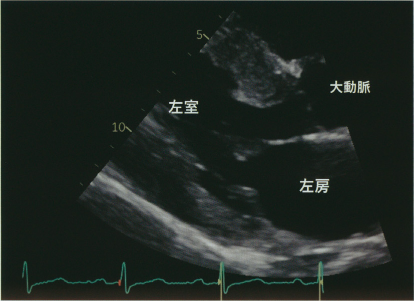
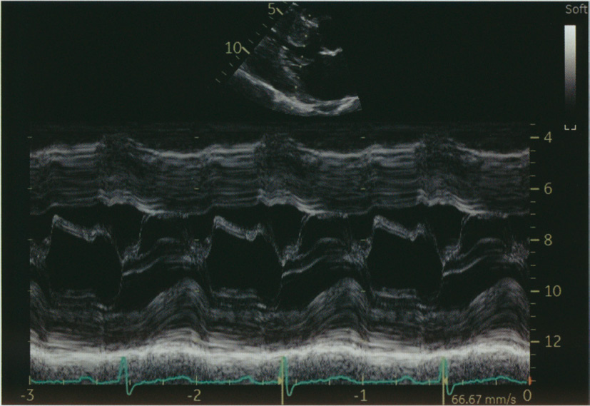
ａ 頻 脈
ｂ 立 位
ｃ 硝酸薬投与
ｄ Valsalva 手技
ｅ ジソピラミド投与
✅
ｅ ジソピラミド投与
ジソピラミドは陰性変力作用により左室流出路の圧較差を下げる治療薬で、雑音はむしろ減弱する（増強因子ではない）。頻脈・立位・硝酸薬・Valsalva手技はいずれも前負荷↓・後負荷↓・収縮性↑を介して雑音を増強させる。
🔒 閉塞性肥大型心筋症〈HOCM〉——雑音の強さは「左室の中身の量」で決まる
肥大型心筋症では心室中隔が不均等に厚くなる（非対称性中隔肥厚〈ASH〉）——厚い中隔と僧帽弁前尖に挟まれた左室流出路が狭くなり、そこを通る血流が加速する。SAMという自己増幅ループ：速い流れがVenturi効果と引きずり力で僧帽弁前尖を中隔側へ吸い寄せる＝収縮期前方運動〈SAM〉——SAMが起きると流出路はさらに狭まり、流速がさらに上がってSAMがさらに強まる。同時に僧帽弁の接合が崩れて後方へ向かう僧帽弁閉鎖不全を伴う。本例が胸骨左縁第4肋間を中心にLevine 4/6の収縮期雑音を聴くのはこの機序による。
提示された心エコー：（A）傍胸骨長軸像では、左室・大動脈・左房が並ぶ断面で心室中隔が後壁より明らかに厚く、左室内腔が相対的に狭い。（B）Mモードでは深度4〜6cmに厚い中隔のバンドが描出され、拡張期に開いた僧帽弁前尖が収縮期に中隔側（前方）へ引き寄せられる動き＝SAMが読める。ASH＋SAMが揃えば閉塞性と考えてよい。
圧較差を決める3つの因子：①前負荷↓（左室が小さくなり流出路が狭まる）②後負荷↓（駆出が速くなる）③収縮性↑（駆出が強くなる）——この3つで雑音は増強する。逆に前負荷↑・後負荷↑・収縮性↓で減弱する。
大動脈弁狭窄症など「穴が固定された狭窄」では増減の向きがちょうど逆になる——血液が多いほど大きな雑音になるからで、ここが本問の勘所である。
本例のⅣ音は、硬くなった左室へ心房収縮で血液を押し込む音で、拡張障害を反映する本症の典型所見である。
□ 選択肢の検討
| 選択肢 | 解説 |
|---|---|
| ａ 頻 脈 | 増強因子である（誤りではない）。頻脈は2つの経路で流出路の圧較差を上げる：①拡張期の充満時間が短くなって左室が小さくなる（前負荷↓）、②頻脈をもたらす交感神経緊張そのものが収縮性を上げる。左室の中身が減るほど厚い中隔と僧帽弁前尖の距離が縮まり、流出路が狭くなる——閉塞性肥大型心筋症の雑音は「左室の中身の量」で決まるという原則がここでも効く。だから本症では運動時・興奮時に症状が出る——失神が労作時に起こるのはこのためで、若年者の労作時失神を見たら本症を必ず候補に入れる。治療で徐拍化を狙うβ遮断薬・ベラパミルが有効なのは、この裏返し（充満時間を延ばして左室を大きくする）である。⚠️ 心房細動の合併は特に危険——頻脈になるうえ心房収縮による充満（atrial kick）を失うので、血行動態が急激に悪化する。 |
| ｂ 立 位 | 増強因子である（誤りではない）。立位では重力で下肢と腹部の静脈系に血液がプールし、静脈還流＝前負荷が減る——左室容量が減って流出路が狭まり、雑音は増強する。ベッドサイドで最も使いやすい手技がこれである：しゃがみ込み（squatting）で減弱し、そこから急に立ち上がる（standing）と増強する——この往復で閉塞性肥大型心筋症をほぼ言い当てられる。しゃがみ込みは下肢の静脈還流を増やす（前負荷↑）と同時に、下肢動脈を圧迫して後負荷も上げるので、二重に雑音を弱める。⚠️ 大動脈弁狭窄症では増減が逆になる——穴の大きさが固定された狭窄では、通る血液が多いほど雑音が大きくなるので、立位（前負荷↓）では減弱する。同じ「胸骨左縁〜右縁の収縮期駆出性雑音」を、聴診器を当てたまま姿勢だけで鑑別できることに本手技の価値がある。 |
| ｃ 硝酸薬投与 | 増強因子である（誤りではない）。硝酸薬は静脈系を強く拡張して前負荷を下げ、動脈側も拡張して後負荷を下げる——前負荷↓と後負荷↓はどちらも流出路圧較差を上げる方向なので、雑音は増強する。亜硝酸アミルの吸入は、かつて雑音の鑑別のために意図的に用いられた古典的な誘発試験である。 ⚠️⚠️ これは試験の知識である前に安全の知識である——閉塞性肥大型心筋症の患者に「胸痛だからニトログリセリン」を投与すると、閉塞が悪化して血圧が下がり失神・ショックに至りうる。本症の胸痛は冠動脈狭窄ではなく、肥厚した心筋の需要増大と細小血管の相対的虚血によるものなので、硝酸薬で改善しないどころか悪化する。同じ理由で強心薬（ジギタリス・カテコラミン）と過剰な利尿も禁忌に近い——いずれも「収縮性を上げる」か「左室を小さくする」操作である。 |
| ｄ Valsalva 手技 | 増強因子である（誤りではない）。Valsalva手技は息こらえで胸腔内圧を上げ、静脈還流を減らす——第Ⅱ相（いきみの持続期）で左室容量が最も小さくなり、閉塞性肥大型心筋症の雑音はここで増強する。この手技の価値は「ほとんどの心雑音を弱めるのに、本症だけを強める」点にある：大動脈弁狭窄症・僧帽弁閉鎖不全症など多くの雑音はValsalvaで減弱する——例外として増強するのは閉塞性肥大型心筋症と僧帽弁逸脱症（雑音が早く始まり長くなる）くらいである。解除後（第Ⅳ相）には静脈還流が戻って雑音は元に戻る。⚠️ Valsalva手技は発作性上室頻拍を止める迷走神経刺激としても使う——同じ手技が場面によって「診断の道具」にも「治療」にもなるので、目的を取り違えないこと。 |
| ◯ ｅ ジソピラミド投与 | これが誤りで、正解。ジソピラミドはVaughan Williams分類Ⅰa群の抗不整脈薬で、強い陰性変力作用（収縮性を下げる作用）をもつ——収縮が弱まれば流出路の圧較差は下がり、雑音はむしろ減弱する。だからこれは増強因子ではなく治療薬である：β遮断薬（第一選択）→ 気管支喘息などで使えなければ非ジヒドロピリジン系Ca拮抗薬（ベラパミル）→ それでも症状が残ればジソピラミドを追加、という階段のいちばん上に位置する。この3剤はいずれも「収縮を弱める」という一点で共通しており、本症の薬物療法の論理は終始一貫している。⚠️ ジソピラミドの副作用は抗コリン作用——口渇・尿閉（前立腺肥大では要注意）・便秘・緑内障の悪化、およびQT延長による催不整脈作用。心房細動を合併した本症では、レートを抑えつつ閉塞も軽くできるので理にかなった選択になる。薬で抑えきれない有症候性の高度閉塞には、経皮的中隔心筋焼灼術〈PTSMA〉や中隔心筋切除術（Morrow手術）を行う。 |
📌 誘発でも治療でも「収縮を弱め、左室を大きくする」——HOCMの一貫した論理
| 操作 | 左室容量／収縮性 | 雑音 |
|---|---|---|
| Valsalva手技（第Ⅱ相） | 静脈還流↓＝前負荷↓ | 増強 |
| 立位・起立 | 下肢に血液がプール＝前負荷↓ | 増強 |
| 硝酸薬・亜硝酸アミル | 前負荷↓＋後負荷↓ | 増強 |
| 頻脈・運動・カテコラミン | 充満時間↓＋収縮性↑ | 増強 |
| 期外収縮の直後の拍 | 収縮性↑（post-extrasystolic potentiation） | 増強（Brockenbrough–Braunwald徴候） |
| しゃがみ込み・下肢挙上 | 静脈還流↑＝前負荷↑ | 減弱 |
| 等尺性握力（handgrip） | 後負荷↑ | 減弱 |
| β遮断薬・ベラパミル・ジソピラミド | 収縮性↓（＋徐拍化で充満↑） | 減弱 |
治療の階段：①β遮断薬が第一選択 ②喘息などで使えなければベラパミル ③残る症状にジソピラミドを追加——いずれも収縮を弱める薬である。薬で抑えきれない有症候性の高度閉塞には、経皮的中隔心筋焼灼術〈PTSMA〉または中隔心筋切除術（Morrow手術）。
禁忌は硝酸薬・ジギタリスやカテコラミンなどの強心薬・過剰な利尿——すべて上の表で「増強」側にある操作である。
突然死対策も忘れない：若年発症・突然死の家族歴・原因不明の失神・著明な左室壁厚（30mm以上）・非持続性心室頻拍・運動時の血圧反応不良——これらのリスク因子からICDの適応を判断する。閉塞の軽減と突然死予防は別の軸なので、症状が取れても突然死対策は独立に考える。
🎯 国試ポイント
HOCMの雑音は前負荷↓・後負荷↓・収縮性↑で増強する——Valsalva・立位・硝酸薬・頻脈・期外収縮直後の拍がこれ。しゃがみ込み・等尺性握力・β遮断薬・ベラパミル・ジソピラミドで減弱——ジソピラミドは増強因子ではなく治療薬（Ⅰa群・強い陰性変力作用）。
大動脈弁狭窄症は増減が逆（立位で減弱・しゃがみ込みで増強）——ベッドサイドの立位／しゃがみ込みで鑑別できる。
心エコー所見はASH＋SAM＋左室流出路圧較差。Ⅳ音は拡張障害を示す。
禁忌は硝酸薬・強心薬・過剰利尿——「胸痛だからニトログリセリン」は本症では致命的になりうる。
Brockenbrough–Braunwald徴候＝期外収縮の直後の拍で脈圧が小さくなる。
Q.445(120F-73)★CBT臨床97%
次の文を読み、445 ～447 の問いに答えよ。
88 歳の男性。呼吸困難を主訴に来院した。
現病歴：1 週間前から労作時の呼吸困難が出現している。昨夜の就寝中から湿性咳嗽が出現しており、今朝から全身倦怠感が著明となり、安静にしていても症状が徐々に増悪するため受診した。
既往歴：高血圧、脂質異常症および糖尿病で外来通院中。2 年前から腰部脊柱管狭窄症で整形外科通院中。8 年前に心房細動でカテーテルアブレーション治療。10 年前には両側の手根管症候群で外科手術。
生活歴：喫煙は20 歳から現在まで10 本/ 日、飲酒は機会飲酒、妻との2 人暮らし。
家族歴：特記すべきことはない。
現 症：意識は清明。身長158cm、体重57kg。
この患者の呼吸困難の主病態はどれか。
88 歳の男性。呼吸困難を主訴に来院した。
現病歴：1 週間前から労作時の呼吸困難が出現している。昨夜の就寝中から湿性咳嗽が出現しており、今朝から全身倦怠感が著明となり、安静にしていても症状が徐々に増悪するため受診した。
既往歴：高血圧、脂質異常症および糖尿病で外来通院中。2 年前から腰部脊柱管狭窄症で整形外科通院中。8 年前に心房細動でカテーテルアブレーション治療。10 年前には両側の手根管症候群で外科手術。
生活歴：喫煙は20 歳から現在まで10 本/ 日、飲酒は機会飲酒、妻との2 人暮らし。
家族歴：特記すべきことはない。
現 症：意識は清明。身長158cm、体重57kg。
この患者の呼吸困難の主病態はどれか。
ａ 虚 血
ｂ 血 栓
ｃ 貧 血
ｄ うっ血
ｅ アレルギー
✅
ｄ うっ血
拡張障害により左室充満圧が上昇し、左房圧・肺静脈圧の上昇から肺うっ血を生じている＝主病態はうっ血。労作時呼吸困難に始まり、臥位（就寝中）で湿性咳嗽が出て安静時にも増悪する経過が典型。
💧 心不全の「うっ血」——ポンプの手前で血液が滞る
心不全の症状はうっ血（後方障害）と低心拍出（前方障害）の2系統に分けて考える——この2軸で整理すると、症状の並びから治療がそのまま決まる。うっ血が起こる筋道：心室が硬い（拡張障害）、あるいは動かない（収縮障害）と、その心室を満たすのに高い圧が要る——充満圧の上昇は必ず手前の静脈系へ伝わる。
左心系：左室充満圧↑ → 左房圧↑ → 肺静脈圧↑ → 肺毛細血管から間質へ漏出——労作時呼吸困難・起坐呼吸・発作性夜間呼吸困難・湿性咳嗽・coarse crackles。
右心系：右房圧↑ → 全身静脈圧↑——頸静脈怒張・肝腫大・下腿浮腫・胸水・腹水・体重増加。本例はこの両方が揃った両心不全の像である。
低心拍出の徴候：四肢冷感・尿量減少・血圧低下・意識障害・脈圧の狭小化。
2軸の組合せで治療を決める：Nohria–Stevenson分類（wet／dry × warm／cold）——うっ血優位（wet-warm）なら利尿薬と血管拡張薬、低灌流を伴う（wet-cold）なら強心薬・機械的補助を加える。「湿っているか」は起坐呼吸・頸静脈怒張・浮腫で、「冷たいか」は四肢冷感・脈圧・意識で判定する——いずれもベッドサイドで取れる情報だけで分類できるのが利点である。
収縮能が保たれていても心不全は起こる——左室駆出率が保たれた心不全〈HFpEF〉は高齢者で最も多い型で、主因は拡張障害である。本例のように壁が厚く硬い心臓では、収縮の数字が正常でも充満圧は容易に上がる。
□ 選択肢の検討
| 選択肢 | 解説 |
|---|---|
| ａ 虚 血 | 主病態ではない。虚血（心筋虚血）が呼吸困難として現れることは確かにある——とくに高齢者・糖尿病患者では胸痛を伴わない狭心症状（anginal equivalent）として労作時の息切れが出る。だから候補には入る：本例は高血圧・脂質異常症・糖尿病があり、20歳から現在まで10本／日の喫煙歴も持つ。しかし虚血で説明できない所見が並ぶ：1週間かけて労作時呼吸困難が進行し、就寝中から湿性咳嗽が出て、安静時にも増悪している——虚血は労作という「引き金」に同期して起こり、安静で軽快するのが基本形である。夜間の湿性咳嗽は臥位で静脈還流が増えることによる肺うっ血の症状で、虚血の時間経過とは一致しない。⚠️ 危険因子が並んでいると虚血を選びたくなるが、危険因子は「その病気である証拠」ではない——症状の時間経過と質で決める。 |
| ｂ 血 栓 | 主病態ではない。血栓＝急性肺血栓塞栓症を考えるのは妥当な発想である——8年前に心房細動でカテーテルアブレーションを受けた既往があり、心房細動が再発していれば左房内血栓から全身塞栓のリスクもある。だが肺血栓塞栓症の像とは合わない：典型は突然発症の呼吸困難・胸痛・失神で、低酸素血症を伴い、しばしば片側下肢の腫脹（深部静脈血栓症）が先行する——本例は1週間かけて漸増しており、就寝中に湿性咳嗽が出るという「臥位で悪くなる」性質を持つ。肺血栓塞栓症は臥位で改善こそすれ悪化しない（起坐呼吸は左心不全の症状）。湿性咳嗽＝痰の絡む咳は、肺胞や気道へ液体が漏れ出ていることを示す所見で、これは塞栓ではなくうっ血の言葉である。 |
| ｃ 貧 血 | 主病態ではない。貧血も労作時呼吸困難の重要な原因で、高齢者では必ず鑑別に入れる——酸素運搬能の低下を心拍出量の増加で代償するため、高拍出性心不全に至ることもある。しかし本例の症状の並びは貧血では説明しきれない：就寝中から始まる湿性咳嗽、安静時にも増悪する呼吸困難、全身倦怠感の急速な進行——貧血による息切れは体位に依存せず、夜間に咳を伴って悪化することもない。また貧血は数週から数か月かけて緩徐に進むことが多く、1週間で安静時呼吸困難まで至る経過は取りにくい。むしろ貧血は心不全の増悪因子として並存することが多い——心腎貧血症候群として鉄欠乏の是正が心不全の症状を改善しうるので、「主病態ではないが評価はする」という位置づけになる。 |
| ◯ ｄ うっ血 | これが正解。労作時呼吸困難 → 夜間の湿性咳嗽 → 安静時にも増悪、という進み方は左心系のうっ血（後方障害）の典型的な広がり方である。機序をたどる：心室が硬い、あるいは動かないと、その心室を満たすのに高い圧が要る → 充満圧の上昇は手前の左房へ伝わる → 肺静脈圧↑ → 肺毛細血管から間質・肺胞へ液体が漏出——これが労作時呼吸困難・起坐呼吸・発作性夜間呼吸困難・湿性咳嗽・coarse cracklesとして現れる。なぜ夜間に悪くなるのか：臥位になると下肢に溜まっていた血液が中心へ戻り（静脈還流↑）、肺の血液量が増えるからである。右心系のうっ血が加われば頸静脈怒張・肝腫大・下腿浮腫・胸水・腹水・体重増加が並ぶ。88歳・全周性の左室壁肥厚・両側手根管症候群と腰部脊柱管狭窄症の既往という背景からは、野生型トランスサイレチン型心アミロイドーシス〈ATTRwt〉による拡張障害（HFpEF）が想定される——収縮が保たれていても心不全は起こることを示す設問でもある。 |
| ｅ アレルギー | 主病態ではない。アレルギー（気管支喘息）を疑わせる所見が1つも無い——喘鳴の記載も、アレルゲン曝露や季節性のエピソードも、喘息やアトピーの既往も無い。ここで押さえるべきは紛らわしさそのもの：左心不全の肺うっ血は気道粘膜の浮腫を伴って喘鳴を生じることがあり、これを心臓喘息〈cardiac asthma〉とよぶ——「夜間に発作性の呼吸困難と喘鳴」という主訴は気管支喘息と心不全のどちらでも出るので、既往歴と身体所見で分ける。分ける手がかりは、起坐呼吸の程度・湿性ラ音の有無・頸静脈怒張・下腿浮腫・BNPの上昇・胸部エックス線写真の肺うっ血像である。⚠️ 誤って気管支拡張薬（β刺激薬）だけで対応すると、頻脈を招いて心不全を悪化させうる——高齢者の「喘息のような発作」は、まず心不全を否定してから喘息と呼ぶ。 |
📌 心アミロイドーシスの「赤旗」——心臓以外の所見が診断の入口になる
高齢者のHFpEFの背後には、野生型トランスサイレチン型アミロイドーシス〈ATTRwt〉が想像以上の頻度で潜んでいる——アミロイド線維が心筋間質に沈着して壁が厚く硬くなり、拡張障害から充満圧が上がってうっ血する。| 手がかり | 内容 |
|---|---|
| 両側手根管症候群 | 屈筋支帯へのアミロイド沈着。心症状に数年〜10年先行する最重要の赤旗 |
| 腰部脊柱管狭窄症 | 黄色靱帯へのアミロイド沈着 |
| 上腕二頭筋腱の断裂 | 腱への沈着（Popeye徴候） |
| 心電図の低電位＋偽梗塞パターン | 壁は厚いのに電位が低い。前胸部誘導のR波増高不良でQ波様にみえる |
| 心エコー | 全周性の左室壁肥厚・心筋輝度の上昇（granular sparkling）・心房中隔や弁の肥厚・拡張障害・apical sparing |
| 薬剤への反応 | ジギタリス・Ca拮抗薬に感受性が高く危険。降圧薬や利尿薬で容易に低血圧になる |
本例で拾える赤旗：88歳という年齢、両側の手根管症候群で10年前に手術、2年前からの腰部脊柱管狭窄症——整形外科の既往が2つ並んでいること自体が診断の入口になっている。⚠️ 既往歴を「関係のない整形外科の話」として読み飛ばさないこと——この設問群では既往歴こそが最大のヒントである。
心房細動の合併も多い——本例の8年前のアブレーションも、後から振り返れば沈着の初期像だった可能性がある。
🎯 国試ポイント
心不全の症状はうっ血（後方障害）と低心拍出（前方障害）の2軸で読む——本例は左右両方のうっ血が揃う。左心うっ血＝労作時呼吸困難・起坐呼吸・発作性夜間呼吸困難・湿性咳嗽・coarse crackles。右心うっ血＝頸静脈怒張・肝腫大・下腿浮腫・胸水・腹水・体重増加。
収縮能が保たれていても心不全は起こる〈HFpEF〉——高齢者では拡張障害が主因。
高齢＋全周性左室肥厚＋両側手根管症候群・腰部脊柱管狭窄症＝ATTR心アミロイドーシスを疑う。
治療方針はNohria–Stevenson分類（wet/dry × warm/cold）で決める。
高齢者の「喘息様発作」は心臓喘息を否定してから喘息と呼ぶ——β刺激薬だけの対応は頻脈を招いて心不全を悪化させうる。
Q.446(120F-74)★臨床53%
次の文を読み、445 ～447 の問いに答えよ。
88 歳の男性。呼吸困難を主訴に来院した。
現病歴：1 週間前から労作時の呼吸困難が出現している。昨夜の就寝中から湿性咳嗽が出現しており、今朝から全身倦怠感が著明となり、安静にしていても症状が徐々に増悪するため受診した。
既往歴：高血圧、脂質異常症および糖尿病で外来通院中。2 年前から腰部脊柱管狭窄症で整形外科通院中。8 年前に心房細動でカテーテルアブレーション治療。10 年前には両側の手根管症候群で外科手術。
生活歴：喫煙は20 歳から現在まで10 本/ 日、飲酒は機会飲酒、妻との2 人暮らし。
家族歴：特記すべきことはない。
現 症：意識は清明。身長158cm、体重57kg。
原因疾患の診断に重要な検査はどれか。
88 歳の男性。呼吸困難を主訴に来院した。
現病歴：1 週間前から労作時の呼吸困難が出現している。昨夜の就寝中から湿性咳嗽が出現しており、今朝から全身倦怠感が著明となり、安静にしていても症状が徐々に増悪するため受診した。
既往歴：高血圧、脂質異常症および糖尿病で外来通院中。2 年前から腰部脊柱管狭窄症で整形外科通院中。8 年前に心房細動でカテーテルアブレーション治療。10 年前には両側の手根管症候群で外科手術。
生活歴：喫煙は20 歳から現在まで10 本/ 日、飲酒は機会飲酒、妻との2 人暮らし。
家族歴：特記すべきことはない。
現 症：意識は清明。身長158cm、体重57kg。
原因疾患の診断に重要な検査はどれか。
ａ 針筋電図検査
ｂ 冠動脈造影検査
ｃ スパイロメトリ
ｄ 心臓電気生理学的検査
ｅ ピロリン酸シンチグラフィ
✅
ｅ ピロリン酸シンチグラフィ
99mTc-ピロリン酸シンチグラフィはATTR型心アミロイドーシスの心筋に強く集積し、M蛋白（免疫固定電気泳動・血清遊離軽鎖比）でAL型を除外できていれば、心筋生検を行わずに確定診断できる。
🔬 心アミロイドーシスの診断——「型を決める」ことがそのまま治療を決める
アミロイドーシスは、βシート構造をとった蛋白線維が細胞外に沈着して臓器を硬くする疾患群である——沈着する前駆蛋白の種類で病型が決まり、心臓に来るのは主に2型。①AL型：形質細胞が産生する免疫グロブリン軽鎖由来。多発性骨髄腫・MGUSに合併し、進行が速い。
②ATTR型：肝で作られるトランスサイレチン由来——加齢で四量体が壊れて沈着する野生型〈ATTRwt〉と、遺伝子変異による変異型〈ATTRv〉がある。
診断は3ステップで進む：
①疑う——高齢者のHFpEF、全周性左室肥厚、心電図の低電位、両側手根管症候群・腰部脊柱管狭窄症の既往
②AL型を否定する——血清・尿の免疫固定電気泳動と血清遊離軽鎖κ/λ比。ひとつでも陽性ならAL型を考え、血液内科で骨髄検査へ進む
③ATTRを証明する——99mTc-ピロリン酸シンチグラフィ。AL型の除外ができていればこれだけで確定でき、心筋生検を省略できる
この「生検を省ける」という一点が、PYPシンチが診断アルゴリズムの中心に据えられている理由である。
確定後にすること：TTR遺伝子検査で野生型か変異型かを分ける——変異型なら血縁者の発症前診断・遺伝カウンセリングにつながるからである。
治療：ATTRにはタファミジス（TTR四量体安定化薬）が生命予後と心血管入院を改善する。AL型では形質細胞をたたく化学療法（＋自家造血幹細胞移植）が主体——診療科そのものが循環器内科と血液内科に分かれるので、型の決定は「どこで治療するか」を決める作業でもある。
□ 選択肢の検討
| 選択肢 | 解説 |
|---|---|
| ａ 針筋電図検査 | 原因疾患の診断には結びつかない。針筋電図は筋原性か神経原性かを見分ける検査で、筋炎・運動ニューロン疾患・末梢神経障害の評価に用いる。本例には手根管症候群の既往があるので神経の話は無縁ではない——ただし手根管症候群の評価は針筋電図ではなく神経伝導検査（正中神経の遠位潜時延長）が中心である。より本質的な問題は、たとえ手根管症候群を証明できても「心臓が悪い原因」の証明にはならないことである——手根管症候群はアミロイドーシスを疑う入口（赤旗）であって、確定診断の手段ではない。沈着そのものを見たいなら手術検体や腹壁脂肪・消化管の生検でCongo red染色を行う——本問はあくまで「心臓の原因疾患を決める検査」を問うているので、狙う臓器が違う。 |
| ｂ 冠動脈造影検査 | 除外にはなるが証明にはならない。冠動脈造影は虚血性心疾患を否定・確定する検査である——本例は高血圧・脂質異常症・糖尿病・喫煙という危険因子を持つので、虚血性心筋症の可能性を考えること自体は正しい。だが本例の心臓は「詰まって動かない」形をしていない：全周性の左室壁肥厚があり、収縮能は保たれ、症状は拡張障害によるうっ血として現れている——虚血性心筋症であれば壁は薄く（瘢痕化）、壁運動異常は冠動脈支配域に一致した分布になる。加えて88歳の患者に侵襲的検査を行うなら、結果が治療を変えることが前提である——本例で治療を変えるのは「壁が厚く硬い原因は何か」の答えのほうで、そこへ届くのは冠動脈造影ではない。なお非侵襲的に虚血を除外したいなら冠動脈CTという選択肢もある。 |
| ｃ スパイロメトリ | 見ている臓器が違う。スパイロメトリは肺の換気機能を測る検査で、閉塞性障害（1秒率低下）と拘束性障害（％肺活量低下）を分ける。呼吸困難の鑑別として呼吸器疾患を考えるのは正しい発想である——本例は20歳から現在まで10本／日の喫煙歴があり、COPDの併存はありうる。しかし本例の呼吸困難は臥位で悪化し湿性咳嗽を伴い、内科的治療で改善している——これは肺うっ血の経過であって気流制限の経過ではない。そもそも急性心不全の状態でスパイロメトリを行っても、うっ血による拘束性パターンが出るだけで解釈できない——安定してから行う検査である。⚠️ 問われているのは「原因疾患の診断に重要な検査」——併存疾患の評価と原因疾患の診断を混同しないこと。 |
| ｄ 心臓電気生理学的検査 | 不整脈の機序を調べる検査である。心臓電気生理学的検査〈EPS〉はカテーテル電極で心内電位を記録し、頻拍の回路や伝導障害の部位を同定する——アブレーションの前段階として行われることが多い。本例には8年前の心房細動に対するアブレーションの既往があるので連想はしやすい。しかし今回の主訴は呼吸困難であって動悸や失神ではなく、症状はうっ血として現れている——不整脈の機序を明らかにしても、壁が厚く硬くなった原因は分からない。むしろ因果は逆向きに考えるべきで、心アミロイドーシスでは心房にも沈着が及ぶために心房細動を高率に合併する——過去の心房細動そのものが背景疾患のサインだった可能性がある。侵襲度の点でも、88歳に対してカテーテル検査を行う前に非侵襲的な検査で診断がつくならそちらが優先される。 |
| ◯ ｅ ピロリン酸シンチグラフィ | これが正解。99mTc-ピロリン酸〈PYP〉シンチグラフィは、ATTR型心アミロイドーシスを非侵襲的に診断できる検査である——もともと骨シンチグラフィに使う製剤が、なぜかATTRアミロイドの沈着した心筋に強く集積する。読み方：心臓への集積を肋骨の集積と比べて Perugini grade 0〜3 に分類し、grade 2以上（心臓の集積が肋骨と同等以上）を陽性とする——心臓／対側胸部の比〈H/CL比〉1.5以上も指標になる。この検査の最大の意義：AL型を血液検査で除外できていれば、心筋生検を行わずにATTR型と確定できる——高齢者に侵襲的な心筋生検を課さずに診断が完結することの臨床的な価値は大きい。⚠️⚠️ 順序を守ること——M蛋白（血清・尿の免疫固定電気泳動と血清遊離軽鎖κ/λ比）を先に否定する。AL型でも軽度の集積が出ることがあり、AL型は無治療なら数か月〜1年で亡くなるので見逃せない。確定後はTTR遺伝子検査で野生型か変異型かを分け、変異型なら血縁者の遺伝カウンセリングへつなぐ。 |
📌 AL型とATTR型——同じ「心アミロイドーシス」でも診療科が変わる
| AL型 | ATTR型（野生型） | |
|---|---|---|
| 前駆蛋白 | 免疫グロブリン軽鎖 | トランスサイレチン |
| 産生元 | 形質細胞（骨髄） | 肝臓 |
| 背景 | 多発性骨髄腫・MGUS | 加齢（高齢男性に多い） |
| M蛋白・遊離軽鎖比 | 陽性 | 陰性 |
| PYPシンチ | 集積しない〜軽度 | 強く集積（Perugini grade 2以上） |
| 心外症状 | 巨舌・眼囲紫斑・腎（ネフローゼ）・肝腫大 | 手根管症候群・脊柱管狭窄症・上腕二頭筋腱断裂 |
| 進行 | 速い（無治療で数か月〜1年） | 緩徐（年単位） |
| 治療 | 化学療法・自家造血幹細胞移植 | タファミジス |
治療上の注意：心アミロイドーシスではジギタリスがアミロイド線維に結合して中毒を起こしやすい。Ca拮抗薬やβ遮断薬も低血圧・徐脈を招きやすい——硬い心室は一回拍出量を増やせないため、心拍出量を心拍数に依存しているからである。治療の中心は利尿薬によるうっ血の管理になる——ただし前負荷に依存する循環なので、利尿をかけすぎると容易に低血圧になる（さじ加減が難しい）。
心房細動の合併が多く、塞栓リスクが高いので抗凝固療法の閾値は低い。
🎯 国試ポイント
ATTR心アミロイドーシスの非侵襲的診断＝99mTc-ピロリン酸シンチグラフィ——Perugini grade 2以上／H/CL比1.5以上で陽性。M蛋白（免疫固定電気泳動・血清遊離軽鎖κ/λ比）を否定したうえでPYPシンチ陽性なら、心筋生検なしに確定できる——順序を逆にしてAL型を見逃さないこと。
AL型は血液内科（化学療法）、ATTR型はタファミジス——型が診療科と治療を決める。
沈着の証明は本来は生検＋Congo red染色で偏光顕微鏡下の黄緑色複屈折——PYPシンチはこれを代替する。
ジギタリスは中毒を起こしやすく避ける。うっ血管理は利尿薬が中心だが、前負荷依存の循環なので過剰利尿で低血圧になる。
確定後はTTR遺伝子検査で野生型／変異型を分け、変異型は遺伝カウンセリングへつなぐ。
Q.447(120F-75)★CBT臨床99%
次の文を読み、445 ～447 の問いに答えよ。
88 歳の男性。呼吸困難を主訴に来院した。
現病歴：1 週間前から労作時の呼吸困難が出現している。昨夜の就寝中から湿性咳嗽が出現しており、今朝から全身倦怠感が著明となり、安静にしていても症状が徐々に増悪するため受診した。
既往歴：高血圧、脂質異常症および糖尿病で外来通院中。2 年前から腰部脊柱管狭窄症で整形外科通院中。8 年前に心房細動でカテーテルアブレーション治療。10 年前には両側の手根管症候群で外科手術。
生活歴：喫煙は20 歳から現在まで10 本/ 日、飲酒は機会飲酒、妻との2 人暮らし。
家族歴：特記すべきことはない。
現 症：意識は清明。身長158cm、体重57kg。内科的治療で症状は改善したが、患者の身体活動能力は低下した。
自宅療養に向けてQOLを改善することを目的としてリハビリテーションを行う際に適切でないのはどれか。
88 歳の男性。呼吸困難を主訴に来院した。
現病歴：1 週間前から労作時の呼吸困難が出現している。昨夜の就寝中から湿性咳嗽が出現しており、今朝から全身倦怠感が著明となり、安静にしていても症状が徐々に増悪するため受診した。
既往歴：高血圧、脂質異常症および糖尿病で外来通院中。2 年前から腰部脊柱管狭窄症で整形外科通院中。8 年前に心房細動でカテーテルアブレーション治療。10 年前には両側の手根管症候群で外科手術。
生活歴：喫煙は20 歳から現在まで10 本/ 日、飲酒は機会飲酒、妻との2 人暮らし。
家族歴：特記すべきことはない。
現 症：意識は清明。身長158cm、体重57kg。内科的治療で症状は改善したが、患者の身体活動能力は低下した。
自宅療養に向けてQOLを改善することを目的としてリハビリテーションを行う際に適切でないのはどれか。
ａ 栄養療法との併用
ｂ 低酸素血症の確認
ｃ サルコペニアの評価
ｄ 高負荷運動処方からの開始
ｅ 体調変化による運動処方の変更
✅
ｄ 高負荷運動処方からの開始
心筋症の心臓リハビリは低〜中強度から段階的に開始する。高負荷から始めるのは不適切。
🏃 心臓リハビリテーション——「安静」から「動かす」へ変わった心不全治療
かつて心不全の治療は安静が原則だったが、安静そのものが骨格筋の萎縮・自律神経調節の悪化・血栓リスクを招くことが分かり、現在は運動療法が推奨される標準治療になっている。心臓リハビリテーションは運動だけを指すのではない：運動療法・患者教育・栄養指導・服薬アドヒアランス支援・禁煙・心理社会的支援・social supportの調整を含む、多職種による包括的な疾病管理プログラムである——医師・看護師・理学療法士・管理栄養士・薬剤師・医療ソーシャルワーカーが関わる。心不全患者において運動耐容能とQOLの改善、再入院の減少が示されている。
効果の機序は心臓そのものより末梢にある：骨格筋のミトコンドリア機能と毛細血管密度の改善、血管内皮機能の改善、交感神経緊張の低下と副交感神経活性の回復——これらが「同じ心拍出量でより長く歩ける」体をつくる。左室駆出率がほとんど変わらなくても運動耐容能が上がるのはこのためである。
高齢心不全患者の特殊事情：フレイル・サルコペニア・低栄養が絡み合って悪循環をつくる（心臓悪液質）——だから運動と栄養は必ずセットで介入する。本問の選択肢が栄養・サルコペニア・低酸素・体調変化と並んでいるのは、これらが1つのプログラムの構成要素だからである。
処方の原則はFITT：Frequency（週3〜5回）・Intensity（ATレベル／Borg 11〜13）・Time（5〜10分から30分へ漸増）・Type（有酸素運動＋低負荷レジスタンス運動）——要は「低いところから始めて、少しずつ上げる」に尽きる。
□ 選択肢の検討
| 選択肢 | 解説 |
|---|---|
| ａ 栄養療法との併用 | 適切である。高齢心不全患者では、フレイル・サルコペニア・低栄養が絡み合って悪循環をつくる（心臓悪液質）——栄養が足りないところへ運動負荷だけをかけると、筋蛋白の異化が進んでかえって筋肉が減る。だから運動と栄養は必ずセットで介入する：十分なエネルギーと蛋白質（心不全でも過度の蛋白制限はしない）、微量元素・ビタミンの補充、食欲低下への対応。一方で塩分と水分の管理は心不全治療の柱でもあるので、減塩と栄養確保を両立させる設計が要る——管理栄養士が多職種チームに入る意味はここにある。鉄欠乏の是正（心不全患者では鉄欠乏が高頻度で、静注鉄が運動耐容能とQOLを改善する）も栄養介入の一部である。⚠️ 「心臓リハビリテーション＝運動」ではない——運動療法・患者教育・栄養指導・服薬アドヒアランス支援・禁煙・心理社会的支援を含む包括的疾病管理プログラムである。 |
| ｂ 低酸素血症の確認 | 適切である。運動を始める前と最中に低酸素血症の有無を確認するのは安全管理の基本である——心不全の増悪期には肺うっ血によりSpO2が低下し、そこへ負荷をかけると低酸素をさらに悪化させる。中止基準の1つがSpO2 90％未満である。88歳で20歳から10本／日の喫煙歴があればCOPDの併存もありうるので、心臓由来と呼吸器由来の呼吸困難が混在しうる——SpO2は両者に共通する客観的な安全指標として機能する。開始前に確認する項目はほかに、体重の急増（3日で2kg以上）、浮腫の増悪、安静時の呼吸困難、安静時心拍数の上昇、血圧——これらは「今日は運動をしてよい日か」を判断するための毎回のチェックである。患者自身にこれらを測って記録してもらうこと（セルフモニタリング）が、再入院予防の中核になる。 |
| ｃ サルコペニアの評価 | 適切である。サルコペニアは加齢や疾患に伴う骨格筋量と筋力の低下で、心不全患者では高率に合併し、予後と直結する。評価するから処方が決まる：握力・歩行速度・骨格筋量を測って現在地を知り、それに合わせて負荷量と運動の型（有酸素運動とレジスタンス運動の配分）を決める。筋力が著しく落ちている患者にいきなり有酸素運動を課しても、立ち上がる筋力が無ければ歩けない——低負荷のレジスタンス運動から入って、ADLに必要な筋力を先につくることがある。本例は88歳で「身体活動能力が低下した」と明記されている——入院に伴う廃用（disuse）が加わった状態で、サルコペニアの評価はこの患者にとってまさに必要な手順である。フレイル・認知機能・転倒リスクの評価も同じ枠組みに入る。 |
| ◯ ｄ 高負荷運動処方からの開始 | これが適切でなく、正解。運動処方の原則は「低い強度から始めて、反応を見ながら少しずつ上げる」である——高負荷から開始すれば、心不全の増悪・致死性不整脈・転倒といった有害事象を招く。処方はFITTで組む：Frequency（週3〜5回）・Intensity（嫌気性代謝閾値〈AT〉レベル、peak VO2の40〜60％、Borg 11〜13）・Time（5〜10分から30分へ漸増）・Type（有酸素運動＋低負荷レジスタンス運動）。強度の決め方は本来、心肺運動負荷試験〈CPX〉でATを求めるのが最も確かである——ATを超えると乳酸が蓄積し交感神経が急に緊張するので、そこを超えない強度が「安全でかつ効果がある」。⚠️ 本例は88歳で、目的は「自宅療養に向けたQOLの改善」——この年齢層では運動耐容能の最大化よりも、転倒せずに身の回りのことができる（ADLの維持）ことが到達目標になる。目標設定そのものが患者ごとに変わることを押さえておきたい。 |
| ｅ 体調変化による運動処方の変更 | 適切である。心不全は日々変動する病態なので、運動処方は一度決めたら固定するものではない——体重増加・浮腫の増悪・安静時呼吸困難・安静時心拍数の上昇といったサインがあれば、その日の負荷を下げるか中止する。中止基準：胸痛・強い呼吸困難、SpO2 90％未満、収縮期血圧の低下または過度の上昇、危険な不整脈の出現、Borg指数14以上、ふらつき・冷汗。逆に順調なら少しずつ強度と時間を上げる——「体調変化による処方の変更」は後退だけを意味するのではなく、漸増という前進も含む。Borg指数の実用性：6〜20の自覚的運動強度スケールで「11＝楽である」「13＝ややきつい」「15＝きつい」——数値に10を掛けるとおおよその心拍数に相当するのが由来で、β遮断薬内服中で心拍数が指標にならない患者でも使える。患者自身が自分の体調を言葉にできるようになることが、退院後の在宅管理を支える。 |
📌 運動療法の禁忌と中止基準——「やってはいけない状態」を先に覚える
| 区分 | 内容 |
|---|---|
| 絶対的禁忌 | 非代償性の急性心不全、不安定狭心症・急性心筋梗塞発症直後、症候性の重症大動脈弁狭窄症、コントロール不良の不整脈、急性心筋炎・心膜炎、急性全身疾患・発熱 |
| 開始前に確認 | 体重の急増（3日で2kg以上）、浮腫の増悪、安静時の呼吸困難、安静時心拍数の上昇、血圧、SpO2 |
| 中止基準 | 胸痛・強い呼吸困難、SpO2 90％未満、収縮期血圧の低下または過度の上昇、危険な不整脈の出現、Borg指数14以上、ふらつき・冷汗 |
| 強度の指標 | CPXで求めた嫌気性代謝閾値〈AT〉、peak VO2の40〜60％、Borg 11〜13 |
急性心筋炎・心膜炎が禁忌に入っている理由：炎症が残る心筋への運動負荷は致死性不整脈の誘因になる——回復後も3〜6か月は競技スポーツを控えるのが原則である。
高齢者では目標そのものを組み替える：peak VO2の最大化ではなく、立ち上がる・歩く・トイレへ行くというADLの維持、転倒しないこと、そして自宅で暮らし続けられること——本例が「自宅療養に向けてQOLを改善する」と目的を明示しているのは、この考え方に沿っている。
退院後に続かなければ意味がない——外来心臓リハビリテーションへの移行と、セルフモニタリング（毎日の体重・血圧・脈拍の記録）の習慣づけまでが一続きの介入である。
🎯 国試ポイント
心臓リハビリテーションは低強度から段階的に開始する——高負荷から始めるのは誤り。包括的プログラム＝運動＋栄養＋教育＋服薬アドヒアランス＋心理社会的支援の多職種介入。
強度の指標はCPXのAT・peak VO2の40〜60％・Borg 11〜13——β遮断薬内服中は心拍数が使えないのでBorgが有用。
中止基準＝SpO2 90％未満・胸痛・危険な不整脈・血圧異常・Borg 14以上。開始前は体重の急増（3日で2kg以上）・浮腫・安静時呼吸困難を確認。
高齢心不全ではフレイル・サルコペニア・低栄養が予後を規定する——運動と栄養は必ずセットで。
効果の主座は末梢（骨格筋・血管内皮・自律神経）にあり、左室駆出率が変わらなくても運動耐容能は改善する。
Q.448(119D-47)★臨床📷 画像76%
55 歳の男性。胸痛と嘔吐を主訴に来院した。3 日前から感冒様症状があり市販の総合感冒薬で様子を見ていたが、発熱と倦怠感が改善しなかった。本日午前中に15分程度の胸痛があり、その後2回嘔吐したため受診した。意識は清明。体温37.6℃。脈拍96/ 分、整。血圧106/58mmHg。呼吸数18/ 分。SpO2 94％（room air）。咽頭に軽度の発赤を認める。頸静脈の怒張を認める。心音に異常は認めない。呼吸音はcoarse crackles を聴取する。腹部は平坦、軟で、肝・脾を触知しない。腸雑音に異常を認めない。下腿に浮腫を認める。血液所見：赤血球460 万、Hb 13.3g/dL、Ht42％、白血球12,800、血小板21 万。血液生化学所見：AST 35U/L、ALT 35U/L、LD 286U/L（基準124 ～222）、CK 488U/L（基準59 ～248）、尿素窒素12mg/dL、クレアチニン0.6mg/dL、血糖86mg/dL、BNP 1,289pg/mL（基準18.4 以下）。免疫血清学所見：CRP 2.3mg/dL。心筋トロポニンT 迅速検査陽性。12 誘導心電図（A）と胸部エックス線写真（B）とを示す。
この患者の診断に必要性が低い検査はどれか。
この患者の診断に必要性が低い検査はどれか。
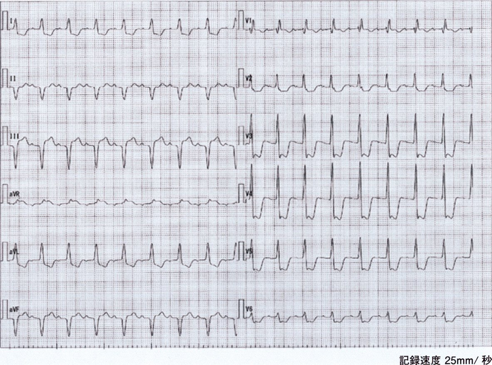
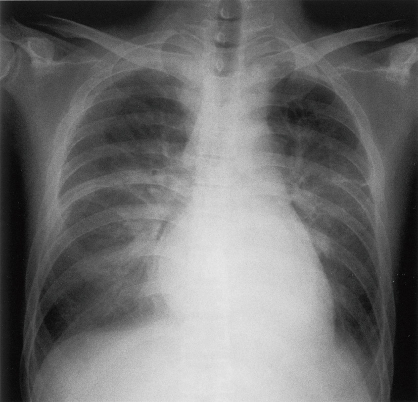
ａ 心筋生検
ｂ 心臓MRI
ｃ 心エコー検査
ｄ 冠動脈造影検査
ｅ MIBG 交感神経心筋シンチグラフィ
✅
ｅ MIBG交感神経心筋シンチグラフィ
MIBG心筋シンチは慢性心不全（DCMなど）の予後評価に用いるが、急性心筋炎の診断には不要。
🧪 急性心筋炎をどう証明するか——「急性冠症候群でないこと」から始まる
急性心筋炎は胸痛・トロポニン上昇・ST変化・心不全という急性冠症候群とまったく同じ顔で現れる——だから診断は「心筋炎を証明する」より先に「急性心筋梗塞を否定する」ところから始まる。本例は3日前からの感冒様症状という先行感染に加え、頸静脈怒張・coarse crackles・下腿浮腫という両心不全の身体所見、CK 488U/L・トロポニンT陽性という心筋傷害、BNP 1,289pg/mLという充満圧上昇が揃っている。検査の組み立ては次の順になる：①心エコー——ベッドサイドで壁運動・EF・心嚢液を確認し重症度を決める。②冠動脈造影——急性冠症候群の除外。同じカテーテル室でそのまま心筋生検まで行うことが多い。③心臓MRI——心筋の浮腫と遅延造影で炎症の範囲・分布を可視化する（Lake Louise基準）。生検が難しい例で特に価値がある。④心筋生検——確定診断。免疫抑制療法が効く特殊型を見分ける唯一の手段でもある。
これらに対してMIBG心筋シンチは心臓交感神経の機能画像で、時間軸が違う——慢性心不全の予後予測やParkinson病の診断に使う検査であり、「今この胸痛が何か」を答えてはくれない。
□ 選択肢の検討
| 選択肢 | 解説 |
|---|---|
| ａ 心筋生検 | 必要性は高い。心筋生検は急性心筋炎の確定診断の手段である——リンパ球を主体とする炎症細胞浸潤と心筋細胞の変性・壊死を認めれば診断が確定する（Dallas基準）。また巨細胞性心筋炎・好酸球性心筋炎・心サルコイドーシスなど免疫抑制療法の適応となる病型を拾い上げる意味も大きい。 |
| ｂ 心臓MRI | 必要性は高い。心臓MRIは心筋の浮腫（T2強調・T2マッピング）と遅延造影〈LGE〉を同時に評価でき、心筋炎の診断基準（Lake Louise基準）の中核をなす——心筋炎のLGEは心外膜側から中層に分布し、心内膜側から広がる心筋梗塞のLGEとは分布が異なるので鑑別に直結する。 |
| ｃ 心エコー検査 | 必要性は高い。ベッドサイドで直ちに行える第一の検査である——壁運動低下の範囲と程度・左室駆出率・心嚢液の有無・壁厚（浮腫）・弁膜症の除外が一度に分かり、重症度の判定と経過観察の基準になる。 |
| ｄ 冠動脈造影検査 | 必要性は高い。本例は胸痛＋トロポニン陽性＋心不全という急性冠症候群と区別のつかない提示である——冠動脈に有意狭窄がないことを示して急性心筋梗塞を除外することが心筋炎の診断の前提であり、緊急性の面からも省略できない。 |
| ◯ ｅ MIBG 交感神経心筋シンチグラフィ | 必要性が低く、これが正解。123I-MIBG心筋シンチグラフィは心臓交感神経終末の機能をみる検査である——後期像の心臓／縦隔比〈H/M比〉の低下とwashout rateの亢進は交感神経の脱神経を意味し、慢性心不全・拡張型心筋症の予後予測やLewy小体病（Parkinson病・レビー小体型認知症）の診断に用いられる。いずれも慢性の病態を評価する検査であって、急性心筋炎の急性期診断には寄与しない。 |
📌 心筋炎の検査を「何が見えるか」で並べ直す
| 検査 | 見えるもの | 心筋炎での位置づけ |
|---|---|---|
| 心エコー | 壁運動・EF・心嚢液・壁厚 | 最初に行う。重症度判定と経過観察 |
| 冠動脈造影 | 冠動脈の狭窄・閉塞 | 急性心筋梗塞の除外（前提条件） |
| 心臓MRI | 心筋浮腫（T2）・遅延造影は心外膜側〜中層 | 非侵襲的な診断（Lake Louise基準） |
| 心筋生検 | リンパ球浸潤・心筋壊死・巨細胞・好酸球 | 確定診断＋治療可能な特殊型の同定 |
| MIBG心筋シンチ | 心臓交感神経終末の機能（H/M比・washout rate） | 慢性心不全の予後予測／Lewy小体病の診断。急性期の診断には不要 |
| 心筋血流SPECT | 心筋血流の分布 | 虚血の評価。心筋炎には非特異的 |
なお免疫チェックポイント阻害薬による心筋炎は近年の重要トピックで、投与開始から数週以内に発症し致死率が高く、大量ステロイドの適応となる——がん治療歴の聴取は心筋炎の診療で必須である。
🎯 国試ポイント
①急性心筋炎の診断は心エコー→冠動脈造影（AMIの除外）→心臓MRI→心筋生検（確定）の順②MIBG心筋シンチは急性心筋炎の診断に必要性が低い——慢性心不全の予後予測とLewy小体病の診断に用いる検査
③心臓MRIの遅延造影は心筋炎で心外膜側〜中層、心筋梗塞で心内膜側から——分布で鑑別できる
④心筋生検は炎症が斑状なので陰性でも否定できない
⑤特殊型（巨細胞性・好酸球性・免疫チェックポイント阻害薬関連）は免疫抑制療法の適応——生検で拾う意義がここにある
Q.449(116F-7)★一般67%
心雑音・心音と疾患について正しい組合せはどれか。
ａ 連続性雑音 ―――――――――――――― 大動脈弁狭窄兼閉鎖不全症
ｂ 心膜ノック音 ――――――――――――― 心タンポナーデ
ｃ 吸気で増強する収縮期雑音 ――――――― 肺動脈弁閉鎖不全症
ｄ 上半身の前傾で増強する拡張期雑音 ――― 三尖弁狭窄症
ｅ しゃがみ込みで減弱する収縮期雑音 ――― 閉塞性肥大型心筋症
✅
ｅ しゃがみ込みで減弱する収縮期雑音 ― 閉塞性肥大型心筋症
HOCMの雑音：しゃがみ込み（静脈還流↑→前負荷↑→閉塞↓）で減弱する。
🎧 心雑音は「時相・最強点・変化」の3つで読む
心雑音の問題は、暗記の羅列ではなく①どの時相か ②どこが最強点か ③どの操作で変わるかの3軸で整理すると解ける。①時相：収縮期＝血液が「出るはずのない方向へ出る（AS・PS・MR・TR・VSD）」、拡張期＝「戻るはずのない方向へ戻る（AR・PR）」か「入るのに抵抗がある（MS・TS）」、連続性＝「収縮期も拡張期も圧較差が続く短絡（PDA）」。
②呼吸による変化——吸気で胸腔内圧が下がると右心系への静脈還流が増えるので、右心系の雑音（TR・TS・PS・PR）はすべて吸気で増強する（Rivero-Carvallo徴候）——左心系の雑音は逆に呼気で増強する。「呼吸で増える＝右心」と覚えると1問で2つ判定できる。
③体位・手技による変化——ここで閉塞性肥大型心筋症だけが例外的な振る舞いをする。ふつうの狭窄・逆流の雑音は血流量が多いほど大きいので前負荷が増える操作（しゃがみ込み・下肢挙上）で増強する——ところがHOCMは左室が小さくなるほど流出路が詰まるので増減が完全に逆転する。僧帽弁逸脱症も同じ向き（左室が小さいほど逸脱が強まる）に振る舞う。
□ 選択肢の検討
| 選択肢 | 解説 |
|---|---|
| ａ 連続性雑音 ―――――――――――――― 大動脈弁狭窄兼閉鎖不全症 | 誤った組合せ。大動脈弁狭窄兼閉鎖不全症では収縮期駆出性雑音と拡張早期の灌流性雑音が別々に聞こえる（to-and-fro murmur＝往復雑音）——Ⅱ音のところでいったん途切れるので、Ⅱ音をまたいで続く連続性雑音とは区別される。連続性雑音の代表は動脈管開存症で、ほかに動静脈瘻・Valsalva洞動脈瘤破裂・冠動静脈瘻がある——いずれも収縮期にも拡張期にも圧較差が続く短絡である。 |
| ｂ 心膜ノック音 ――――――――――――― 心タンポナーデ | 誤った組合せ。心膜ノック音は収縮性心膜炎の所見である——硬く肥厚した心膜のせいで、拡張早期の急速充満が途中で突然せき止められるときに生じる高調な音で、Ⅲ音よりやや早いタイミングで聞こえる。心タンポナーデの所見はBeck三徴（血圧低下・頸静脈怒張・心音減弱）と奇脈であり、心音はむしろ小さくなる。 |
| ｃ 吸気で増強する収縮期雑音 ――――――― 肺動脈弁閉鎖不全症 | 誤った組合せ。「吸気で増強する」は右心系の雑音の特徴（Rivero-Carvallo徴候）で、そこは正しい——しかし肺動脈弁閉鎖不全の雑音は拡張期（肺高血圧に伴うものをGraham Steell雑音という）であって収縮期ではない。吸気で増強する収縮期雑音なら三尖弁閉鎖不全症・肺動脈弁狭窄症が正しい相手である。 |
| ｄ 上半身の前傾で増強する拡張期雑音 ――― 三尖弁狭窄症 | 誤った組合せ。上半身を前傾させ、呼気で息を止めたときに増強する拡張期雑音は大動脈弁閉鎖不全症の灌流性雑音である——前傾により大動脈基部が胸壁に近づくためで、第3肋間胸骨左縁（Erb領域）で最もよく聞こえる。三尖弁狭窄症は胸骨左縁下部で聴く拡張期ランブルで、吸気で増強する（右心系だから）。 |
| ◯ ｅ しゃがみ込みで減弱する収縮期雑音 ――― 閉塞性肥大型心筋症 | 正しい組合せであり、これが正解。しゃがみ込み（squatting）では下肢の静脈還流が増えて前負荷が上がり、同時に末梢血管抵抗が上がって後負荷も増す——左室が大きくふくらむので流出路の狭窄がゆるみ、雑音は減弱する。逆に立位・Valsalva手技では前負荷が減って雑音が増強する。大動脈弁狭窄症の雑音は「血液が多いほど大きい」のでしゃがみ込みで増強し、増減の向きが逆になる——ベッドサイドでこの2つを分ける古典的な手技である。 |
📌 覚えておきたい特徴的な心音・心雑音
| 所見 | 疾患 | 成り立ち |
|---|---|---|
| 連続性雑音 | 動脈管開存症 | 収縮期も拡張期も大動脈＞肺動脈の圧較差が続く |
| 心膜ノック音 | 収縮性心膜炎 | 硬い心膜で急速充満が急停止する |
| 僧帽弁開放音〈OS〉 | 僧帽弁狭窄症 | 硬化した弁が開くときの音（Ⅱ音の直後） |
| 収縮中期クリック | 僧帽弁逸脱症 | 逸脱した弁尖が張りきる音 |
| 駆出性クリック | 大動脈二尖弁・肺動脈弁狭窄 | 硬い弁が開ききる音 |
| Ⅲ音（奔馬調律） | 心不全・僧帽弁閉鎖不全 | 拡張早期の急速充満で拡大した心室が振動（容量負荷） |
| Ⅳ音 | 肥大型心筋症・高血圧・大動脈弁狭窄 | 心房収縮で硬い心室に押し込む音（拡張障害） |
| Austin Flint雑音 | 大動脈弁閉鎖不全症 | 逆流が僧帽弁前尖を押し、機能的な僧帽弁狭窄をつくる |
| Graham Steell雑音 | 肺高血圧に伴う肺動脈弁閉鎖不全 | 拡張期の灌流性雑音 |
🎯 国試ポイント
①しゃがみ込みで減弱する収縮期雑音＝閉塞性肥大型心筋症。立位・Valsalvaで増強②連続性雑音＝動脈管開存症。AS＋ARは「Ⅱ音で途切れる」to-and-fro murmurで連続性ではない
③心膜ノック音＝収縮性心膜炎。心タンポナーデは心音減弱（Beck三徴）
④吸気で増強＝右心系（Rivero-Carvallo徴候）。肺動脈弁閉鎖不全は拡張期雑音（Graham Steell）
⑤前傾坐位・呼気で増強する拡張期雑音＝大動脈弁閉鎖不全症
Q.450(114A-14)★一般📷 画像2択87%
心エコー図（A ～C）を示す。
認められる所見はどれか。2 つ選べ。
認められる所見はどれか。2 つ選べ。
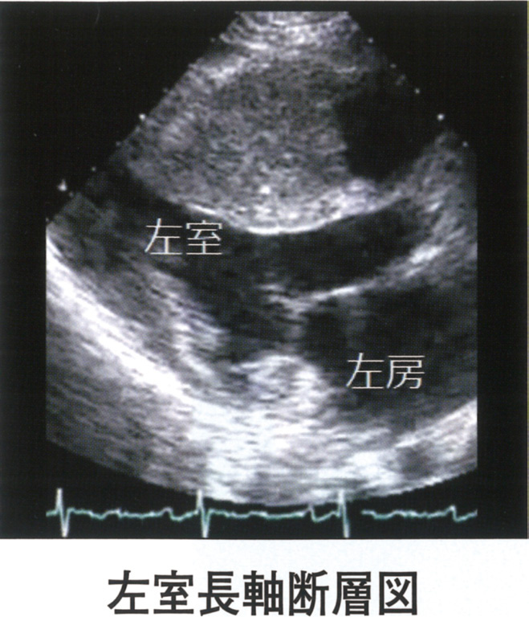
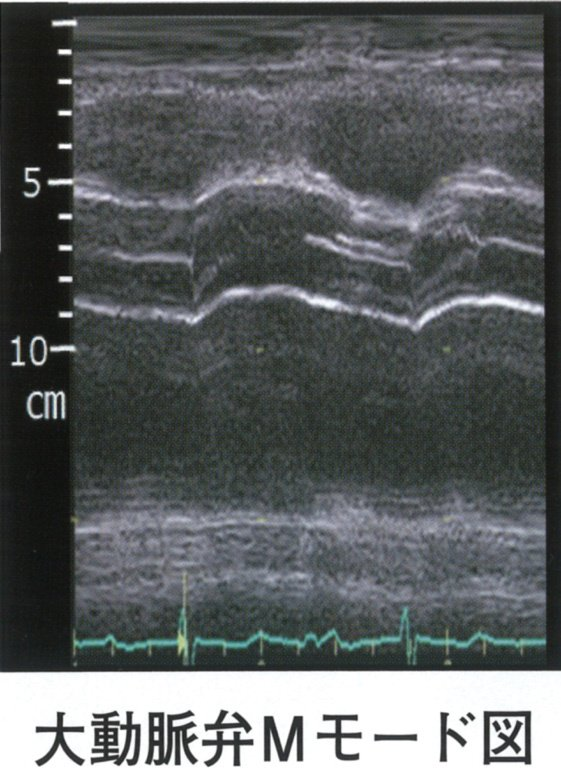
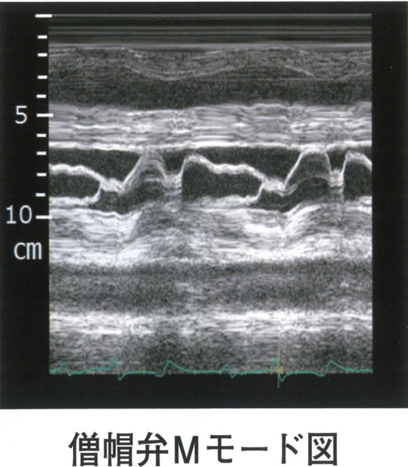
ａ 心室瘤
ｂ 心囊液貯留
ｃ 僧帽弁狭窄
ｄ 非対称性心室中隔肥厚
ｅ 僧帽弁収縮期前方運動
✅
ｄ 非対称性心室中隔肥厚 ＋ ｅ 僧帽弁収縮期前方運動
HCM/HOCMの典型的心エコー所見：非対称性中隔肥厚（ASH）＋SAM（収縮期前方運動）。
🫀 肥大型心筋症の心エコー——ASHとSAMが揃えば「閉塞性」
肥大型心筋症はサルコメア蛋白遺伝子の変異により心筋が異常に肥厚する疾患で、負荷（高血圧・大動脈弁狭窄）で説明できない肥厚であることが条件である。組織学的には心筋細胞の錯綜配列（myocyte disarray）と間質線維化が特徴で、この構造の乱れが拡張障害と致死性心室性不整脈の両方の温床になる。心エコーで押さえるのは次の3点である：
①非対称性中隔肥厚〈ASH〉——傍胸骨長軸像で中隔15mm以上、中隔／後壁比1.3以上。肥厚が中隔に偏るのが「非対称性」の意味である
②収縮期前方運動〈SAM〉——Mモードで収縮期に僧帽弁前尖が中隔側へ寄る。SAMがあれば左室流出路の閉塞があると考えてよい
③左室流出路圧較差——連続波ドプラで測る。安静時30mmHg以上で閉塞性、Valsalvaや運動で誘発される潜在性閉塞もある
加えて、SAMによる後方向きの僧帽弁閉鎖不全と拡張障害による左房拡大を伴うのが典型像である——「逆流ジェットが前方を向く」場合はSAM以外の器質的な僧帽弁病変を疑う、というのが実地の使い分けになる。
□ 選択肢の検討
| 選択肢 | 解説 |
|---|---|
| ａ 心室瘤 | 認められない。心室瘤は貫壁性心筋梗塞のあとに壁が菲薄化して瘤状に膨隆したもので、収縮期に外向きへふくらむ奇異性運動を示す——本例の壁は厚くなっているので、菲薄化を本態とする心室瘤とは正反対である。 |
| ｂ 心囊液貯留 | 認められない。心嚢液貯留は心膜腔に生じるエコー輝度のない空間（echo free space）として、心臓の後壁側や前面に見える。大量なら心臓が液体の中で揺れるswinging heartとなり心タンポナーデを疑うが、本例はそのような所見を欠く。 |
| ｃ 僧帽弁狭窄 | 認められない。僧帽弁狭窄症では弁尖の肥厚と交連部癒合により拡張期に前尖がドーム状に張り出す（doming／hockey stick徴候）、弁口面積の減少、著明な左房拡大がみられる——本例で僧帽弁前尖が動くのは収縮期に前方へ引き寄せられるSAMであって、拡張期の開放制限とはまったく別の現象である。ここを取り違えさせるのが本問の狙いである。 |
| ◯ ｄ 非対称性心室中隔肥厚 | 認められ、これが正解の1つ。非対称性心室中隔肥厚〈ASH〉——心室中隔が後壁に比べて不釣り合いに厚くなる肥大型心筋症の基本所見である。基準は中隔壁厚15mm以上、または中隔／後壁の壁厚比が1.3以上。高血圧性心肥大が全周性に均等に厚くなるのと対照的である。 |
| ◯ ｅ 僧帽弁収縮期前方運動 | 認められ、これが正解の1つ。収縮期前方運動〈SAM〉——狭くなった左室流出路を速い血流が通るとき、Venturi効果と引きずり力で僧帽弁前尖が収縮期に中隔側へ吸い寄せられる現象である。Mモードで収縮期に僧帽弁前尖のエコーが中隔へ向かって前方に膨らむ形としてとらえられ、閉塞性肥大型心筋症を示す所見である。同時に僧帽弁の接合がずれるため後方へ向かう僧帽弁閉鎖不全を伴うのが典型である。 |
📌 左室が厚い——肥大型心筋症の亜型と、それを装う疾患
「左室壁が厚い」だけでは肥大型心筋症と決まらない——負荷による肥大と浸潤・蓄積による肥厚を除外して初めて診断できる。| 鑑別 | 決め手 |
|---|---|
| 肥大型心筋症 | 非対称性の肥厚、SAM、家族歴、心電図の高電位＋広範な陰性T波 |
| 高血圧性心肥大 | 全周性・均等な肥厚、通常13mm程度まで、降圧で退縮しうる |
| 大動脈弁狭窄症 | 弁の石灰化・弁口面積減少・大動脈弁を越える圧較差 |
| 心アミロイドーシス | 全周性肥厚なのに心電図が低電位、granular sparkling、PYPシンチ陽性 |
| Fabry病 | X連鎖、α-ガラクトシダーゼA欠損、被角血管腫・四肢末端痛・角膜混濁 |
| 心Pompe病・ミトコンドリア病 | 骨格筋症状・乳酸高値・難聴などの全身徴候 |
🎯 国試ポイント
①肥大型心筋症の心エコー＝ASH（中隔15mm以上・中隔／後壁比1.3以上）＋SAM②SAMがあれば左室流出路閉塞がある。後方向きの僧帽弁閉鎖不全を伴う
③SAMは収縮期の現象。拡張期の開放制限である僧帽弁狭窄と混同しない
④「壁が厚い」の鑑別＝高血圧性心肥大（全周性）・大動脈弁狭窄・心アミロイドーシス（厚いのに低電位）・Fabry病
⑤日本人に多い心尖部肥大型は巨大陰性T波とスペード型左室
Q.451(110I-50)★臨床📷 画像96%
31 歳の男性。呼吸困難を主訴に来院した。3 か月前から全身倦怠感があったが、最近1 か月で症状が増悪し、昨日から呼吸困難が出現するようになったため受診した。意識は清明。身長175cm、体重62kg。体温36.5℃。脈拍84/ 分、整。血圧124/74mmHg。呼吸数20/ 分。SpO2 96％（room air）。胸部の聴診でⅢ音とⅣ音とを聴取する。両側の胸部でwheezes を聴取する。両側の脛骨前面に圧痕を残す浮腫を認める。血液所見と血液生化学所見とに異常を認めない。心電図は心拍数82/ 分の洞調律で、その他に異常所見を認めない。胸部エックス線写真では心胸郭比60％で肺うっ血を認める。心エコー図（A，B）を示す。
最も考えられる疾患はどれか。
最も考えられる疾患はどれか。


ａ 拡張型心筋症
ｂ 大動脈弁狭窄症
ｃ 心アミロイドーシス
ｄ 閉塞性肥大型心筋症
ｅ ミトコンドリア脳筋症
✅
ａ 拡張型心筋症
若年男性・Ⅲ音・心拡大・肺うっ血・びまん性壁運動低下・冠動脈正常＝DCMの典型像。
❤️ 拡張型心筋症の診断——「拡がって動かない」を確かめ、原因を引き算する
拡張型心筋症は左室の拡大と収縮能低下を本態とし、それを説明できる冠動脈疾患・弁膜症・高血圧・先天性心疾患が無いことを確認して診断する除外診断である。臨床像の組み立ては次のように読む：
Ⅲ音——拡張早期、心房から心室へ血液が一気に流れ込む急速充満期に、拡大して張りを失った心室壁が振動して生じる。40歳以上でⅢ音が聞こえれば容量負荷を伴う心不全を強く示唆する（若年や妊婦では生理的にも聞こえる）——「Ⅲ音＝入りすぎ（容量負荷）」「Ⅳ音＝入りにくい（拡張障害）」の対比で覚える。
心胸郭比60%——正常は50%以下。拡張型心筋症では心拡大が最も分かりやすい所見になる。肺うっ血とwheezes——左房圧上昇が肺静脈へ伝わって間質に水が漏れ、気道粘膜の浮腫が「心臓喘息」とよばれる喘鳴を生む——高齢者では気管支喘息やCOPDの増悪と誤ってβ刺激薬を吸入させてしまうのが典型的な落とし穴で、Ⅲ音・頸静脈怒張・BNP・胸部エックス線が鑑別の鍵になる。
心エコーでは左室拡張末期径の増大とびまん性の壁運動低下・左室駆出率の低下を確認し、冠動脈の評価で虚血性心筋症を除外して診断が固まる。
□ 選択肢の検討
| 選択肢 | 解説 |
|---|---|
| ◯ ａ 拡張型心筋症 | これが正解。31歳という若さで、3か月かけて進行した労作時の全身倦怠感と呼吸困難、Ⅲ音とⅣ音、心胸郭比60%の心拡大、肺うっ血——拡張型心筋症の典型的な提示である。両側のwheezesは気管支喘息ではなく、肺うっ血で気道粘膜が浮腫を起こして生じる「心臓喘息」である。血液・生化学に異常がなく心電図も洞調律のみという「引き算」の情報も、二次性の原因を欠くことを示している。 |
| ｂ 大動脈弁狭窄症 | 否定的。大動脈弁狭窄症であれば胸骨右縁第2肋間を最強点とし頸部へ放散する収縮期駆出性雑音、遅脈・小脈、労作時の失神や狭心痛が前面に出る——本例は心雑音の記載がなく、Ⅲ音が主体である。 |
| ｃ 心アミロイドーシス | 否定的。心アミロイドーシスは左室壁が全周性に厚くなり、収縮能は保たれるのが特徴で、心不全は拡張障害によって起こる——31歳という年齢も、高齢男性に多い野生型トランスサイレチン型としては非典型である。 |
| ｄ 閉塞性肥大型心筋症 | 否定的。閉塞性肥大型心筋症なら胸骨左縁の収縮期駆出性雑音（Valsalvaで増強）とⅣ音が主役で、心エコーではASHとSAMを認めるはずである——心拡大と肺うっ血が前面に出る本例とは像が異なる。 |
| ｅ ミトコンドリア脳筋症 | 否定的。ミトコンドリア脳筋症（MELAS・MERRFなど）は心筋症のほかに低身長・難聴・糖尿病・脳卒中様発作・けいれん・血中および髄液の乳酸／ピルビン酸上昇など全身の症候を伴う——本例は身長175cm、血液所見に異常なく、神経症状の記載もない。 |
📌 「拡張型心筋症です」で終わらせない——治せる原因を必ず探す
拡張型心筋症と同じ像を呈する疾患には原因を取り除けば心機能が戻るものが含まれている——だから「特発性」と結論する前に必ず一巡する。| 原因 | 手がかり／対応 |
|---|---|
| 虚血性心筋症 | 冠危険因子・胸痛の既往。冠動脈造影で除外し、狭窄があれば血行再建 |
| アルコール性 | 大量常習飲酒。断酒で改善しうる |
| 頻脈誘発性心筋症 | 持続する心房細動・頻拍。レートコントロールや除細動で回復 |
| 薬剤性 | アントラサイクリン（総投与量依存）・トラスツズマブ。がん治療歴の聴取 |
| 周産期心筋症 | 妊娠末期〜産後5か月。授乳・次回妊娠の相談が要る |
| 甲状腺機能異常 | 甲状腺機能低下症・亢進症のいずれでも起こる |
| ビタミンB₁欠乏（脚気心） | 偏食・アルコール依存・長期輸液。投与で劇的に改善 |
| 家族性・遺伝性 | TTN・LMNA・MYH7など。LMNA変異は伝導障害と突然死が多く、早期のICDを考える |
| 心筋炎後 | 先行感染歴。急性期を越えて残存した例 |
🎯 国試ポイント
①拡張型心筋症＝左室拡大＋収縮能低下、虚血・弁膜症・高血圧を否定した除外診断②Ⅲ音＝容量負荷（拡張型・僧帽弁閉鎖不全）、Ⅳ音＝拡張障害（肥大型・高血圧・大動脈弁狭窄）
③心不全のwheezes＝心臓喘息。気管支喘息と誤ってβ刺激薬を使わない
④心胸郭比50%超で心拡大。拡張型心筋症では著明になる
⑤治せる原因（アルコール・頻脈・薬剤・脚気心・甲状腺）を必ず一巡してから「特発性」と呼ぶ
Q.452(107I-7)★一般24%
拡張型心筋症と虚血性心筋症の鑑別に最も有用な検査はどれか。
ａ 冠動脈造影
ｂ 心エコー検査
ｃ Holter 心電図
ｄ 安静時心筋血流SPECT
ｅ 血漿脳性ナトリウム利尿ペプチド〈BNP〉測定
✅
ａ 冠動脈造影
冠動脈に有意狭窄があれば虚血性心筋症、なければDCMと診断できる。
🔍 拡張型心筋症と虚血性心筋症——「同じ顔をした別の病気」を分ける
虚血性心筋症とは、冠動脈疾患によって広範な心筋が壊死・冬眠に陥り、左室が拡大して収縮能が低下した状態をいう。一方、拡張型心筋症はそれを説明できる冠動脈病変が無いことが診断の条件である——つまり両者は定義そのものが「冠動脈に狭窄があるか否か」で分かれている。だから鑑別に用いる検査は、冠動脈を直接見るものでなければ本質的に答えにならない。なぜこの区別にこだわるのか——治療がまったく違うからである：虚血性なら血行再建（PCI・冠動脈バイパス術）で冬眠心筋の機能が戻る可能性があり、抗血小板薬・スタチンによる二次予防が必須になる。拡張型ならこれらは適応にならず、神経体液性因子を遮断する薬物療法とデバイス治療が中心となる。
この設問の正答率が低いのは、「心エコーがいちばん役に立つ検査だ」という日常的な感覚に引っぱられるためである——しかし問われているのは「重症度」ではなく「鑑別」である。設問が何を答えさせようとしているかを読み替える練習として価値が高い1問といえる。
近年は冠動脈CT（狭窄がない証明に強い）や心臓MRIの遅延造影（虚血性は心内膜側から貫壁性へ、非虚血性は中層〜心外膜側）も鑑別に使われるが、診断と治療を一度に行える冠動脈造影が標準である。
□ 選択肢の検討
| 選択肢 | 解説 |
|---|---|
| ◯ ａ 冠動脈造影 | これが正解。両者を分けるのは「冠動脈に有意狭窄があるか」ただ一点であり、それを直接見られるのは冠動脈造影だけである——有意狭窄があれば虚血性心筋症、なければ拡張型心筋症と診断が確定する。しかも造影で狭窄が見つかればその場で血行再建（PCI）につなげられる——診断と治療が地続きである点でも「最も有用」である。 |
| ｂ 心エコー検査 | 鑑別には不十分。両疾患とも左室拡大と駆出率低下を示すため、エコーの基本所見だけでは区別できない。「虚血性は節性、拡張型はびまん性の壁運動低下」という原則はあるが、多枝病変の虚血性ではびまん性に見え、拡張型でも局所的な壁運動異常を示すことがある——傍証にはなっても決め手にならない。 |
| ｃ Holter 心電図 | 鑑別には役立たない。Holter心電図が捉えるのは不整脈の頻度と種類である——心室期外収縮・非持続性心室頻拍・心房細動は両疾患ともに高頻度に出現するので、原因疾患の判別には使えない。突然死リスクの評価という別の目的には有用である。 |
| ｄ 安静時心筋血流SPECT | 鑑別には不十分。安静時の心筋血流SPECTでは、陳旧性心筋梗塞による固定した集積欠損は分かるが負荷をかけていないので「虚血」そのものは評価できない——さらに拡張型心筋症でもびまん性の集積低下や斑状の欠損が出るため、欠損があっても虚血性とは言い切れない。 |
| ｅ 血漿脳性ナトリウム利尿ペプチド〈BNP〉測定 | 鑑別には使えない。BNPは心室壁への伸展ストレスに応じて分泌される心不全の重症度・予後のマーカーであり、原因が何であれ心不全なら上昇する——病態の「程度」は測れても「原因」は答えられない。 |
📌 拡張型心筋症 vs 虚血性心筋症——鑑別の材料を並べる
| 拡張型心筋症 | 虚血性心筋症 | |
|---|---|---|
| 冠動脈造影 | 有意狭窄なし | 有意狭窄あり |
| 背景 | 若〜中年、家族歴、飲酒歴 | 高血圧・糖尿病・脂質異常症・喫煙、狭心症や心筋梗塞の既往 |
| 壁運動異常 | びまん性（ただし局所性もありうる） | 責任冠動脈の支配域に一致（ただし多枝ではびまん性に見える） |
| 心電図 | 左脚ブロックが多い | 異常Q波・ST-T変化（梗塞パターン） |
| MRIの遅延造影 | 中層〜心外膜側、または造影されない | 心内膜側から貫壁性へ広がる |
| 治療の分岐 | 薬物4本柱＋ICD／CRT | 血行再建＋抗血小板薬・スタチンを追加 |
🎯 国試ポイント
①拡張型心筋症と虚血性心筋症の鑑別＝冠動脈造影。両者は「冠動脈狭窄の有無」で定義が分かれている②心エコー・Holter・BNPは両疾患ともに異常になるので鑑別できない。「重症度の評価」と「鑑別」を混同しない
③安静時心筋血流SPECTは負荷がないので虚血を評価できない
④鑑別が要るのは治療が変わるから——虚血性なら血行再建・抗血小板薬・スタチンが加わる
⑤心臓MRIの遅延造影は虚血性＝心内膜側から／非虚血性＝中層〜心外膜側
Q.453(106D-59)★臨床📷 画像3択91%
40 歳の男性。労作時の呼吸困難と動悸とを主訴に来院した。2 か月前から急いで歩いたときに呼吸困難と動悸とを自覚するようになり、次第に増悪してきたため受診した。3 年前から糖尿病のために食事療法と運動療法とを行っている。弟が35 歳で突然死したという。意識は清明。身長168cm、体重52kg。脈拍72/ 分、不整。血圧102/76mmHg。呼吸数20/ 分。心尖拍動を鎖骨中線から2cm 外側に触知する。Ⅲ音を聴取する。呼吸音に異常を認めない。心電図で心房細動を認める。心エコー図（A，B，C）を示す。
治療薬として適切なのはどれか。3 つ選べ。
治療薬として適切なのはどれか。3 つ選べ。
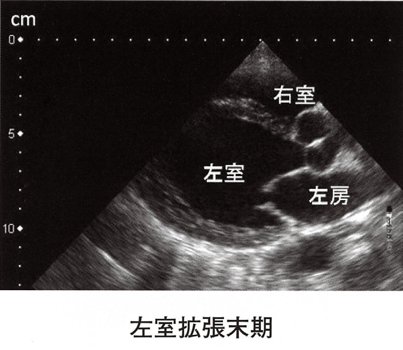
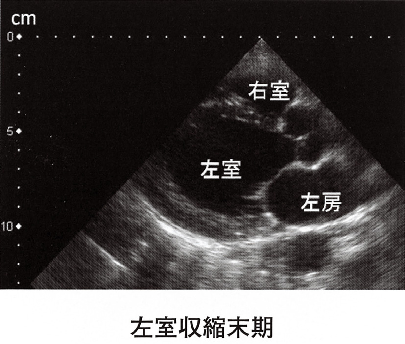
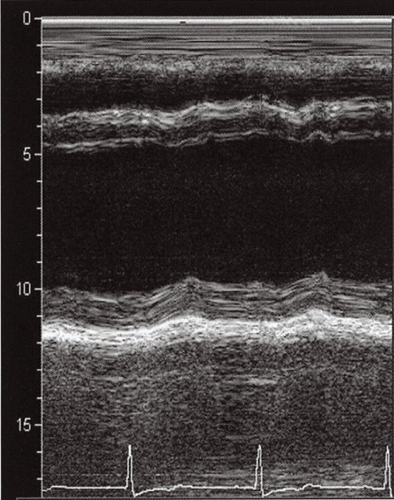
ａ α遮断薬
ｂ β遮断薬
ｃ 抗コリン薬
ｄ ワルファリン
ｅ アンジオテンシン変換酵素阻害薬
✅
ｂ β遮断薬 ＋ ｄ ワルファリン ＋ ｅ アンジオテンシン変換酵素阻害薬
DCM：心拡大・EF低下・Ⅲ音gallop（容量負荷による）が特徴。
👨👦 家族性拡張型心筋症——「弟が35歳で突然死」が意味すること
本例を読み解く鍵は3つある：①心尖拍動が鎖骨中線から2cm外側＝左室拡大の身体所見、②Ⅲ音＝容量負荷を伴う心不全、③心房細動＝拡大した左房に生じた不整脈。40歳で労作時の呼吸困難と動悸が2か月かけて進行し、弟が35歳で突然死している——家族性の拡張型心筋症を強く疑う組み立てである。拡張型心筋症のおよそ2〜3割は家族性で、TTN（タイチン）の変異が最も多く、LMNA（ラミンA/C）・MYH7・SCN5Aなどが続く——とくにLMNA変異型は房室ブロックや心房細動が心不全に先行し、駆出率がそれほど落ちていない段階でも致死性心室性不整脈で突然死する。「若年の伝導障害＋心房細動＋突然死の家族歴」は早期のICD植込みを検討するべき組合せとして知られている。
治療は3方向から組み立てる：①心不全そのもの——ACE阻害薬（またはARB／ARNI）＋β遮断薬＋MRA＋SGLT2阻害薬、②心房細動——β遮断薬でレートを整え、抗凝固薬で塞栓症を予防、③突然死——至適薬物療法後も左室駆出率35%以下ならICDを検討。本問の3つの正解（β遮断薬・抗凝固薬・ACE阻害薬）はちょうど①と②を埋める組合せになっている。
□ 選択肢の検討
| 選択肢 | 解説 |
|---|---|
| ａ α遮断薬 | 適切でない。α遮断薬は末梢血管抵抗を下げて降圧するが、収縮不全の心不全で予後を改善する根拠はない——大規模試験ではむしろ心不全の発症・増悪が多かったと報告されており、心不全患者の降圧薬としては優先されない。 |
| ◯ ｂ β遮断薬 | 適切であり、正解の1つ。β遮断薬は交感神経の過剰刺激から心筋を守り、リモデリングを抑えて生命予後を改善する——拡張型心筋症を含むHFrEF治療の柱である（カルベジロール・ビソプロロール）。本例は心房細動を合併しているので、心拍数調節（レートコントロール）としての意義も大きい。ただし非代償期に高用量から始めてはならず、うっ血が取れた安定期に少量から漸増するのが鉄則である。 |
| ｃ 抗コリン薬 | 適切でない。抗コリン薬に心不全や心房細動の治療適応はない——むしろ迷走神経を遮断して心拍数を上げるため、頻脈性心房細動を悪化させる方向にはたらく。 |
| ◯ ｄ ワルファリン | 適切であり、正解の1つ。心房細動では左房（とくに左心耳）で血液がよどんで血栓ができ、それが飛べば心原性脳塞栓症という重篤な梗塞を起こす——拡張型心筋症では左室内にも血栓ができうるため、抗凝固の必要性はさらに高い。抗血小板薬では予防できず、抗凝固薬でなければならない点が要点である。 |
| ◯ ｅ アンジオテンシン変換酵素阻害薬 | 適切であり、正解の1つ。ACE阻害薬はRAA系を遮断して後負荷を下げ、心筋の線維化とリモデリングを抑える——HFrEFで最初に生命予後の改善が証明された薬であり、無症候の段階（Stage B）から適応がある。空咳が出ればARBへ変更する。両側腎動脈狭窄・妊娠・高カリウム血症・血管性浮腫の既往は禁忌である。 |
📌 心房細動を合併した心不全——抗凝固の適応をどう決めるか
心房細動の塞栓リスクはCHADS₂スコアで見積もる：Congestive heart failure（心不全）1点・Hypertension（高血圧）1点・Age≥75歳 1点・Diabetes（糖尿病）1点・Stroke/TIAの既往 2点——本例は心不全＋糖尿病で2点あり、抗凝固の適応は明確である。| ワルファリン | DOAC（直接経口抗凝固薬） | |
|---|---|---|
| 作用 | ビタミンK依存性凝固因子（Ⅱ・Ⅶ・Ⅸ・Ⅹ）の産生阻害 | トロンビン（ダビガトラン）またはⅩa因子の直接阻害 |
| モニタリング | PT-INRで調節（目標1.6〜2.6／70歳未満は2.0〜3.0） | 不要 |
| 食事・薬物相互作用 | 納豆・青汁・クロレラは禁止。相互作用が多い | 少ない |
| 必ずワルファリンを選ぶ場合 | 機械弁置換後と中等度以上の僧帽弁狭窄症（＝弁膜症性心房細動）。これらにDOACは使えない | |
| 腎機能 | 高度腎障害でも使用可 | 腎排泄のため高度腎障害では減量・禁忌 |
🎯 国試ポイント
①HFrEFの予後改善薬＝ACE阻害薬／ARB（ARNI）・β遮断薬・MRA・SGLT2阻害薬②心不全＋心房細動には抗凝固薬。抗血小板薬では心原性塞栓を防げない
③β遮断薬はうっ血が取れた安定期に少量から漸増。非代償期の導入は禁物
④拡張型心筋症の2〜3割は家族性。LMNA変異は伝導障害と突然死が多く、早期のICDを考える
⑤機械弁・中等度以上の僧帽弁狭窄症にはDOAC不可——ワルファリン一択
Q.454(117B-13)必修一般96%
病歴聴取で、家族内に同じ疾患の患者が存在することが、診断に最も有用な疾患はどれか。
ａ 心房細動
ｂ 肥大型心筋症
ｃ 冠攣縮性狭心症
ｄ 大動脈弁狭窄症
ｅ 心サルコイドーシス
✅
ｂ 肥大型心筋症
HCMはサルコメア蛋白遺伝子の常染色体優性遺伝が多く、家族歴が診断に有用。
🧬 家族歴が「診断根拠」になる心疾患——遺伝形式が濃いものだけ
病歴聴取における家族歴の重みは疾患によってまったく違う——単一遺伝子の変異が顕性遺伝する疾患では家族歴が診断そのものを支えるが、多因子疾患では「リスクがやや高い」以上の意味を持たない。肥大型心筋症は前者の代表である：サルコメア蛋白（MYBPC3・MYH7ほか）の変異が常染色体顕性遺伝し、一等親は50%の確率で変異を受け継ぐ——診断基準にも「家族歴」が組み込まれており、一等親には心電図と心エコーによる定期的なスクリーニングが推奨される。注意すべきは浸透率が不完全で、発症年齢に幅があることで、思春期以降に肥厚が顕在化する例があるため「一度正常なら終わり」ではなく繰り返し評価する必要がある。
肥大型心筋症の家族歴にはもう一段の意味がある——近親者の突然死（とくに50歳未満）は、その患者自身の突然死リスクを高める独立した因子としてICDの一次予防適応の判断材料になる。ほかのリスク因子は説明のつかない失神・非持続性心室頻拍・最大壁厚30mm以上・運動中の血圧反応不良・左房径拡大である——つまり家族歴を聴くことが、診断だけでなく治療方針まで決めてしまうのがこの疾患の特徴である。
□ 選択肢の検討
| 選択肢 | 解説 |
|---|---|
| ａ 心房細動 | 家族歴の診断的価値は低い。心房細動にも遺伝的素因は報告されているが、実際の発症は加齢・高血圧・弁膜症・心不全・甲状腺機能亢進症・飲酒・睡眠時無呼吸といった後天的要因の集積で決まる——診断は心電図で不規則なRR間隔とP波の消失を捉えることに尽きる。 |
| ◯ ｂ 肥大型心筋症 | これが正解。肥大型心筋症はサルコメア（筋節）を構成する蛋白の遺伝子変異により生じ、およそ半数で原因遺伝子が同定される——最多はMYBPC3（ミオシン結合蛋白C）とMYH7（β-ミオシン重鎖）で、遺伝形式は常染色体顕性（優性）遺伝である。したがって一等親の約半数が変異を受け継ぐ可能性があり、家族歴そのものが診断根拠になり、家族のスクリーニングが推奨される——とくに突然死の家族歴は突然死リスク評価の因子としてICDの適応判断に直接組み込まれている。 |
| ｃ 冠攣縮性狭心症 | 家族歴の診断的価値は低い。冠攣縮性狭心症は日本人・東アジア人に多いことが知られ、アルデヒド脱水素酵素2〈ALDH2〉多型などの関与が指摘されているが、喫煙・飲酒・自律神経活動・寒冷など環境要因の寄与が大きい——診断は発作時心電図のST上昇やアセチルコリン・エルゴノビンによる冠攣縮誘発試験で行う。 |
| ｄ 大動脈弁狭窄症 | 家族歴の診断的価値は低い。大動脈弁狭窄症の最多の原因は加齢に伴う弁の石灰化で、次いで先天性二尖弁、リウマチ性である——二尖弁には家族集積がみられることもあるが、診断はあくまで心エコーで弁の形態と圧較差を見ることによる。 |
| ｅ 心サルコイドーシス | 家族歴の診断的価値は低い。サルコイドーシスは原因不明の非乾酪性類上皮細胞肉芽腫が多臓器に生じる疾患で、遺伝性疾患ではない——心病変の診断は房室ブロックや心室頻拍などの不整脈、心エコーでの心室中隔基部の菲薄化、18F-FDG PETの集積、心臓MRIの遅延造影、生検による肉芽腫の証明で行う。 |
📌 家族歴を必ず聴く循環器疾患
| 疾患 | 遺伝形式・原因 | 家族歴の使いみち |
|---|---|---|
| 肥大型心筋症 | 常染色体顕性（MYBPC3・MYH7） | 診断根拠＋突然死リスク評価＋家族スクリーニング |
| 拡張型心筋症 | 2〜3割が家族性（TTN・LMNA） | LMNA変異では早期ICDを検討 |
| 不整脈原性右室心筋症〈ARVC〉 | デスモソーム蛋白の変異 | 若年アスリートの突然死。運動制限の指導 |
| QT延長症候群 | KCNQ1・KCNH2・SCN5A | 失神・突然死の家族歴＋難聴（Jervell-Lange-Nielsen症候群） |
| Brugada症候群 | SCN5A（東アジアの中年男性に多い） | 夜間の突然死・ぽっくり病の家族歴 |
| カテコラミン誘発多形性心室頻拍 | RYR2 | 運動・情動での失神の家族歴 |
| Marfan症候群 | FBN1、常染色体顕性 | 大動脈解離・突然死の家族歴、高身長・水晶体亜脱臼 |
| 家族性高コレステロール血症 | LDL受容体、常染色体顕性 | 若年の心筋梗塞の家族歴、アキレス腱肥厚・黄色腫 |
🎯 国試ポイント
①肥大型心筋症＝サルコメア蛋白遺伝子の常染色体顕性遺伝。家族歴が診断に直結する②一等親には心電図と心エコーのスクリーニング。浸透率が不完全なので繰り返し評価する
③突然死の家族歴はICD適応の判断因子。ほかに失神・非持続性心室頻拍・最大壁厚30mm以上・運動時血圧反応不良
④心房細動・冠攣縮性狭心症・大動脈弁狭窄症・心サルコイドーシスは家族歴で診断しない
⑤若年突然死の家族歴で想起するのはHCM・ARVC・QT延長症候群・Brugada症候群・Marfan症候群
Q.455(114D-26)臨床📷 画像93%
48 歳の女性。食欲低下と倦怠感を主訴に来院した。5 日前から感冒様症状と食欲低下があり、市販薬を内服して寝込んでいた。昨日から倦怠感が強くなり、さらに今朝になって呼吸困難やふらつきも生じたため受診した。既往歴、生活歴および家族歴に特記すべきことはない。身長160cm、体重50kg。脈拍116/ 分、整。血圧86/50mmHg。呼吸数24/ 分。SpO2 93％（room air）。心音は奔馬調律。両下胸部にcrackles を聴取する。血液所見：赤血球495 万、Hb 14.6g/dL、白血球11,000、血小板17 万。血液生化学所見：AST 2,324U/L、ALT 2,532U/L、LD 3,292U/L（基準120 ～245）、CK 6,064U/L（基準30 ～140）、尿素窒素47mg/dL、クレアチニン0.9mg/dL、総ビリルビン1.4mg/dL。CRP 2.3mg/dL。来院時の心電図（A）を示す。心エコー検査で左室拡張末期径50mm、左室駆出率は20％。その後、完全房室ブロックが出現し、一時的ペースメーカー留置とともに冠動脈造影を行った。冠動脈造影像（B）を示す。
最も疑われる疾患はどれか。
最も疑われる疾患はどれか。
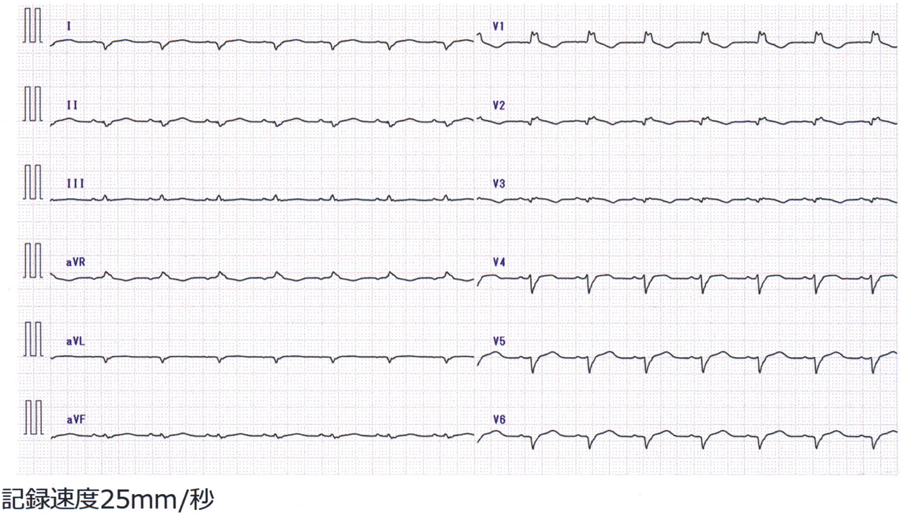
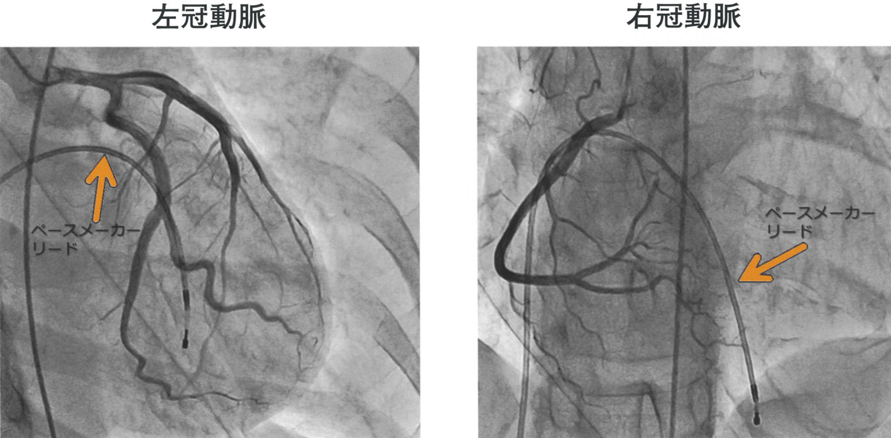
ａ 急性心筋炎
ｂ 拡張型心筋症
ｃ 急性心筋梗塞
ｄ たこつぼ心筋症
ｅ 急性肺動脈塞栓症
✅
ａ 急性心筋炎
感冒様症状後の急性重症心不全・高度AVブロック・CK著増・EF極度低下・冠動脈正常＝劇症型急性心筋炎。
🚨 劇症型心筋炎——「左室は拡大していないのに動かない」が急性の証拠
本例で最も情報量の多い所見は「左室拡張末期径50mm、左室駆出率20%」という組合せである——正常上限にとどまる大きさなのに収縮能だけが壊滅している。これは心臓が拡大する時間もないまま急性に機能を失ったことを意味し、年単位で拡大していく拡張型心筋症を一撃で否定する。「左室径」と「駆出率」を切り離して読む——これが心筋症の設問を解くうえで最も実践的な技術である。劇症型心筋炎の恐ろしさは2つの経路で同時に死に近づく点にある：①ポンプ失調——広範な心筋の壊死と浮腫で心拍出量が保てず心原性ショックに陥る、②電気的破綻——炎症が刺激伝導系に及んで完全房室ブロックや心室頻拍・心室細動を起こす。本例はまさに②が出現したところで、一時的ペースメーカ留置という対応が取られている。
全身への波及も読み取れる——AST 2,324U/L・ALT 2,532U/L・LD 3,292U/Lはショック肝（低酸素性肝炎）で、肝小葉中心部が低灌流で壊死したときにトランスアミナーゼが数千まで跳ね上がる。同様に尿素窒素47mg/dLは腎前性腎不全を示す。「心臓が止まりかけると全身の臓器が同時に悲鳴を上げる」ことの現れである。
治療は時間を稼ぐことに尽きる——一時的ペースメーカ・IABP・VA-ECMO〈PCPS〉で循環と調律を代行し、炎症が沈静化して心筋が回復するのを待つ。急性期を越えれば心機能がほぼ正常まで戻る例が多いのがこの疾患の救いである。
□ 選択肢の検討
| 選択肢 | 解説 |
|---|---|
| ◯ ａ 急性心筋炎 | これが正解。5日前の感冒様症状に続く急速な心不全、CK 6,064U/L・LD 3,292U/Lという著明な心筋逸脱、左室駆出率20%、そして完全房室ブロックの出現——劇症型急性心筋炎の典型的な展開である。決め手は左室拡張末期径が50mmと拡大していないことで、「拡がる時間がないまま収縮能だけが落ちた」＝急性発症を意味する。AST 2,324・ALT 2,532U/Lという肝逸脱酵素の著増はショックによる肝低灌流（ショック肝）で、循環破綻の重さを裏づける。 |
| ｂ 拡張型心筋症 | 否定的。拡張型心筋症は年単位で進行する疾患で、5日でここまで至る経過はとらない。なにより左室拡張末期径50mmは拡大していない——拡張型心筋症であれば60mmを超える拡大があるはずで、この一点で否定できる。CK 6,064U/Lという心筋壊死の程度も説明できない。 |
| ｃ 急性心筋梗塞 | 否定される。冠動脈造影が行われ、その画像が提示されている——すなわち有意狭窄がないことを確認する流れである。加えてAST・ALTがともに2,000U/Lを超えるのは心筋由来では説明できず、ショックによる肝障害を考えるべき数値である。下壁梗塞でも房室ブロックは起こるが、その場合の壁運動異常は右冠動脈支配域に限局する。 |
| ｄ たこつぼ心筋症 | 否定的。たこつぼ心筋症は強い身体的・精神的ストレスを契機に発症し、心尖部の風船状の無収縮と心基部の過収縮という特徴的な壁運動異常を示す——最大の鑑別点は「壁運動異常の広さに比べて心筋逸脱酵素の上昇が軽い」ことで、CK 6,064U/L・LD 3,292U/Lはこの疾患としては高すぎる。完全房室ブロックの出現も非典型である。 |
| ｅ 急性肺動脈塞栓症 | 否定的。急性肺血栓塞栓症は右心系に負荷がかかる疾患で、右室拡大・三尖弁閉鎖不全・心電図のSⅠQⅢTⅢやV₁〜V₃の陰性T波を示す——左室駆出率20%という左室の収縮不全は説明できない。また完全房室ブロックやCK著増も来さない。 |
📌 心筋炎で房室ブロックが出たら——「特殊型」を疑う分岐点
心筋炎に高度房室ブロックや持続性心室頻拍が加わったときは、ウイルス性以外の病型を考える必要がある——これらは免疫抑制療法が効く＝治療が変わるからである。| 病型 | 特徴 | 治療 |
|---|---|---|
| ウイルス性心筋炎 | 先行感冒。リンパ球浸潤 | 支持療法（VA-ECMO・IABP・一時ペーシング） |
| 巨細胞性心筋炎 | 若〜中年、難治性心室頻拍・完全房室ブロック、生検で多核巨細胞 | 免疫抑制療法（ステロイド＋シクロスポリン等）。無治療の予後はきわめて不良 |
| 好酸球性心筋炎 | 末梢血好酸球増多、薬剤・寄生虫・好酸球性多発血管炎性肉芽腫症 | 被疑薬の中止＋ステロイド |
| 心サルコイドーシス | 若年〜中年女性の完全房室ブロック、心室中隔基部の菲薄化、FDG-PET集積 | ステロイド＋ペースメーカ／ICD |
| 免疫チェックポイント阻害薬関連 | 投与開始から数週以内、重症筋無力症・筋炎を合併しうる | 投与中止＋大量ステロイド |
🎯 国試ポイント
①左室径は正常なのに駆出率が著明低下＝急性発症。拡張型心筋症なら左室が拡大している②劇症型心筋炎＝先行感冒＋心筋逸脱酵素著増＋高度房室ブロック・心室頻拍＋冠動脈正常
③治療は一時的ペースメーカ・IABP・VA-ECMO〈PCPS〉で時間を稼ぐ。急性期を越えれば回復しうる
④AST・ALTが数千＝ショック肝。心原性ショックの重症度を示す
⑤難治性の房室ブロック・心室頻拍を伴う心筋炎では巨細胞性心筋炎・心サルコイドーシス・好酸球性心筋炎を疑い、免疫抑制療法を検討する
Q.456(113A-39)臨床📷 画像94%
17 歳の女子。失神を主訴に受診した。2 週間前のジョギング中に気分不快となり、その場にしゃがみこんだ。その後、意識が遠くなり、1 分程度意識を消失した。1 週間前にもソフトボールの試合中に、2 分程度意識を消失した。その翌日、心配になり自宅近くの診療所を受診し、心電図異常を指摘され紹介受診となった。意識は清明。身長147cm、体重48kg。体温36.0℃。脈拍76/ 分、整。血圧126/64mmHg。呼吸数18/ 分。眼瞼結膜と眼球結膜とに異常を認めない。頸動脈に血管雑音を聴取しない。頸静脈の怒張を認めない。心音にⅣ音を聴取する。胸骨右縁第3 肋間にⅢ/Ⅵの収縮期駆出性雑音を聴取する。呼吸音に異常を認めない。腹部は平坦、軟で、圧痛を認めない。下腿に浮腫を認めない。両足背動脈を触知する。神経診察に異常を認めない。血液所見：赤血球456 万、Hb 14.5g/dL、白血球8,900、血小板17 万。心エコー図（A ～C）を示す。
患者への説明として適切でないのはどれか。
患者への説明として適切でないのはどれか。
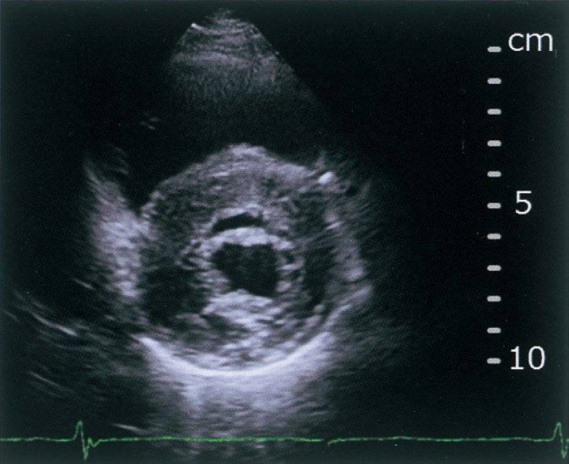
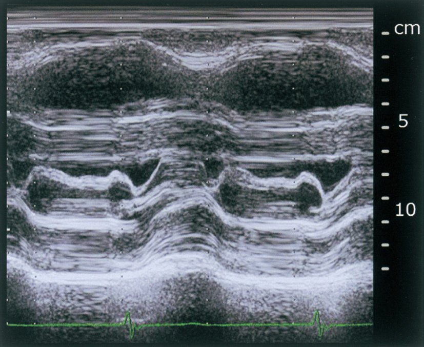
ａ 「心臓の壁が厚くなっています」
ｂ 「激しい運動は避けてください」
ｃ 「不整脈の有無について検査が必要です」
ｄ 「心臓の周りに多量の水が溜まっています」
ｅ 「血縁者で同じ疾患を発症する場合があります」
✅
ｄ 「心臓の周りに多量の水が溜まっています」
HCMでは心嚢液貯留は見られない。エコー所見はASH・SAMであり、心タンポナーデとは異なる。
⚠️ 若年者の失神——「良性」と「命に関わる」を分ける
失神を診たら、まず心原性かそうでないかを分ける——大多数を占める血管迷走神経性失神は良性だが、心原性失神は突然死の前触れだからである。| 血管迷走神経性（良性） | 心原性（危険） | |
|---|---|---|
| 状況 | 長時間の立位、疼痛、恐怖、採血 | 労作中・運動中、臥位でも起こる |
| 前駆症状 | 悪心・冷汗・眼前暗黒感（数十秒かけて） | 前駆なく突然、または動悸・胸痛が先行 |
| 家族歴 | なし | 若年の突然死 |
| 心疾患 | なし | 心雑音・心電図異常あり |
肥大型心筋症で失神が起こる機序は複数ある：①心室頻拍・心室細動（最も危険）②運動による左室流出路閉塞の増悪（運動で収縮性が上がり前負荷が減るため）③拡張障害による一回拍出量の頭打ち④左室内圧上昇による圧受容器反射の異常（運動時に血圧が下がる）——いずれも労作時に起こるという点で共通しており、だからこそ運動制限が治療の一部になる。
□ 選択肢の検討
| 選択肢 | 解説 |
|---|---|
| ａ 「心臓の壁が厚くなっています」 | 適切な説明である。肥大型心筋症の本態は負荷では説明できない心室壁の肥厚で、これを平易に伝えたものが「心臓の壁が厚くなっている」である。Ⅳ音が聞こえるのは厚く硬くなった心室に心房が血液を押し込むためで、身体所見とも整合する。 |
| ｂ 「激しい運動は避けてください」 | 適切な説明である。肥大型心筋症は若年者・アスリートの突然死の最多の原因であり、本例はすでに運動中の失神を2回起こしている——心停止に至る一歩手前と考えるべき状況である。競技スポーツや高強度の運動は原則として制限し、学校生活管理指導表を用いた指導につなげる。 |
| ｃ 「不整脈の有無について検査が必要です」 | 適切な説明である。失神の原因が心室頻拍・心室細動である可能性を評価しなければならない——Holter心電図で非持続性心室頻拍の有無を調べることは突然死リスクの評価に直結し、植込型除細動器〈ICD〉の適応判断の材料になる。 |
| ◯ ｄ 「心臓の周りに多量の水が溜まっています」 | 適切でなく、これが正解。心嚢液貯留は心膜腔に液体がたまる状態で、心膜炎・悪性腫瘍・尿毒症・甲状腺機能低下症・膠原病などで生じる——肥大型心筋症は心筋そのものの疾患であり、心嚢液貯留は本態でも典型所見でもない。「多量の心嚢液」があれば心タンポナーデ（Beck三徴・奇脈・心音減弱）というまったく別の緊急病態を考えることになる。 |
| ｅ 「血縁者で同じ疾患を発症する場合があります」 | 適切な説明である。肥大型心筋症はサルコメア蛋白遺伝子の常染色体顕性遺伝で、一等親は50%の確率で変異を受け継ぐ——家族へのスクリーニング（心電図・心エコー）を勧める必要があるので、この説明は必須である。 |
📌 肥大型心筋症の患者・家族への説明——押さえるべき5項目
| 項目 | 説明の内容 |
|---|---|
| ①病気の本態 | 心臓の筋肉が厚くなり、硬くて広がりにくくなる病気。出口が狭くなる型（閉塞性）がある |
| ②運動制限 | 競技スポーツ・高強度の運動は避ける。若年突然死の最多原因であり、学校生活管理指導表で管理する |
| ③不整脈の精査 | Holter心電図で非持続性心室頻拍を探す。突然死リスクが高ければICD |
| ④遺伝と家族 | 常染色体顕性遺伝。一等親に心電図・心エコーのスクリーニング。発症年齢に幅があるので繰り返し評価する |
| ⑤避けるべき薬 | 閉塞性では硝酸薬・強心薬・過剰な利尿薬・脱水を避ける |
なお本邦では学校心臓検診（小1・中1・高1で心電図）が制度として行われており、無症状の肥大型心筋症・QT延長症候群・WPW症候群を拾い上げる仕組みになっている——本例も「心電図異常を指摘され紹介受診」という経路をたどっている。
🎯 国試ポイント
①労作時の失神＋突然死の家族歴＝心原性を疑う。血管迷走神経性失神との鑑別が最初の分岐②肥大型心筋症は若年者・アスリートの突然死の最多原因。競技スポーツは制限する
③心嚢液貯留は肥大型心筋症の所見ではない——心膜炎・心タンポナーデの所見
④突然死リスク因子＝失神・非持続性心室頻拍・最大壁厚30mm以上・突然死の家族歴・運動時血圧反応不良→ICDを検討
⑤常染色体顕性遺伝なので一等親のスクリーニングを勧める
Q.457(112A-28)臨床📷 画像87%
25 歳の女性。呼吸困難を主訴に来院した。5 日前から38℃前後の発熱、咽頭痛、上腹部痛および食欲低下があり、3 日前に自宅近くの診療所で感冒に伴う胃腸炎と診断され総合感冒薬と整腸薬とを処方されたが症状は改善しなかった。昨夜から前胸部不快感が出現し、本日、呼吸困難が出現したため受診した。既往歴に特記すべきことはない。妊娠歴はない。最終月経は2 週間前。意識は清明だが表情は苦悶様。体温36.8℃。脈拍92/ 分、整。血圧72/48mmHg。呼吸数36/ 分。SpO2 82％（room air）。四肢末梢の冷感を認める。口唇にチアノーゼを認める。頸静脈の怒張を認める。心音にⅢ音とⅣ音とを聴取する。呼吸音は両側でwheezes とcoarse crackles とを聴取する。腹部は平坦、軟で、肝・脾を触知しない。血液所見：赤血球482 万、Hb 14.1g/dL、Ht 41％、白血球14,200、血小板17 万。血液生化学所見：総蛋白6.4g/dL、アルブミン3.8g/dL、総ビリルビン1.1mg/dL、AST 519U/L、ALT 366U/L、LD 983U/L（基準176 ～353）、CK 222U/L（基準30 ～140）、尿素窒素23mg/dL、クレアチニン1.0mg/dL、血糖199mg/dL､Na 128mEq/L、K 4.4mEq/L、Cl 99mEq/L。CRP 2.1mg/dL。心筋トロポニンT 陽性。動脈血ガス分析（room air）：pH 7.32、PaCO2 20Torr、PaO2 55Torr、HCO3 － 10mEq/L。仰臥位のポータブル胸部エックス線写真（A）、心電図（B）及び心エコー図（C）を示す。
最も可能性の高い疾患はどれか。
最も可能性の高い疾患はどれか。
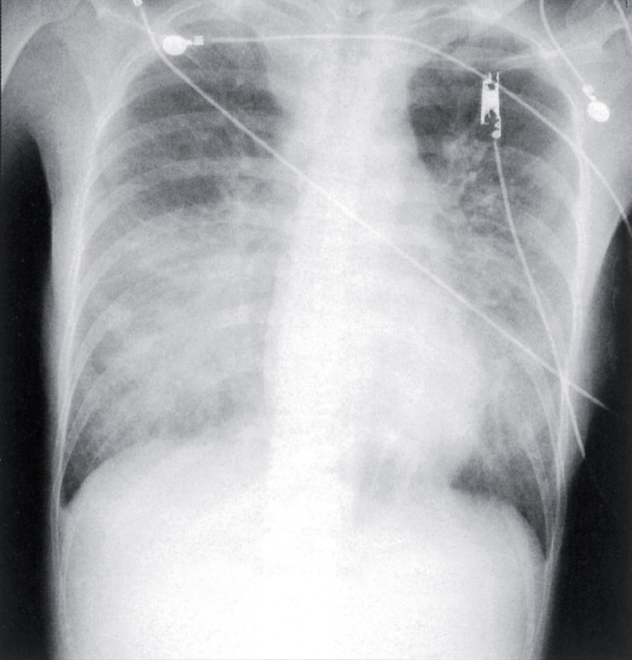
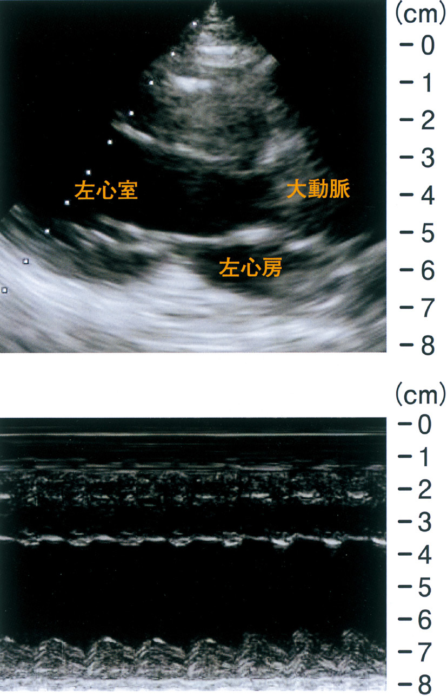
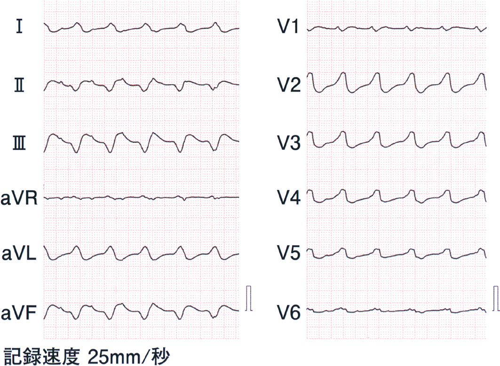
ａ 肥大型心筋症
ｂ 急性心筋梗塞
ｃ Brugada 症候群
ｄ 感染性心内膜炎
ｅ ウイルス性心筋炎
✅
ｅ ウイルス性心筋炎
若年女性・感冒後1週・急性心不全・トロポニン↑・冠動脈正常＝ウイルス性心筋炎の典型。
🦠 ウイルス性心筋炎——「感冒だと思われていた」患者がショックで運ばれる
急性心筋炎の多くはウイルス感染を契機とする——古典的にはコクサッキーBウイルスを筆頭とするエンテロウイルス、近年はパルボウイルスB19・ヒトヘルペスウイルス6の関与が報告されている。前駆症状は発熱・咽頭痛・下痢・嘔吐・上腹部痛などありふれた「かぜ」や「胃腸炎」で、そこから1〜2週の間を置いて心症状が現れる——この時間差のせいで受診時には感冒症状が軽快しており、心疾患として認識されない。本例が「感冒に伴う胃腸炎」と診断されて総合感冒薬と整腸薬を処方されているのは、典型的かつ避けがたい経過である。本例の検査値はショックの重さを語っている：
・SpO2 82%・呼吸数36/分・両肺のcoarse crackles＝肺水腫（左心不全）
・pH 7.32／PaCO₂ 20Torr／HCO₃⁻ 10mEq/L＝代謝性アシドーシスと呼吸性代償。アニオンギャップは Na 128 −（Cl 99 ＋ HCO₃⁻ 10）＝19 と開大しており、組織低灌流による乳酸アシドーシスを意味する
・AST 519・ALT 366・LD 983U/L＝ショック肝（低酸素性肝炎）
・Na 128mEq/L＝心不全でのバソプレシン分泌亢進による希釈性低Na血症。心不全の重症度・予後と相関する
興味深いのはCK 222U/L（基準30〜140）と軽度上昇にとどまるのにトロポニンTは陽性である点で、トロポニンの心筋特異性と感度の高さを示している。
□ 選択肢の検討
| 選択肢 | 解説 |
|---|---|
| ａ 肥大型心筋症 | 否定的。肥大型心筋症は慢性の壁肥厚による疾患で、数日で心原性ショックに至る経過はとらない——身体所見もⅣ音と収縮期駆出性雑音が主役であって、本例のような先行する発熱・咽頭痛とトロポニン陽性は説明できない。 |
| ｂ 急性心筋梗塞 | 否定的。25歳女性で冠危険因子の記載がなく、5日前からの発熱・咽頭痛・上腹部痛という先行感染が経過の起点になっている。若年女性の心筋梗塞では特発性冠動脈解離〈SCAD〉や冠攣縮が原因になりうるが、いずれも本例の発熱・炎症反応・多臓器の逸脱酵素上昇とは像が合わない。 |
| ｃ Brugada 症候群 | 否定される。Brugada症候群はSCN5Aなどのイオンチャネル異常による純粋な電気的疾患で、器質的心疾患を伴わない——典型は東アジアの中年男性が夜間・睡眠中に心室細動を起こすもので、心不全・肝逸脱酵素上昇・トロポニン陽性は来さない。 |
| ｄ 感染性心内膜炎 | 否定的。感染性心内膜炎なら持続する発熱・新規または増悪する心雑音・塞栓症状（Osler結節、Janeway斑、点状出血、Roth斑）・血液培養陽性が診断の柱になる——本例は心雑音の記載がなくⅢ音とⅣ音のみで、発熱も受診時には36.8℃と解熱している。 |
| ◯ ｅ ウイルス性心筋炎 | これが正解。5日前からの発熱・咽頭痛・上腹部痛・食欲低下という先行感染に続き、血圧72/48mmHg・四肢冷感・チアノーゼ・頸静脈怒張・Ⅲ音とⅣ音・両肺のcoarse crackles——急性発症の心原性ショックである。心筋トロポニンT陽性が心筋傷害を示し、AST 519・ALT 366・LD 983U/Lはショックによる肝低灌流を反映する。「上気道炎と胃腸炎で診療所にかかっていた若年女性が数日で心原性ショックになる」——ウイルス性心筋炎の教科書的な提示である。 |
📌 心筋傷害マーカーの使い分け——なぜトロポニンが主役なのか
| マーカー | 上昇（開始／ピーク／持続） | 特徴 |
|---|---|---|
| 心筋トロポニンT・I | 3〜4時間／12〜24時間／1〜2週間 | 心筋特異性が最も高く感度も高い。現在の第一選択。遅れて受診した症例でも捉えられる |
| CK-MB | 4〜8時間／12〜24時間／2〜3日 | 心筋特異性は高いが感度はトロポニンに劣る。再梗塞の判定に有用（早く正常化するため） |
| 総CK | 4〜8時間／24時間／3〜4日 | 骨格筋にも豊富で特異性が低い。筋炎・横紋筋融解・激しい運動・筋注でも上がる |
| ミオグロビン | 1〜2時間／6〜9時間／1日 | 最も早いが特異性が低い（腎不全でも上昇） |
| H-FABP | 1〜2時間／6時間／1日 | 早期診断用の迅速検査 |
| BNP・NT-proBNP | — | 心筋傷害ではなく心室壁の伸展ストレスを反映。心不全の診断・重症度・予後に用いる |
劇症型に至った場合の治療はVA-ECMO〈PCPS〉・IABP・一時的ペースメーカで急性期を越えることに尽きる——ウイルス性に対する抗ウイルス薬や副腎皮質ステロイドの有効性は確立していない。
🎯 国試ポイント
①先行感冒（1〜2週前）＋急性心不全／ショック＋トロポニン陽性＝ウイルス性心筋炎。原因はコクサッキーBウイルスが古典的②前駆症状が胃腸炎様のことが多く、感冒・胃腸炎と誤診されるのが典型的な経過
③トロポニンは心筋特異性・感度が最も高い。CKが正常でも陽性になりうる
④アニオンギャップ開大の代謝性アシドーシス＝乳酸アシドーシス＝組織低灌流。ショックの重症度を語る
⑤心不全の低Na血症は希釈性で、重症度・予後と相関する
Q.458(111D-44)臨床📷 画像84%
34 歳の女性。前胸部不快感、呼吸困難および悪心のため救急車で搬入された。10 日前から感冒様症状に続き、37℃台の発熱、悪心およびふらつきが出現していた。3 日前から前胸部の不快感と呼吸困難とが出現し、増悪してきたため救急車を要請した。体温36.9℃。心拍数112/ 分、整。血圧74/40mmHg。呼吸数24/ 分。SpO2 98％（鼻カニューラ1L/ 分酸素投与下）。Ⅲ音とⅣ音とを聴取する。両下胸部にcoarse crackles を聴取する。四肢末梢の冷感を認める。血液所見：赤血球418 万、Hb 12.7g/dL、白血球11,300、血小板20 万。血液生化学所見：AST 186U/L、ALT 64U/L、LD 995U/L（基準176 ～353）、CK 352U/L（基準30 ～140）、CK-MB 42U/L（基準20 以下）。CRP 11mg/dL。心筋トロポニンT 迅速検査は陽性。胸部エックス線写真で心拡大と肺うっ血とを認める。来院時の心電図（A）と心エコー図（B）及び入院14 日目の心エコー図（C）を示す。
最も可能性の高い疾患はどれか。
最も可能性の高い疾患はどれか。
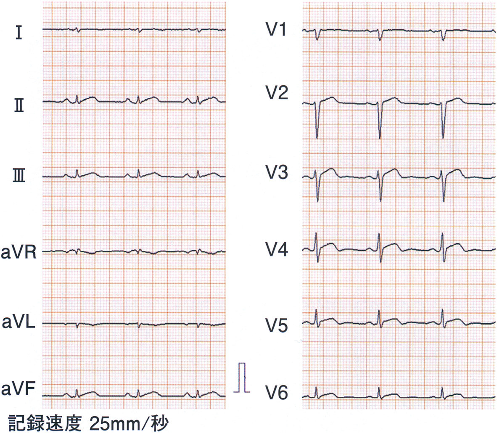
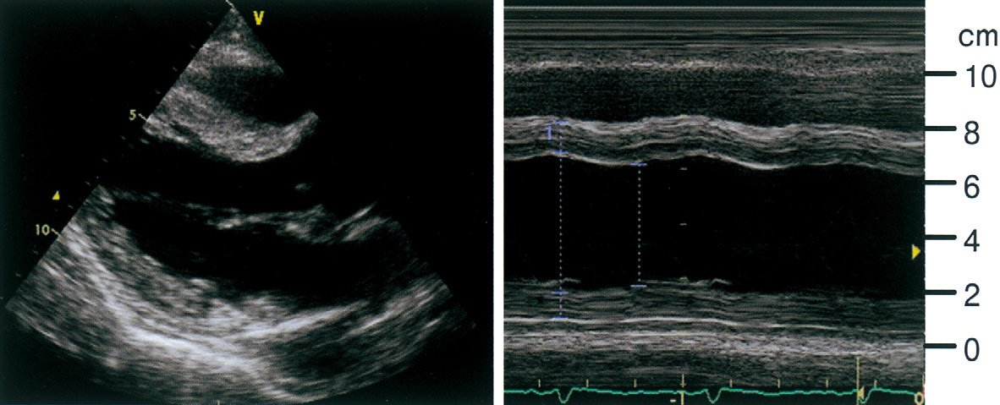
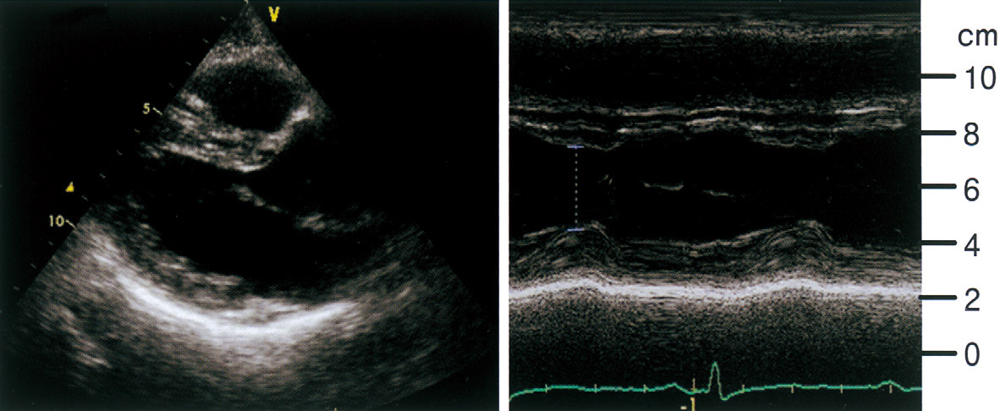
ａ 急性心筋炎
ｂ 急性右室梗塞
ｃ 僧帽弁狭窄症
ｄ 急性肺血栓塞栓症
ｅ 特発性拡張型心筋症
✅
ａ 急性心筋炎
感冒後・若年女性・急性心原性ショック・トロポニン↑・冠動脈正常・14日後に改善＝急性心筋炎。
⏳ 急性心筋炎は「経過」で診断が固まる——14日目のエコーが答えを言っている
本問がほかの心筋炎の設問と違うのは、来院時（B）と入院14日目（C）の心エコーが並べて提示されている点である——これは出題者が「時間経過を見なさい」と明示しているのに等しい。2週間で心機能が改善する疾患は限られており、心筋症のなかでは急性心筋炎とたこつぼ心筋症くらいしかない——拡張型心筋症は改善せず、心筋梗塞の壊死部は瘢痕として固定する。なぜ心筋炎は回復するのか——急性期の収縮不全の相当部分は心筋細胞の壊死そのものより、間質の浮腫と炎症細胞浸潤による「機能停止」によるからである。炎症が沈静化して浮腫が引けば、生き残った心筋が再び働き始める——だから急性期をどう乗り切るかがそのまま予後を決めるのであり、VA-ECMOやIABPといった機械的補助が「治療」として意味を持つ。
ただし全例が治るわけではない——一部は炎症が遷延して慢性心筋炎となり、心筋の線維化と心室拡大が進んで拡張型心筋症と区別のつかない状態へ移行する。「心筋炎後の拡張型心筋症」は拡張型心筋症の原因の1つとして挙げられており、急性期を越えたあとも数か月の運動制限と経過観察が必要になる。
□ 選択肢の検討
| 選択肢 | 解説 |
|---|---|
| ◯ ａ 急性心筋炎 | これが正解。10日前からの感冒様症状に続く前胸部不快感と呼吸困難、血圧74/40mmHg・四肢冷感という心原性ショック、Ⅲ音とⅣ音・両下胸部のcoarse crackles・心拡大・肺うっ血、CK-MB 42U/L・トロポニンT陽性・CRP 11mg/dL——急性心筋炎の像がそろっている。決定打は入院14日目の心エコーが提示されていることで、短期間で心機能が改善する（可逆性）のは急性心筋炎に固有の経過である。 |
| ｂ 急性右室梗塞 | 否定的。右室梗塞は下壁梗塞に合併する病態で、頸静脈怒張・Kussmaul徴候といった右心不全所見が前面に出る一方、肺うっ血を欠くのが特徴である——本例は肺うっ血とcoarse cracklesがあり像が異なる。また34歳女性で冠危険因子の記載がなく、10日前からの感冒様症状という前駆も合わない。（右室梗塞では前負荷依存のため硝酸薬・利尿薬が禁忌で輸液が治療になる点は重要な知識である） |
| ｃ 僧帽弁狭窄症 | 否定的。僧帽弁狭窄症は心尖部の拡張期ランブルと僧帽弁開放音を聴き、左房負荷から心房細動・肺うっ血をきたす慢性疾患である——心筋逸脱酵素は上昇しないのでCK-MB 42U/L・トロポニン陽性を説明できない。 |
| ｄ 急性肺血栓塞栓症 | 否定的。急性肺血栓塞栓症では突然発症の呼吸困難・低酸素血症・Dダイマー上昇・右心負荷が主体となる——右室負荷でトロポニンが軽度上昇することはあるが、CK-MB 42U/L・LD 995U/Lという心筋壊死の程度は説明できない。本例はSpO2 98%（酸素1L/分）と酸素化も比較的保たれている。 |
| ｅ 特発性拡張型心筋症 | 否定的。拡張型心筋症は年単位で緩徐に進行する疾患で、10日の経過で発症するものではない——なにより入院14日目に心機能が改善するという経過は拡張型心筋症では起こりえない。CK-MBの上昇とCRP 11mg/dLという強い炎症も合わない。 |
📌 「感冒後の胸部症状」を診たときの思考の順序
先行感染のあとに胸部症状が出る病態は複数あり、心膜か心筋か、どちらが主戦場かで分けて考える。| 急性心筋炎 | 急性心膜炎 | |
|---|---|---|
| 主な症状 | 心不全症状・不整脈・全身倦怠 | 体位で変わる胸痛（前傾で軽快、臥位で増悪） |
| 聴診 | Ⅲ音・Ⅳ音（奔馬調律） | 心膜摩擦音 |
| 心電図 | 多彩（ST-T変化・房室ブロック・心室頻拍） | 広範な凹型ST上昇＋PR低下、対側性変化なし |
| トロポニン | 著明上昇 | 正常〜軽度上昇 |
| 心機能 | 低下（時に劇的） | 保たれる |
| 合併 | 心原性ショック・致死性不整脈 | 心嚢液貯留・心タンポナーデ・のちに収縮性心膜炎 |
| 治療 | 支持療法＋機械的補助 | NSAIDs・コルヒチン、心タンポナーデには心嚢穿刺 |
なお急性心筋梗塞の除外はどの段階でも最優先である——胸痛＋トロポニン上昇＋ST変化という組合せはACSと区別がつかないので、まず冠動脈を評価してから心筋炎という診断に落ち着くのが安全な順序になる。
🎯 国試ポイント
①急性心筋炎は急性期を越えれば心機能が回復しうる——経時的な心エコーの改善が診断の決め手になる②拡張型心筋症は改善せず、心筋梗塞の壊死部は瘢痕として固定する
③一部は慢性心筋炎から拡張型心筋症へ移行する。回復後も数か月の運動制限と経過観察が要る
④右室梗塞は肺うっ血を欠き、硝酸薬・利尿薬が禁忌（前負荷依存）——治療は輸液である
⑤急性心膜炎との対比＝体位で変わる胸痛・心膜摩擦音・広範な凹型ST上昇とPR低下・トロポニンは軽度
Q.459(110I-30)一般72%
急性心筋炎を疑わせる症候でないのはどれか。
ａ 左室壁のびまん性の菲薄化
ｂ 先行する感冒様症状
ｃ ST-T 異常
ｄ 奔馬調律
ｅ 腹部症状
✅
ａ 左室壁のびまん性の菲薄化
菲薄化はDCM（慢性）の所見。急性心筋炎では壁肥厚・壁運動低下があるが菲薄化はない。
🎭 急性心筋炎の顔つき——「心臓の病気に見えない」ことがいちばんの特徴
急性心筋炎は無症状から突然死まで臨床像の幅がきわめて広い——健診の心電図異常だけで見つかる例もあれば、数日で心原性ショックに陥る劇症型もある。共通するのは「心臓の症状として現れないことが多い」点で、国試でも実臨床でも見逃しの温床になっている。典型的な症候を並べる：
・先行する感冒様症状（1〜2週前の上気道炎・胃腸炎）
・消化器症状（悪心・嘔吐・上腹部痛）——「胃腸炎」として扱われる最大の原因
・胸痛・全身倦怠感・呼吸困難
・奔馬調律（Ⅲ音・Ⅳ音）、頻脈
・心電図のST-T変化・伝導障害・不整脈
・トロポニン・CKの上昇、CRP上昇
一方、心エコーで「壁が薄い」ことはない——急性期の心筋には間質の浮腫と炎症細胞浸潤があるので、壁厚はむしろ厚くなる。「壁厚は保たれているのに全体が動かない」という不釣り合いこそが急性心筋炎らしさである。
□ 選択肢の検討
| 選択肢 | 解説 |
|---|---|
| ◯ ａ 左室壁のびまん性の菲薄化 | 急性心筋炎を疑わせず、これが正解。左室壁のびまん性の菲薄化は心筋細胞が長い時間をかけて脱落し、線維化に置き換わった結果であり、拡張型心筋症のような慢性の病態を示す所見である——急性心筋炎では逆に間質の浮腫と炎症細胞浸潤で壁厚は保たれるか、むしろ増す。「動かない」と「薄い」を切り離して読むことが要点で、急性心筋炎は厚みは正常なのに動かない。 |
| ｂ 先行する感冒様症状 | 強く疑わせる。ウイルス感染を契機とすることが多く、1〜2週間前の上気道炎・胃腸炎という前駆症状は診断の出発点になる病歴である——ただし受診時にはすでに軽快していることが多いため、こちらから遡って聴かなければ拾えない。 |
| ｃ ST-T 異常 | 疑わせる。心筋の炎症によりST上昇・ST低下・T波の陰転など多彩なST-T変化が現れる——心膜にも炎症が及べば広範な誘導での凹型ST上昇を示し、心膜炎様のパターンになる。さらに房室ブロック・脚ブロック・心室頻拍など伝導障害や不整脈も高頻度に出現する。 |
| ｄ 奔馬調律 | 疑わせる。奔馬調律（gallop rhythm）はⅢ音またはⅣ音が加わって3拍子に聞こえる状態で、心機能低下と充満圧上昇を反映する——急性心筋炎で心不全に至った症例では頻脈と相まってしばしば聴取される。 |
| ｅ 腹部症状 | 疑わせる。悪心・嘔吐・上腹部痛・食欲低下といった消化器症状は急性心筋炎できわめて高頻度にみられる——ウイルス感染そのものによる胃腸炎症状に加え、低心拍出による腸管の灌流低下と肝うっ血が重なる。この症状のために「急性胃腸炎」と診断されて心疾患の診断が遅れるのが、心筋炎の見逃しの最大の理由である。 |
📌 「壁が厚いか薄いか」で心筋疾患を並べ替える
心エコーの壁厚は、その病態が急性か慢性か・何が心筋に足されたか引かれたかを語る。| 壁厚 | 疾患 | 成り立ち |
|---|---|---|
| 厚い | 肥大型心筋症 | サルコメア遺伝子変異による心筋細胞の肥大と錯綜配列 |
| 高血圧性心肥大・大動脈弁狭窄症 | 圧負荷に対する代償性肥大 | |
| 心アミロイドーシス・Fabry病 | 異常物質の沈着・蓄積（心筋が肥大したのではない） | |
| 急性心筋炎 | 間質の浮腫と炎症細胞浸潤（一過性） | |
| 薄い | 拡張型心筋症 | 心筋細胞の脱落と線維化＋容量負荷による伸展（不可逆） |
| 陳旧性心筋梗塞・心室瘤 | 壊死した心筋が瘢痕化して伸びる | |
| 不整脈原性右室心筋症 | 右室心筋の脂肪・線維置換 |
なお心アミロイドーシスは心筋が肥大しているのではなく細胞外にアミロイドが積もっている——だから壁は厚いのに心電図は低電位という一見矛盾した所見になる。
🎯 国試ポイント
①急性心筋炎で左室壁のびまん性菲薄化は見られない。菲薄化は慢性（拡張型心筋症・陳旧性心筋梗塞）の所見②急性心筋炎では浮腫で壁厚が保たれる〜増すのに全体が動かない——この不釣り合いが特徴
③疑わせる症候＝先行感冒・消化器症状・ST-T異常・奔馬調律・トロポニン上昇
④消化器症状で「胃腸炎」と誤診されて見逃されるのが最大の落とし穴
⑤壁が厚くなる病態＝肥大／浸潤・蓄積／浮腫、薄くなる病態＝細胞の脱落・壊死、と分けて整理する
Q.460(108A-41)臨床📷 画像60%
40 歳の男性。乏尿と呼吸困難とを主訴に救急外来を受診した。既往歴に特記すべきことはない。意識は清明。冷汗と下腿浮腫とを認める。Ⅲ音とⅣ音とを聴取する。両側の胸部にcoarse crackles を聴取する。脈拍108/ 分、整。血圧72/50mmHg。呼吸数28/ 分。血液生化学所見：クレアチニン1.8mg/dl、Na 134mEq/l、K 3.8mEq/l、Cl100mEq/l、脳性ナトリウム利尿ペプチド〈BNP〉840pg/ml（基準18.4 以下）。動脈血ガス分析（room air）：pH 7.32、PaCO2 30Torr、PaO2 62Torr、HCO3 － 15mEq/l。心エコー図（傍胸骨左縁長軸像）（A，B）を示す。
まず投与すべき治療薬で適切なのはどれか。
まず投与すべき治療薬で適切なのはどれか。
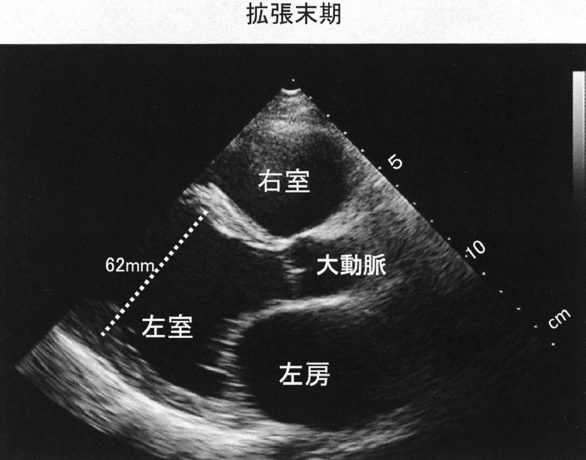
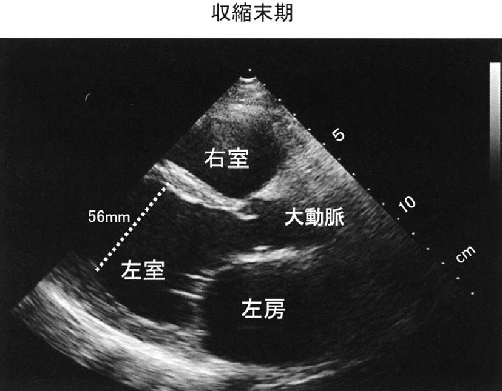
ａ β遮断薬
ｂ ドパミン
ｃ ジギタリス
ｄ ニトログリセリン
ｅ アンジオテンシン変換酵素〈ACE〉阻害薬
✅
ｂ ドパミン
心原性ショック（低血圧・低心拍出）→まず昇圧・強心作用のあるドパミン（カテコラミン）。
🩸 心原性ショック——「まず何をするか」は血圧と灌流で決まる
本例は乏尿・呼吸困難・冷汗・下腿浮腫・Ⅲ音とⅣ音・両側coarse crackles・血圧72/50mmHg——うっ血と低灌流が同時に存在する心原性ショックである。血液ガスはpH 7.32／PaCO₂ 30Torr／HCO₃⁻ 15mEq/Lで代謝性アシドーシスと呼吸性代償を示し、アニオンギャップは Na 134 −（Cl 100 ＋ HCO₃⁻ 15）＝19 と開大——組織低灌流による乳酸アシドーシスである。クレアチニン1.8mg/dLの上昇と乏尿も腎灌流の低下を裏づけ、「臓器が酸素不足に陥っている」ことを示す。急性心不全の初期治療は「うっ血があるか（wet/dry）」×「低灌流があるか（warm/cold）」の2軸で決める（Nohria–Stevenson分類）：wet-warm（うっ血のみ）→利尿薬＋血管拡張薬、wet-cold（うっ血＋低灌流）→強心薬を加える——本例はwet-coldにあたり、カテコラミンが第一の選択になる。
収縮期血圧を軸にしたクリニカルシナリオ〈CS〉も同じ結論を導く：CS1（収縮期血圧140mmHg超）＝肺水腫が主体→血管拡張薬とNPPV、CS2（100〜140mmHg）＝全身のうっ血→利尿薬・血管拡張薬、CS3（100mmHg未満・低灌流）→強心薬、必要なら機械的補助——本例はCS3である。
薬で灌流が保てなければIABP・IMPELLA・VA-ECMOという機械的補助へ進む。同時に原因（虚血・弁膜症・不整脈・心筋炎）の是正を並行して探す。
□ 選択肢の検討
| 選択肢 | 解説 |
|---|---|
| ａ β遮断薬 | この場面では不適切。β遮断薬は陰性変力作用をもつため、収縮期血圧72mmHgのショック状態に投与すれば心拍出量をさらに落として致命的になる——慢性心不全の予後改善薬ではあるが、うっ血と低灌流が是正された安定期に少量から導入するのが鉄則である。 |
| ◯ ｂ ドパミン | これが正解。本例は血圧72/50mmHg・冷汗・乏尿・代謝性アシドーシスという心原性ショックであり、まず必要なのは心拍出量を上げて臓器灌流を確保することである。ドパミンは用量によって作用が変わり、中等量（3〜10μg/kg/分）でβ₁受容体を介した強心作用、高用量（10μg/kg/分超）でα₁を介した血管収縮による昇圧が加わる——「まず投与すべき」という問い方に正面から答えるのがカテコラミンである。 |
| ｃ ジギタリス | この場面では不適切。ジギタリスの陽性変力作用はカテコラミンに比べて弱く、効果発現も遅いため、ショックの初期対応にはならない——現在の主な位置づけは心房細動を合併した心不全のレートコントロールである。腎排泄で治療域が狭く、本例のようにクレアチニン1.8mg/dLと腎機能が低下した状態では中毒を起こしやすい。 |
| ｄ ニトログリセリン | この場面では不適切。ニトログリセリンは静脈を拡張して前負荷を、高用量では動脈も拡張して後負荷を下げるため肺うっ血を速やかに軽減する——ただしそれは血圧が保たれている場合の話である。収縮期血圧72mmHgではさらなる血圧低下と冠灌流の悪化を招く。「血圧が高い急性心不全（クリニカルシナリオ1）には血管拡張薬、血圧が低い心不全（クリニカルシナリオ3）には強心薬」と対で覚える。 |
| ｅ アンジオテンシン変換酵素〈ACE〉阻害薬 | この場面では不適切。ACE阻害薬は後負荷を下げてリモデリングを抑える慢性期の予後改善薬である——ショック時に投与すれば血圧をさらに下げ、輸出細動脈の拡張によって腎灌流圧を落として腎機能を悪化させる。本例はすでにクレアチニン1.8mg/dLと腎前性の腎障害を来しており、なおさら適さない。 |
📌 急性心不全で使う循環作動薬——受容体と血圧で選ぶ
| 薬剤 | 作用 | 使いどころ |
|---|---|---|
| ドパミン | 低用量:腎血管拡張／中等量:β₁（強心）／高用量:α₁（血管収縮・昇圧） | 低血圧を伴う心原性ショック |
| ドブタミン | β₁選択的（強心）。末梢血管抵抗は下がる | 血圧がある程度保たれた低心拍出 |
| ノルアドレナリン | α₁優位（強い血管収縮） | 高度低血圧。敗血症性ショックの第一選択 |
| アドレナリン | α・β両方 | 心停止・アナフィラキシー |
| ミルリノン（PDEⅢ阻害薬） | 強心＋血管拡張（inodilator） | β遮断薬内服中でも効く（受容体を介さない）が血圧を下げる |
| ニトログリセリン | 静脈拡張（前負荷↓）／高用量で動脈も | 血圧が保たれた急性心不全・肺水腫（CS1） |
| カルペリチド（hANP） | 血管拡張＋利尿＋RAA系抑制 | 血圧が保たれた急性心不全。低血圧では使わない |
| フロセミド | ループ利尿（前負荷↓） | 体液貯留を伴う心不全 |
🎯 国試ポイント
①心原性ショックにまず投与するのはカテコラミン（ドパミン・ドブタミン）②低血圧の急性期にβ遮断薬・ACE阻害薬・硝酸薬は禁物。いずれも安定期の薬である
③Nohria–Stevenson分類（wet/dry × warm/cold）とクリニカルシナリオ（血圧で層別）で初期治療を決める
④AG開大の代謝性アシドーシス＝乳酸アシドーシス＝組織低灌流のサイン
⑤カテコラミンは予後改善薬ではない——短期間で切り上げ、安定したら予後改善薬へ切り替える
Q.461(107F-21)必修臨床📷 画像80%
22 歳の男性。健康診断の胸部エックス線写真で心陰影の拡大を指摘され来院した。自覚症状はない。既往歴に特記すべきことはない。喫煙歴はない。脈拍72/ 分、整。血圧108/64mmHg。心尖部に汎〈全〉収縮期雑音を聴取する。呼吸音に異常を認めない。下腿に浮腫を認めない。心電図は洞調律で、左側前胸部誘導でR 波の高電位を認める。心エコー図（左室短軸像）（A，B）を示す。後日行った冠動脈造影では異常を認めなかった。
治療薬として適切なのはどれか。
治療薬として適切なのはどれか。


ａ 強心薬
ｂ 利尿薬
ｃ α遮断薬
ｄ カルシウム拮抗薬
ｅ アンジオテンシン変換酵素阻害薬
✅
ｅ アンジオテンシン変換酵素阻害薬
DCM（HFrEF）：ACE阻害薬はEF改善・予後改善のエビデンスがある第一選択薬。
🕰️ 症状が出る前に始める——無症候性左室機能不全という考え方
本例は22歳、健診での心陰影拡大が発見の契機、自覚症状なしである——心尖部の汎（全）収縮期雑音は左室拡大に伴って僧帽弁輪が広がり、乳頭筋が外方へ引かれて弁が接合できなくなった二次性（機能性）僧帽弁閉鎖不全を示す。左側前胸部誘導のR波高電位は左室の電気的な負荷を、冠動脈造影で異常なしは虚血性心筋症の除外を意味する——拡張型心筋症の診断が固まる。ここで問われているのは「症状がないのになぜ薬を出すのか」という心不全治療の根幹である。心不全は症状が出る前から進行している——心拍出量の低下を補うために交感神経系とRAA系が動員され、その代償機構そのものが心筋の肥大・線維化・アポトーシスを進める。この悪循環は自覚症状に先行して回り始めているので、症状を待ってから介入したのでは遅い。
だから心不全は「うっ血を取る（症状の治療）」と「リモデリングを止める（予後の治療）」を分けて考える：
・症状の治療＝利尿薬・血管拡張薬・強心薬。楽にはなるが寿命は延びない
・予後の治療＝ACE阻害薬／ARB／ARNI・β遮断薬・MRA・SGLT2阻害薬。症状が無くても始める
本例は「症状がない」＝Stage Bであり、対症療法（利尿薬・強心薬）ではなくリモデリングを抑える薬を選ぶ——これが本問の要求である。
□ 選択肢の検討
| 選択肢 | 解説 |
|---|---|
| ａ 強心薬 | 適切でない。強心薬は心筋の酸素消費を増やし、不整脈を誘発する——経口強心薬の長期投与は大規模試験でかえって死亡率を高めることが示されており、使用は急性期の低心拍出に限られる。まして本例は自覚症状のない段階であり適応がない。 |
| ｂ 利尿薬 | 適切でない。利尿薬はうっ血症状を取る対症療法で、呼吸困難や浮腫があるときに用いる——本例は自覚症状がなく、下腿浮腫も認めないので投与する理由がない。単独では生命予後を改善しない点も押さえておく。 |
| ｃ α遮断薬 | 適切でない。α遮断薬は血管抵抗を下げて降圧するが、収縮不全の心不全で予後を改善する根拠がない——大規模試験ではむしろ心不全の発症・増悪が多く、心不全患者の降圧薬としては選ばれない。 |
| ｄ カルシウム拮抗薬 | 適切でない。ジヒドロピリジン系Ca拮抗薬は陰性変力作用と反射性の交感神経賦活により収縮不全の心不全では推奨されない——非ジヒドロピリジン系（ベラパミル・ジルチアゼム）は陰性変力作用がさらに強く禁忌である。（Ca拮抗薬が主役になるのは肥大型心筋症のベラパミルであって、拡張型心筋症ではない） |
| ◯ ｅ アンジオテンシン変換酵素阻害薬 | これが正解。ACE阻害薬はRAA系を遮断して後負荷を下げ、アンジオテンシンⅡとアルドステロンによる心筋の線維化・肥大を抑える——すなわち心室リモデリングそのものを止める薬である。重要なのは症状の有無にかかわらず、左室収縮能が低下していれば適応がある点で、無症候の段階（Stage B）から始めることで心不全の発症を遅らせ、生命予後を改善することが示されている。副作用の空咳が問題になればARBへ変更する。 |
📌 HFrEFの薬物療法——「4本柱」とそれ以外
| 薬剤 | 機序 | 予後改善 |
|---|---|---|
| ACE阻害薬／ARB／ARNI | RAA系遮断。ARNIはネプリライシン阻害を併せてNP系を増強 | ◯ |
| β遮断薬 | 交感神経遮断。カルベジロール・ビソプロロール | ◯ |
| MRA | アルドステロン遮断。線維化抑制。スピロノラクトン・エプレレノン | ◯ |
| SGLT2阻害薬 | 糖尿病の有無を問わず有効。ダパグリフロジン・エンパグリフロジン | ◯ |
| 利尿薬（ループ） | うっ血の軽減 | ×（症状のみ） |
| ジギタリス | 陽性変力・心拍数調節 | ×（入院は減るが死亡率は不変） |
| 経口強心薬（長期） | cAMP増加 | ×（死亡率が上がる） |
| DHP系Ca拮抗薬・α遮断薬 | 血管拡張 | × |
🎯 国試ポイント
①症状がなくても左室収縮能が低下していればACE阻害薬／ARBを始める（Stage B）②HFrEFの4本柱＝ACE阻害薬／ARB／ARNI・β遮断薬・MRA・SGLT2阻害薬。早期に少量ずつ同時に立ち上げる
③利尿薬・ジギタリス・強心薬は症状の薬で予後を改善しない。経口強心薬の長期投与は死亡率を上げる
④Ca拮抗薬・α遮断薬は収縮不全の心不全に用いない
⑤拡張型心筋症の心尖部汎収縮期雑音＝左室拡大に伴う二次性（機能性）僧帽弁閉鎖不全
Q.462(106D-33)臨床📷 画像96%
21 歳の女性。運動時に気が遠くなる感じがあることを主訴に来院した。3 か月前から同様の症状に気付いていた。脈拍68/ 分、整。血圧112/68mmHg。心尖部にⅣ音を、胸骨左縁第4 肋間を中心に収縮期雑音を聴取する。心エコー図（A，B）を示す。
治療薬として適切なのはどれか。
治療薬として適切なのはどれか。
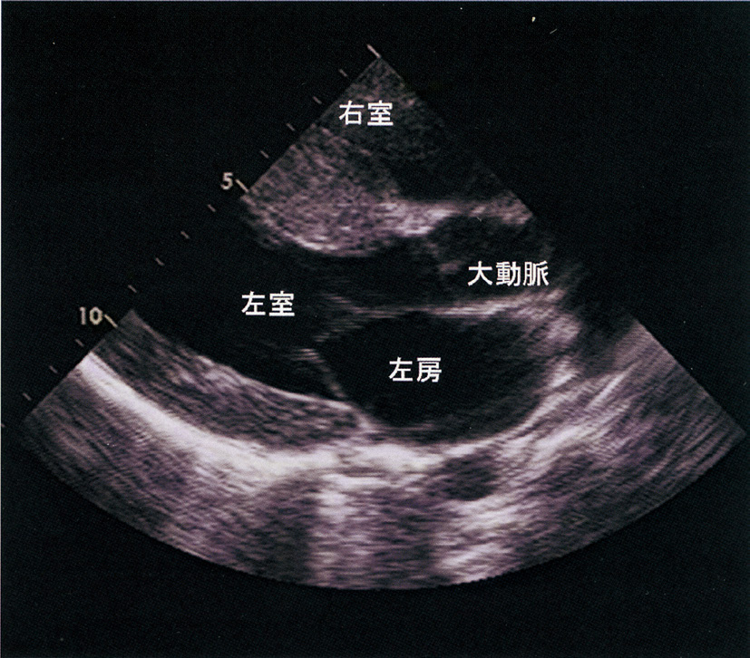
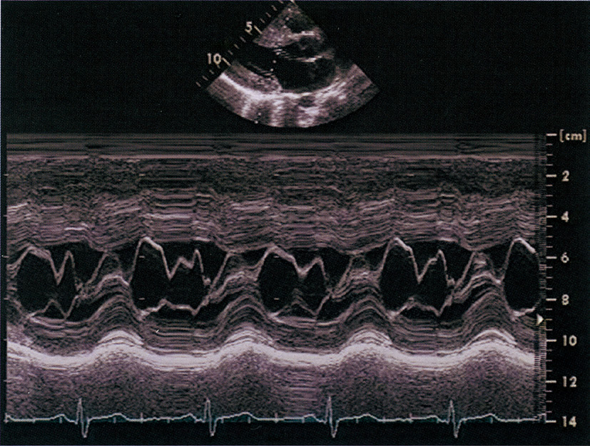
ａ 利尿薬
ｂ 硝酸薬
ｃ β遮断薬
ｄ ジギタリス
ｅ アスピリン
✅
ｃ β遮断薬
HCM/HOCM：β遮断薬は心拍数低下・収縮力低下→流出路閉塞↓・拡張期充満改善。第一選択。
💫 若年女性の労作時の前失神——閉塞性肥大型心筋症をどう治すか
21歳女性、運動時に気が遠くなるという3か月来の症状、心尖部のⅣ音、胸骨左縁第4肋間の収縮期雑音——閉塞性肥大型心筋症の典型的な提示である。Ⅳ音は硬く肥厚した左室に心房が血液を押し込む音で拡張障害を、胸骨左縁の収縮期雑音は左室流出路の狭窄を示す。なぜ労作時に症状が出るのか——運動が閉塞を悪化させる3つの条件をすべて満たすからである：①収縮性の増加（カテコラミン）②心拍数の増加による拡張期の短縮＝充満の減少（前負荷↓）③骨格筋の血管拡張による末梢血管抵抗の低下（後負荷↓）——左室が小さく・速く・強く動くほど流出路が詰まるので、運動中にこそ心拍出量が頭打ちになって脳灌流が落ちる。これに心室性不整脈が加われば突然死に直結するため、労作時の失神は必ず精査する。
治療の考え方は一本の線で通っている——「収縮を弱め、心拍を落とし、左室を大きく保つ」：
・β遮断薬（第一選択）——陰性変力＋陰性変時
・ベラパミル（非ジヒドロピリジン系Ca拮抗薬）——β遮断薬が使えない／効果不十分なとき。拡張機能も改善する
・ジソピラミド——上記で不十分な有症候性閉塞例に追加
逆に硝酸薬・強心薬（ジギタリス・カテコラミン）・過剰な利尿・脱水はすべて閉塞を悪化させる方向にはたらく。
□ 選択肢の検討
| 選択肢 | 解説 |
|---|---|
| ａ 利尿薬 | 適切でない。利尿薬は循環血漿量を減らして前負荷を下げる——左室が小さくなるほど流出路が詰まる閉塞性肥大型心筋症では圧較差を増悪させ、失神を誘発しうる。うっ血が強い症例で慎重に少量使うことはあるが、第一選択にはならない。 |
| ｂ 硝酸薬 | 適切でない（禁忌）。硝酸薬は静脈を拡張して前負荷を、動脈を拡張して後負荷を下げるため、左室流出路の閉塞を二重に悪化させる——胸痛を訴える患者にニトログリセリンを使うのは狭心症では正しい対応だが、閉塞性肥大型心筋症では血圧低下と失神を招く。「胸痛＝ニトログリセリン」という反射を止めさせる典型的な設問である。 |
| ◯ ｃ β遮断薬 | これが正解。β遮断薬は陰性変力作用で収縮の勢いを弱めて流出路圧較差を下げ、同時に陰性変時作用で心拍数を落として拡張期を長くし左室の充満を改善する——「収縮を弱め、左室を大きくする」という肥大型心筋症の治療原則にちょうど合致しており、第一選択である。狭心痛・呼吸困難・失神といった症状の改善に有効で、運動時の圧較差上昇も抑える。 |
| ｄ ジギタリス | 適切でない（禁忌）。ジギタリスは陽性変力作用をもち、収縮の勢いを強めることでSAMと流出路閉塞を悪化させる——同じ理由でドパミン・ドブタミンなどのカテコラミンも閉塞性肥大型心筋症では避ける。「心機能が悪そうだから強心薬」という発想が通用しない代表的な疾患である。 |
| ｅ アスピリン | 適切でない。アスピリンは抗血小板薬で、動脈硬化性の血栓症（虚血性心疾患・脳梗塞）の予防に用いる——肥大型心筋症の病態は血栓ではなく心筋の肥厚と流出路閉塞なので適応がない。（心房細動を合併した場合に必要になるのは抗血小板薬ではなく抗凝固薬である） |
📌 閉塞性肥大型心筋症の治療の階段と、突然死への備え
| 段階 | 手段 | ねらい |
|---|---|---|
| ① 生活指導 | 競技スポーツ・高強度運動の制限、脱水の回避 | 突然死の予防と閉塞の増悪防止 |
| ② 薬物 | β遮断薬 → ベラパミル → ジソピラミド | 収縮性を落とし拡張期を延ばす |
| ③ 侵襲的治療 | 経皮的中隔心筋焼灼術〈PTSMA〉（中隔枝にエタノール注入）／中隔心筋切除術（Morrow手術） | 薬剤抵抗性の有症候性閉塞（圧較差50mmHg以上） |
| ④ 突然死予防 | 植込型除細動器〈ICD〉 | 心停止・持続性心室頻拍の既往（二次予防）、リスク因子を満たす例（一次予防） |
| ⑤ 末期 | 拡張相へ移行した例では心不全治療、心臓移植 | 収縮能が落ちた段階の管理 |
また肥大型心筋症は心房細動を合併しやすい——拡張障害のため心房収縮による充満（atrial kick）への依存度が高く、心房細動になると一気に血行動態が破綻する。塞栓リスクも高く、CHADS₂スコアによらず抗凝固療法の適応とされる点は押さえておきたい。
🎯 国試ポイント
①閉塞性肥大型心筋症の第一選択はβ遮断薬（陰性変力＋陰性変時で圧較差を下げ拡張期を延ばす）②次いでベラパミル、それでも不十分ならジソピラミド
③禁忌＝硝酸薬・強心薬（ジギタリス・カテコラミン）・過剰な利尿・脱水。いずれも閉塞を悪化させる
④薬剤抵抗性にはPTSMA（エタノール中隔焼灼）かMorrow手術。突然死リスクが高ければICD
⑤肥大型心筋症＋心房細動はCHADS₂スコアによらず抗凝固の適応（atrial kickへの依存が高い）
Q.463(106G-58)臨床3択94%
16 歳の男子。全校集会で長時間立位でいた後、失神して倒れたため母親に伴われて校医を受診した。失神前に悪心と胸痛とを自覚したという。目撃者によると意識は1 分以内に回復し、すぐに立ち上がることができた。2 年前にもランニング中に失神したことがあった。母方の叔父が突然死しているという。身体診察所見で異常を認めない。校医は専門医療機関に紹介した。
校医が専門医療機関に紹介する根拠となった病歴はどれか。3 つ選べ。
校医が専門医療機関に紹介する根拠となった病歴はどれか。3 つ選べ。
ａ 長時間の立位後の失神
ｂ 失神前の胸痛
ｃ 失神の持続時間
ｄ 運動中の失神
ｅ 突然死の家族歴
✅
ｂ 失神前の胸痛 ＋ ｄ 運動中の失神 ＋ ｅ 突然死の家族歴
運動中の失神・失神前の胸痛・突然死の家族歴＝心原性失神を示す危険信号。長時間立位後の失神と1分以内の回復は良性を支持する。
🚩 失神を3つに分ける——「危険な失神」を取りこぼさないために
失神とは脳血流の一過性低下により意識を失い、自然に完全回復する状態をいう。原因は次の3群に大別され、予後がまったく違うため最初にどれかを見極める：①反射性（神経調節性）失神——血管迷走神経性・状況失神（排尿・排便・咳嗽・嚥下）・頸動脈洞症候群。最多で予後は良好
②起立性低血圧——脱水・出血・降圧薬や利尿薬・自律神経障害（Parkinson病、糖尿病、多系統萎縮症）。立ち上がった直後に起こる
③心原性失神——不整脈（徐脈性・頻脈性）と器質的心疾患（肥大型心筋症・大動脈弁狭窄症・肺血栓塞栓症・心タンポナーデ）。突然死につながる。これを拾うことが失神診療の目的である
心原性を疑う危険信号を挙げる：①労作中・運動中の失神②臥位での失神③前駆症状がない、または胸痛・動悸が先行④若年突然死の家族歴⑤器質的心疾患の既往や心雑音⑥心電図異常⑦外傷を伴う失神——本例は①③④を満たしており、専門医への紹介は当然の判断である。
逆に良性を支持する所見は「長時間の立位・疼痛・恐怖などの明らかな誘因」「悪心・冷汗・眼前暗黒感という前駆」「速やかで完全な回復」——本例ではこれらが選択肢aとcにあたる。
□ 選択肢の検討
| 選択肢 | 解説 |
|---|---|
| ａ 長時間の立位後の失神 | 紹介の根拠にはならない。全校集会での長時間の立位は血管迷走神経性失神の最も典型的な誘因である——下肢に血液がプールして静脈還流が減り、空になった心室が強く収縮することで機械受容器が誤作動し、副交感神経優位＋交感神経抑制から徐脈と血管拡張が起こる。この機序は良性であり、それ自体は精査の理由にならない。 |
| ◯ ｂ 失神前の胸痛 | 紹介の根拠であり、正解の1つ。失神の前駆症状が胸痛や動悸である場合は心原性を疑う——血管迷走神経性失神の前駆症状は悪心・冷汗・生あくび・眼前暗黒感で、数十秒かけてゆっくり進むのが普通である。胸痛は心筋虚血や左室流出路の閉塞を示唆し、肥大型心筋症・大動脈弁狭窄症・冠動脈起始異常が候補にあがる。 |
| ｃ 失神の持続時間 | 紹介の根拠にはならない。本例は1分以内に意識が回復し、すぐ立ち上がることができた——これは速やかで完全な回復であり、むしろ良性の失神を支持する所見である。意識障害が遷延する、けいれんを伴う、回復後にもうろう状態が続くといった場合はてんかん発作など別の病態を考えることになる。 |
| ◯ ｄ 運動中の失神 | 紹介の根拠であり、正解の1つ。労作中・運動中の失神は失神の危険信号のなかでも最重要である——運動時には心拍出量を増やす必要があるのに、それに応えられない器質的な障害やカテコラミンで誘発される不整脈があると意識を失う。候補は肥大型心筋症・大動脈弁狭窄症・冠動脈起始異常・不整脈原性右室心筋症・QT延長症候群・カテコラミン誘発多形性心室頻拍——いずれも突然死をきたす疾患である。本例は2年前にランニング中の失神を起こしている。 |
| ◯ ｅ 突然死の家族歴 | 紹介の根拠であり、正解の1つ。母方の叔父の突然死——若年の突然死の家族歴は遺伝性の心筋症・不整脈疾患を強く示唆する。肥大型心筋症・不整脈原性右室心筋症・QT延長症候群・Brugada症候群・カテコラミン誘発多形性心室頻拍・Marfan症候群はいずれも家族内に集積し、本人の突然死リスクを高める独立した因子となる。 |
📌 失神の初期評価——病歴・身体所見・12誘導心電図で8割が決まる
失神の診療は①詳細な病歴②身体所見（血圧の起立性変化を含む）③12誘導心電図の3点セットから始める——この3つで原因の推定と危険度の層別化がほぼ済み、追加検査はここで立てた仮説を確かめるために選ぶ。| 疑うもの | 次に行う検査 |
|---|---|
| 器質的心疾患（心雑音・心電図異常） | 心エコー——肥大型心筋症・大動脈弁狭窄症の確認 |
| 頻度の高い不整脈 | Holter心電図 |
| まれにしか起こらない不整脈 | 植込型ループレコーダ（数年間記録できる） |
| 労作関連 | 運動負荷試験（ただし高度大動脈弁狭窄症では慎重に） |
| 反射性失神 | ヘッドアップティルト試験 |
| 徐脈・伝導障害 | 心臓電気生理学的検査 |
なお本邦では学校心臓検診（小1・中1・高1で心電図）が制度化されており、本例のような症例を無症状のうちに拾い上げる仕組みがある。
🎯 国試ポイント
①失神の3分類＝反射性（最多・良性）／起立性低血圧／心原性（突然死につながる）②心原性の危険信号＝労作中の失神・臥位での失神・前駆症状なしまたは胸痛/動悸・若年突然死の家族歴・心雑音・心電図異常
③長時間の立位が誘因・悪心や冷汗が前駆・速やかで完全な回復は良性を支持し、紹介の根拠にならない
④初期評価は病歴・身体所見・12誘導心電図の3点セット
⑤まれな不整脈を捕まえるには植込型ループレコーダ
Q.464(105B-41)臨床📷 画像76%
44 歳の男性。胸部圧迫感を主訴に来院した。父親が54 歳で突然死している。脈拍60/ 分、整。血圧148/92mmHg。胸骨左縁第3 肋間を最強点とする3/6 度の収縮期駆出性雑音を聴取する。心電図を示す。
診断に最も有用なのはどれか。
診断に最も有用なのはどれか。

ａ 心エコー検査
ｂ 心カテーテル検査
ｃ Holter 心電図検査
ｄ 運動負荷心電図検査
ｅ 心筋シンチグラフィ
✅
ａ 心エコー検査
HCMを疑う臨床像（収縮期駆出性雑音・突然死家族歴）→確定診断に心エコー（ASH・SAM確認）。
🔎 「収縮期駆出性雑音＋突然死の家族歴＋心電図異常」をどう詰めるか
44歳男性の胸部圧迫感、父親が54歳で突然死、胸骨左縁第3肋間を最強点とする3/6度の収縮期駆出性雑音、そして心電図異常——この4点セットが指すのは肥大型心筋症である。収縮期駆出性雑音の鑑別は3つに絞られる：①大動脈弁狭窄症（胸骨右縁第2肋間が最強点、頸部へ放散、遅脈・小脈、Ⅱ音の減弱）②閉塞性肥大型心筋症（胸骨左縁第3〜4肋間、頸部へ放散しにくい、立位・Valsalvaで増強）③肺動脈弁狭窄症（胸骨左縁第2肋間、吸気で増強）——本例の最強点は胸骨左縁第3肋間で、閉塞性肥大型心筋症に合致する。
肥大型心筋症の心電図所見も押さえておきたい：左室高電位（SV₁＋RV₅ の増大）、広範な陰性T波とST低下（ストレインパターン）、中隔の肥厚を反映した異常Q波（心筋梗塞と誤られる）、心尖部肥大型では巨大陰性T波——ただし心電図所見は非特異的で、確定は心エコーでなされる。
診断の一般原則として、非侵襲で・情報量が多く・その場で結論が出る検査を先に置く——循環器領域でこの条件を最もよく満たすのが心エコーであり、「診断に最も有用な検査は？」と問われたときの強い第一候補になる。
□ 選択肢の検討
| 選択肢 | 解説 |
|---|---|
| ◯ ａ 心エコー検査 | これが正解。心エコーは非侵襲・即時・繰り返し可能でありながら、壁厚と肥厚の分布（非対称性中隔肥厚）・SAM・左室流出路圧較差・拡張機能・弁膜症の有無を一度に評価できる——肥大型心筋症の診断はここで確定するのが原則である。同時に、収縮期駆出性雑音のもう1つの原因である大動脈弁狭窄症を弁の形態と圧較差の位置から鑑別できる点も大きい。 |
| ｂ 心カテーテル検査 | 第一選択にはならない。心カテーテル検査では左室流出路圧較差を直接測定でき、冠動脈も評価できるが侵襲的である——心エコーで得られる情報とほぼ重なるため、診断のために最初から行う検査ではない。手術・PTSMAの適応判断や冠動脈疾患の合併評価など、目的が明確なときに行う。 |
| ｃ Holter 心電図検査 | 診断のための検査ではない。Holter心電図は非持続性心室頻拍などの不整脈を捉える検査で、肥大型心筋症と診断がついたあとの突然死リスク評価に用いる——「何の病気か」を決める段階の検査ではない。 |
| ｄ 運動負荷心電図検査 | 適さない。運動負荷心電図は心筋虚血を評価する検査である——本例は胸部圧迫感を訴えているので虚血も鑑別にあがるが、肥大型心筋症や大動脈弁狭窄症が否定されていない段階で負荷をかけると、流出路閉塞の増悪や致死性不整脈を誘発する危険がある。まず心エコーで器質的疾患を確認するのが安全な順序である。 |
| ｅ 心筋シンチグラフィ | 補助的にとどまる。心筋シンチグラフィは心筋血流の分布をみる検査で、虚血性心疾患の評価が主目的である——肥大型心筋症でも肥厚部に一致した集積低下がみられることがあるが、これは微小循環障害を反映した非特異的な所見で、診断の決め手にはならない。 |
📌 大動脈弁狭窄症と閉塞性肥大型心筋症——ベッドサイドで分ける
どちらも収縮期駆出性雑音・失神・胸痛・突然死という似た顔をもつが、治療も禁忌もほぼ正反対なので確実に分ける。| 大動脈弁狭窄症 | 閉塞性肥大型心筋症 | |
|---|---|---|
| 雑音の最強点 | 胸骨右縁第2肋間 | 胸骨左縁第3〜4肋間 |
| 放散 | 頸部（頸動脈）へ放散 | 放散しにくい |
| 頸動脈拍動 | 遅脈・小脈（parvus et tardus） | 立ち上がりが速く二峰性 |
| 立位・Valsalva | 減弱 | 増強 |
| しゃがみ込み・握力 | 増強 | 減弱 |
| Ⅱ音 | 大動脈弁成分の減弱・奇異性分裂 | 正常のことが多い |
| 心エコー | 弁の石灰化・弁口面積減少・弁を越える圧較差 | ASH・SAM・弁下（流出路）の圧較差 |
| 硝酸薬 | 高度例では慎重（前負荷依存） | 禁忌 |
| 治療 | 大動脈弁置換術・TAVI | β遮断薬 → ベラパミル → ジソピラミド → PTSMA/Morrow手術 |
🎯 国試ポイント
①肥大型心筋症の診断は心エコー——非侵襲で壁厚・ASH・SAM・圧較差を一度に評価できる②Holter心電図は診断ではなく突然死リスク評価の検査
③器質的疾患が否定されていない段階での運動負荷は危険
④収縮期駆出性雑音の鑑別＝大動脈弁狭窄症・閉塞性肥大型心筋症・肺動脈弁狭窄症。最強点・放散・体位変化で分ける
⑤肥大型心筋症の心電図＝左室高電位・広範な陰性T波・中隔肥厚による異常Q波（心筋梗塞と誤られる）
Q.465(105I-21)一般91%
肥大型心筋症で誤っているのはどれか。
ａ β刺激薬が予後を改善する。
ｂ 左室拡張末期圧が上昇する。
ｃ 心電図でT 波の陰転化を認める。
ｄ 心筋細胞の錯綜配列が特徴的である。
ｅ サルコメア蛋白の遺伝子異常で発症する。
✅
ａ β刺激薬が予後を改善する。
β刺激薬（カテコラミン）はHCMでは収縮力↑→流出路閉塞悪化→禁忌。予後悪化する。
🧬 肥大型心筋症を「遺伝子→組織→機能→症状」で一本につなぐ
肥大型心筋症は、1つの遺伝子変異が組織の乱れを生み、それが機能障害となって症状に至る——という因果の鎖がきれいに追える疾患である。①遺伝子——サルコメア蛋白（MYBPC3・MYH7ほか）の変異。常染色体顕性遺伝で、家族歴が診断根拠になる
②組織——心筋細胞の肥大に加え、錯綜配列（myocyte disarray）と間質線維化、そして壁内小動脈の狭小化（微小循環障害）
③機能——拡張障害（硬い心室：左室拡張末期圧↑）＋左室流出路閉塞（閉塞性の場合）＋電気的不安定性（不均一な伝導による心室性不整脈）＋心筋虚血（肥大した心筋の需要増と微小循環障害）
④症状——労作時呼吸困難（拡張末期圧↑→肺うっ血）、胸痛（虚血）、失神・突然死（流出路閉塞＋心室性不整脈）、動悸（心房細動）
治療がすべて「収縮を弱め、心拍を落とす」方向を向いているのは、この鎖の③を緩めるためである——だから収縮を強めるβ刺激薬・ジギタリス・カテコラミン、左室を小さくする硝酸薬・過剰な利尿はすべて逆方向で、症状を悪化させ予後を損なう。「心機能が悪そうだから強心薬」という直感が正反対に働く代表的な疾患であり、このねじれこそが国試で繰り返し問われる理由である。
□ 選択肢の検討
| 選択肢 | 解説 |
|---|---|
| ◯ ａ β刺激薬が予後を改善する。 | 誤っており、これが正解。β刺激薬（イソプロテレノール・ドブタミンなど）は陽性変力・陽性変時作用をもち、収縮を強めて左室流出路の閉塞とSAMを悪化させ、心拍数を上げて拡張期の充満をさらに減らす——加えて心筋の酸素消費を増やし致死性不整脈を誘発するため、予後を改善するどころか有害である。肥大型心筋症で用いるのはβ遮断薬——「刺激」と「遮断」の一字違いを問う設問である。 |
| ｂ 左室拡張末期圧が上昇する。 | 正しい。心筋の肥厚と間質線維化により左室のコンプライアンス（伸展性）が低下し、同じ量の血液を受け入れるのに高い圧が必要になる——これが左室拡張末期圧の上昇で、左房圧・肺静脈圧の上昇を経て労作時呼吸困難を生じる。心房収縮で硬い心室に押し込む音がⅣ音として聴取される。 |
| ｃ 心電図でT 波の陰転化を認める。 | 正しい。左室肥大に伴い、側壁誘導（Ⅰ・aVL・V₅・V₆）を中心にST低下と陰性T波（ストレインパターン）が現れる——とくに日本人に多い心尖部肥大型では胸部誘導に巨大陰性T波（giant negative T）を認め、左室造影でスペード型の心尖部を呈するのが古典的である。 |
| ｄ 心筋細胞の錯綜配列が特徴的である。 | 正しい。心筋細胞の錯綜配列（myocyte disarray）は肥大型心筋症の組織学的な特徴である——本来は規則正しく並ぶ心筋細胞が方向を失って交錯し、間質の線維化を伴う。この構造の乱れが電気的な興奮伝播を不均一にし、致死性心室性不整脈の基質になる。 |
| ｅ サルコメア蛋白の遺伝子異常で発症する。 | 正しい。原因はサルコメア（筋節）を構成する蛋白の遺伝子変異で、最多はMYBPC3（ミオシン結合蛋白C）とMYH7（β-ミオシン重鎖）である——遺伝形式は常染色体顕性（優性）遺伝で、一等親のスクリーニングが推奨される。 |
📌 肥大型心筋症の3つの転帰——何で亡くなるのかを知る
| 転帰 | 機序 | 対応 |
|---|---|---|
| ① 突然死 | 錯綜配列と線維化を基質とする心室頻拍・心室細動 | ICD、競技スポーツの制限。リスク因子＝失神・非持続性心室頻拍・最大壁厚30mm以上・突然死の家族歴・運動時血圧反応不良 |
| ② 心不全 | 拡張障害によるHFpEF。一部は収縮能が落ちて左室が拡大する拡張相肥大型心筋症へ移行する | 閉塞例はβ遮断薬・PTSMA/Morrow手術。拡張相へ移行したら通常の心不全治療、末期には心臓移植 |
| ③ 脳塞栓症 | 拡張障害→左房負荷→心房細動→左心耳血栓 | CHADS₂スコアによらず抗凝固療法 |
③については、肥大型心筋症では心房収縮による充満（atrial kick）への依存度が高いため、心房細動になると心拍出量が急に落ちて症状が悪化する——リズムコントロールが望ましく、塞栓リスクも高いので抗凝固の適応は緩い。
🎯 国試ポイント
①肥大型心筋症にβ刺激薬は有害（流出路閉塞を悪化）。用いるのはβ遮断薬②左室拡張末期圧が上昇（拡張障害）→Ⅳ音・労作時呼吸困難
③心電図は左室高電位＋ストレイン型の陰性T波。心尖部肥大型では巨大陰性T波
④組織学的特徴は心筋細胞の錯綜配列（disarray）——致死性不整脈の基質になる
⑤原因はサルコメア蛋白遺伝子（MYBPC3・MYH7）の常染色体顕性遺伝。転帰は突然死・心不全・脳塞栓症の3つ
Q.466(105I-74)臨床📷 画像2択86%
51 歳の男性。息切れを主訴に来院した。3 か月前から階段昇降時の息切れを自覚し、徐々に増悪してきたという。父方の家系に心疾患が多い。意識は清明。身長172cm、体重62kg。呼吸数24/ 分。脈拍84/ 分、整。血圧104/64mmHg。Ⅲ音を聴取する。呼吸音に異常を認めない。心エコー図（A，B，C）を示す。
治療薬として適切なのはどれか。2 つ選べ。
治療薬として適切なのはどれか。2 つ選べ。
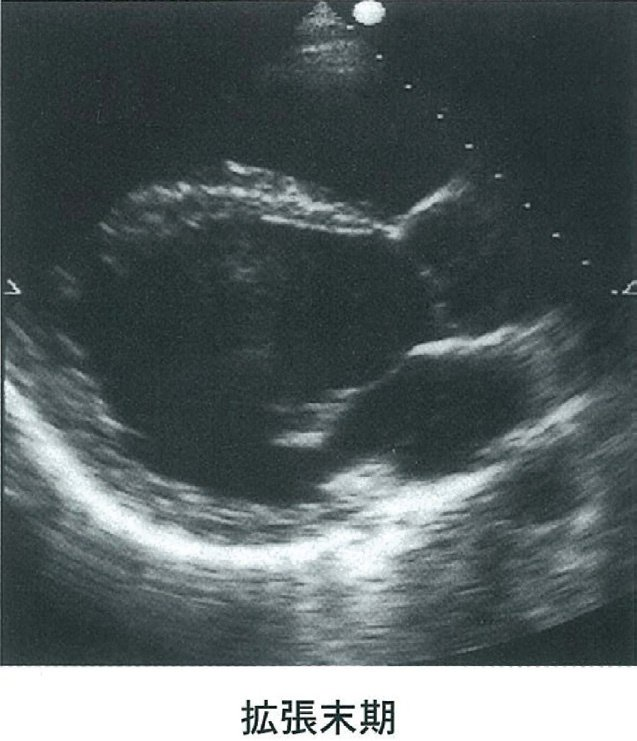
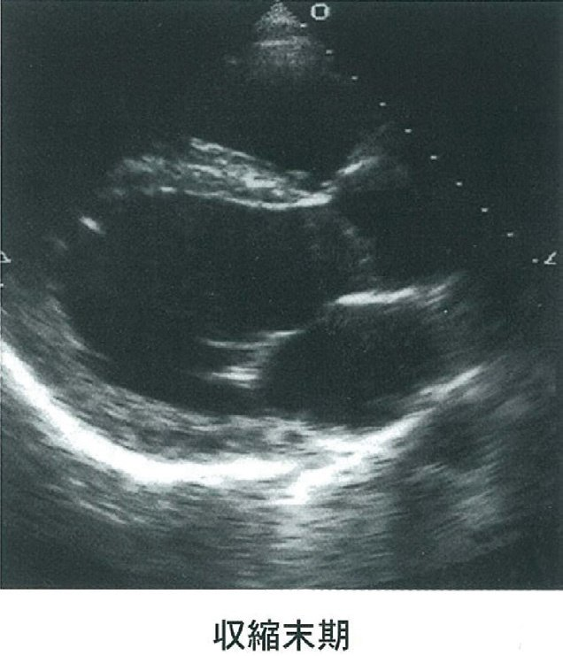
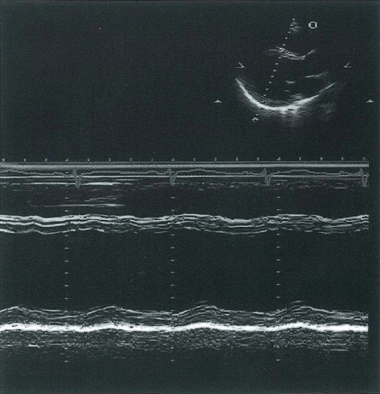
ａ 硝酸薬
ｂ α遮断薬
ｃ β遮断薬
ｄ カルシウム拮抗薬
ｅ アンジオテンシンⅡ受容体拮抗薬
✅
ｃ β遮断薬 ＋ ｅ アンジオテンシンⅡ受容体拮抗薬
DCM（HFrEF）：β遮断薬＋ARB（またはACE阻害薬）が予後改善薬の中心。
🔄 心不全に「収縮を弱める薬」を使う逆説——β遮断薬はなぜ効くのか
51歳男性、3か月かけて進行する労作時息切れ、父方の家系に心疾患が多い、Ⅲ音を聴取、血圧104/64mmHg——家族性の拡張型心筋症を疑う提示である。Ⅲ音は拡張早期の急速充満期に拡大して張りを失った心室が振動する音で、容量負荷を伴う心不全を示す。ここで問われるのは「動きの悪い心臓に、なぜ収縮を弱める薬を使うのか」という心不全治療最大の逆説である。
心拍出量が落ちると、身体はそれを補おうとして交感神経系とRAA系を動員する——短期的には血圧と拍出量が保たれるが、長期的にはこの代償こそが心臓を壊す：
・カテコラミンの持続曝露 → β受容体のdown-regulation・心筋細胞のアポトーシス・線維化
・頻脈 → 心筋酸素消費の増大と拡張期短縮による冠灌流の低下
・アンジオテンシンⅡとアルドステロン → 後負荷増大・心筋肥大・線維化・体液貯留
・不整脈の誘発 → 突然死
つまり心不全の進行は「ポンプが弱いこと」そのものより「弱さを補おうとする仕組みの暴走」によって起こる——だから治療の柱はこの暴走を止めることになり、β遮断薬（交感神経の遮断）とARB／ACE阻害薬（RAA系の遮断）がそろって予後を改善するのである。「強心薬で押す」のではなく「ブレーキをかける」——これが現代の心不全治療のかたちである。
□ 選択肢の検討
| 選択肢 | 解説 |
|---|---|
| ａ 硝酸薬 | 適切でない。硝酸薬は静脈拡張により前負荷を下げてうっ血症状を一時的に和らげるが、生命予後を改善する根拠はない——狭心症の胸痛や急性心不全の肺うっ血に用いる対症的な薬であり、慢性心不全の基本薬にはならない。 |
| ｂ α遮断薬 | 適切でない。α遮断薬は末梢血管抵抗を下げるが、収縮不全の心不全で予後を改善しない——大規模試験では心不全の発症・増悪がむしろ増えたと報告されており、心不全患者の降圧薬としても優先されない。 |
| ◯ ｃ β遮断薬 | 適切であり、正解の1つ。心不全では心拍出量の低下を補うために交感神経系が慢性的に亢進するが、この状態が続くと心筋のβ受容体が減少（down-regulation）し、カテコラミンの直接毒性で心筋細胞のアポトーシスと線維化が進む——β遮断薬はこの流れを断ち、心拍数を落として心筋の酸素消費を減らし、拡張期を延ばして冠灌流を改善する。結果として左室駆出率が改善し、生命予後が延びる。 |
| ｄ カルシウム拮抗薬 | 適切でない。ジヒドロピリジン系Ca拮抗薬は陰性変力作用と反射性の交感神経賦活のため収縮不全の心不全には推奨されない——非ジヒドロピリジン系（ベラパミル・ジルチアゼム）は陰性変力作用がさらに強く禁忌である。 |
| ◯ ｅ アンジオテンシンⅡ受容体拮抗薬 | 適切であり、正解の1つ。アンジオテンシンⅡ受容体拮抗薬〈ARB〉はRAA系を遮断して後負荷を下げ、心筋の線維化・肥大を抑える——ACE阻害薬とほぼ同等の予後改善効果をもち、ACE阻害薬で空咳が出る場合の代替として用いられる。副作用として高カリウム血症・腎機能悪化に注意し、妊婦・両側腎動脈狭窄には禁忌である。 |
📌 β遮断薬の導入は「少量から・ゆっくり」——始め方に作法がある
β遮断薬は予後改善薬だが、始め方を誤ると心不全を悪化させるという特殊な薬である——陰性変力作用が先に出て、予後改善効果が現れるまでには週〜月単位かかるからである。| 原則 | 内容 |
|---|---|
| ① 導入の時期 | うっ血が取れ、血行動態が安定した時期に始める。非代償期・心原性ショックには使わない |
| ② 用量 | 目標量の1/8〜1/4といった少量から開始し、1〜2週ごとに倍増していく（start low, go slow） |
| ③ 薬剤 | 予後改善が示されているのはカルベジロール・ビソプロロール（すべてのβ遮断薬が同等ではない） |
| ④ 経過 | 導入初期に一過性の症状悪化・体重増加が起こりうる。利尿薬を調整して乗り切り、安易に中止しない |
| ⑤ 注意 | 喘息（カルベジロールはα₁遮断も持つが非選択的）、高度徐脈・房室ブロック、末梢動脈疾患 |
🎯 国試ポイント
①HFrEFの予後改善薬＝β遮断薬＋ACE阻害薬／ARB（ARNI）＋MRA＋SGLT2阻害薬②心不全の進行は交感神経系とRAA系の代償の暴走による——だから遮断が治療になる
③β遮断薬は安定期に少量から漸増。予後改善が示されているのはカルベジロール・ビソプロロール
④ACE阻害薬の空咳にはARBへ変更。併用はしない（高K血症・腎機能悪化）
⑤硝酸薬・α遮断薬・Ca拮抗薬は予後を改善しない
Q.467(103D-40)臨床📷 画像2択84%
36 歳の男性。息切れと疲労感とを主訴に来院した。2 年前から労作時の息切れを自覚していた。意識は清明。脈拍84/ 分、整。血圧112/72mmHg。胸部聴診でⅢ音を聴取するが、心雑音は聴取しない。呼吸音に異常を認めない。腹部は平坦、軟で、肝・脾を触知しない。浮腫を認めない。胸部エックス線写真での心胸郭比66％。心エコー図を示す。
この患者の予後を改善するのはどれか。2 つ選べ。
この患者の予後を改善するのはどれか。2 つ選べ。

ａ 強心薬
ｂ α遮断薬
ｃ β遮断薬
ｄ カルシウム拮抗薬
ｅ アンジオテンシン変換酵素阻害薬
✅
ｃ β遮断薬 ＋ ｅ アンジオテンシン変換酵素阻害薬
DCM（HFrEF）の予後改善：β遮断薬＋ACE阻害薬（ARB）。強心薬・α遮断薬・Ca拮抗薬は予後改善なし。
📊 「予後を改善する」とはどういうことか——症状の薬と寿命の薬を分ける
36歳男性、2年前からの労作時息切れ、Ⅲ音を聴取するが心雑音はない、心胸郭比66%という著明な心拡大——拡張型心筋症の像である。問われているのは治療そのものではなく「どの薬が寿命を延ばすか」であり、症状を取る薬と予後を変える薬は別物だという認識を試している。心不全治療の歴史はこの区別が生まれる過程そのものだった：
第1世代（〜1980年代）：強心と利尿——ジギタリスと利尿薬。「弱った心臓を叩いて動かす」発想。症状はよくなるが寿命は延びず、経口強心薬はむしろ死亡率を上げた
第2世代（1980〜2000年代）：神経体液性因子の遮断——ACE阻害薬・β遮断薬・MRA。「代償機構の暴走を止める」発想への転換で、初めて生命予後の改善が示された
第3世代（2010年代〜）——ARNI（RAA系遮断＋ナトリウム利尿ペプチド系の増強）とSGLT2阻害薬（糖尿病の有無を問わず有効）が加わり、現在の4本柱が完成した
この歴史を踏まえると、選択肢は自動的に仕分けられる——強心薬とα遮断薬とCa拮抗薬は「効きそうに見えて予後を変えない（悪くする）」群、β遮断薬とACE阻害薬は「一見逆効果に見えて寿命を延ばす」群。直感と逆になるところが、この分野が繰り返し出題される理由である。
□ 選択肢の検討
| 選択肢 | 解説 |
|---|---|
| ａ 強心薬 | 予後を改善しない。経口強心薬（PDEⅢ阻害薬・ドパミン作動薬など）は心拍出量を一時的に増やして症状を和らげるが、大規模試験でむしろ死亡率が上昇した——心筋の酸素消費を増やし、致死性不整脈を誘発して突然死を増やすためと考えられている。使用は急性期の低心拍出に対する短期間の橋渡しに限られる。 |
| ｂ α遮断薬 | 予後を改善しない。α遮断薬は末梢血管抵抗を下げるものの、収縮不全の心不全において生命予後を改善する根拠はない——大規模試験では心不全の発症・増悪が多く報告されている。 |
| ◯ ｃ β遮断薬 | 予後を改善し、正解の1つ。β遮断薬は慢性的な交感神経の過剰刺激から心筋を守る——カテコラミンによる心筋細胞のアポトーシスと線維化を抑え、β受容体の反応性を回復させ、心拍数を落として酸素消費を減らす。複数の大規模試験で総死亡率と突然死の減少が示され、HFrEF治療の柱として確立している（カルベジロール・ビソプロロール）。 |
| ｄ カルシウム拮抗薬 | 予後を改善しない。ジヒドロピリジン系Ca拮抗薬は大規模試験で死亡率を変えなかった——陰性変力作用と反射性交感神経賦活のため積極的な適応はない。非ジヒドロピリジン系（ベラパミル・ジルチアゼム）は陰性変力作用が強く収縮不全の心不全に禁忌である。 |
| ◯ ｅ アンジオテンシン変換酵素阻害薬 | 予後を改善し、正解の1つ。ACE阻害薬はアンジオテンシンⅡの産生を抑えて後負荷を下げ、アルドステロンによる線維化と体液貯留を抑える——心不全で最初に生命予後の改善が証明された薬であり、症状の有無を問わず左室収縮能低下があれば適応となる。空咳が出ればARBへ変更。妊娠・両側腎動脈狭窄・血管性浮腫の既往は禁忌である。 |
📌 心不全薬の効果を「症状」と「予後」に仕分ける
| 薬剤 | 症状の改善 | 予後の改善 | 備考 |
|---|---|---|---|
| ACE阻害薬／ARB | ◯ | ◯ | 無症候（Stage B）から適応 |
| β遮断薬 | ◯（長期） | ◯ | 安定期に少量から。急性期は禁物 |
| MRA | ◯ | ◯ | 高カリウム血症・女性化乳房（スピロノラクトン） |
| SGLT2阻害薬 | ◯ | ◯ | HFpEFにも有効 |
| ARNI | ◯ | ◯ | ACE阻害薬からの切替は36時間空ける |
| ループ利尿薬 | ◯（最も速い） | × | うっ血の管理に不可欠だが寿命は延ばさない |
| ジギタリス | ◯ | × | 入院は減るが総死亡は不変。心房細動合併例で使う |
| 硝酸薬 | ◯ | × | 対症的 |
| 経口強心薬（長期） | ◯ | 悪化 | 死亡率を上げる。急性期の短期使用に限る |
🎯 国試ポイント
①HFrEFで予後を改善するのはβ遮断薬とACE阻害薬／ARB（＋MRA・SGLT2阻害薬・ARNI）②利尿薬・ジギタリス・硝酸薬は症状の薬で予後を変えない
③経口強心薬の長期投与は死亡率を上げる——急性期の短期使用に限る
④α遮断薬・Ca拮抗薬は収縮不全の心不全で予後を改善しない
⑤薬以外の予後改善手段＝ICD・CRT・心臓リハビリテーション・疾病管理プログラム
Q.468(103E-40)臨床3択91%
16 歳の女子。全校集会で長時間の立位後に失神して倒れたため校医を受診した。目撃者によると意識は1 分以内に回復し、すぐに立ち上がることができた。失神前に嘔気と胸痛とを自覚したという。2 年前にもランニング中に失神したことがあった。身体診察で異常所見を認めない。母方の叔父が突然死している。校医は専門医に紹介した。
紹介する根拠となった病歴はどれか。3 つ選べ。
紹介する根拠となった病歴はどれか。3 つ選べ。
ａ 運動中の失神
ｂ 失神前の胸痛
ｃ 失神の持続時間
ｄ 突然死の家族歴
ｅ 長時間の立位後の失神
✅
ａ 運動中の失神 ＋ ｂ 失神前の胸痛 ＋ ｄ 突然死の家族歴
労作時の失神・失神前の胸痛・若年突然死の家族歴の3つが心原性を疑う危険信号＝専門医へ紹介する根拠。
💀 若年者の突然死——何が原因で、どう拾い上げるか
16歳という年齢で「運動中の失神」と「若年の突然死の家族歴」がそろったとき、想起すべき疾患群は決まっている——大きく①心筋の病気 ②電気の病気 ③冠動脈・大血管の病気に分けられる。①心筋の病気
・肥大型心筋症——若年者・アスリートの突然死の最多原因。収縮期駆出性雑音・Ⅳ音・左室高電位と広範な陰性T波
・不整脈原性右室心筋症〈ARVC〉——右室心筋が脂肪・線維に置き換わる。V₁〜V₃の陰性T波・ε波、運動中の心室頻拍
②電気の病気（器質的異常なし）
・QT延長症候群——運動・驚愕（水泳・目覚まし）で誘発。torsades de pointes。難聴を伴う型（Jervell–Lange-Nielsen症候群）がある
・Brugada症候群——東アジアの中年男性、夜間・睡眠中の心室細動、右側胸部誘導のcoved型ST上昇
・カテコラミン誘発多形性心室頻拍〈CPVT〉——運動・情動で二方向性／多形性心室頻拍。安静時心電図は正常
・WPW症候群——心房細動が副伝導路を通って心室細動に移行しうる
③冠動脈・大血管
・冠動脈起始異常——運動時に大動脈と肺動脈の間で圧迫される。若年アスリートの突然死原因の上位
・Marfan症候群の大動脈解離——高身長・くも状指・水晶体亜脱臼
・川崎病後の冠動脈瘤——乳幼児期の既往を聴く
□ 選択肢の検討
| 選択肢 | 解説 |
|---|---|
| ◯ ａ 運動中の失神 | 紹介の根拠であり、正解の1つ。運動中（ランニング中）の失神は失神の危険信号のなかで最も重い——運動時には交感神経が緊張して心拍出量を増やす必要があり、それを妨げる器質的閉塞やカテコラミンで誘発される致死性不整脈があると意識を失う。若年者では肥大型心筋症・冠動脈起始異常・不整脈原性右室心筋症・QT延長症候群・カテコラミン誘発多形性心室頻拍が候補になる。 |
| ◯ ｂ 失神前の胸痛 | 紹介の根拠であり、正解の1つ。失神に胸痛が先行するのは心原性を示唆する——左室流出路閉塞や心筋虚血、あるいは大血管疾患（大動脈解離・肺血栓塞栓症）を考える所見である。なお本例の「嘔気」だけであれば血管迷走神経性失神の前駆症状としてありふれているが、胸痛が加わることで意味が変わる点が要点である。 |
| ｃ 失神の持続時間 | 紹介の根拠にはならない。1分以内の速やかで完全な回復は失神一般の特徴であり、良性を否定する材料にならない——むしろ「すぐ立ち上がることができた」という記載は血管迷走神経性失神に典型的である。回復が遷延する・けいれんを伴う・もうろう状態が続く場合はてんかん発作などを考える。 |
| ◯ ｄ 突然死の家族歴 | 紹介の根拠であり、正解の1つ。母方の叔父の突然死——若年（一般に50歳未満）の突然死の家族歴は遺伝性心筋症・遺伝性不整脈を示唆する。これらの多くは常染色体顕性遺伝で家族内に集積し、本人の突然死リスクを高める独立した因子としてICDの適応判断にも組み込まれる。 |
| ｅ 長時間の立位後の失神 | 紹介の根拠にはならない。全校集会での長時間の立位は血管迷走神経性失神の最も典型的な誘因である——下肢に血液が貯留して静脈還流が減り、空になった心室の強い収縮が機械受容器を刺激して徐脈と血管拡張を引き起こす（Bezold–Jarisch反射）。誘因が明らかであること自体が良性を支持する。 |
📌 失神の病歴聴取——「良性の証拠」と「危険の証拠」を対で持つ
| 項目 | 良性（反射性）を支持 | 危険（心原性）を支持 |
|---|---|---|
| 誘因 | 長時間の立位、疼痛、恐怖、採血、暑い場所、排尿・排便・咳嗽 | 労作中・運動中、臥位、突然の音や驚愕 |
| 前駆症状 | 悪心・冷汗・生あくび・眼前暗黒感（数十秒） | なし（突然倒れる）、または胸痛・動悸 |
| 回復 | 速やか・完全 | 遷延、外傷を伴う |
| 既往・家族歴 | 同様のエピソードを繰り返す（若年から） | 若年突然死の家族歴、心疾患の既往 |
| 身体所見 | 異常なし | 心雑音、脈の異常 |
| 心電図 | 正常 | QT異常・δ波・coved型ST上昇・ε波・左室高電位・房室ブロック |
本邦では学校心臓検診（小1・中1・高1で心電図）により無症状の肥大型心筋症・QT延長症候群・WPW症候群を拾い上げる仕組みがある——それでも症状が出てから見つかる例は少なくないので、失神の病歴聴取そのものがスクリーニングになる。
🎯 国試ポイント
①専門医紹介の根拠＝運動中の失神・失神前の胸痛・突然死の家族歴の3つ②長時間の立位が誘因・1分以内の速やかな回復は良性（血管迷走神経性）を支持し、根拠にならない
③若年突然死の原因＝肥大型心筋症（最多）・ARVC・QT延長症候群・Brugada症候群・CPVT・WPW症候群・冠動脈起始異常・Marfan症候群
④誘発される場面が疾患を示唆する——運動＝HCM・CPVT・QT延長（LQT1）、夜間睡眠＝Brugada症候群
⑤危険の証拠が1つでもあれば精査するのが失神診療の鉄則
Q.469(101B-73)一般77%
怒責（Valsalva 負荷試験）で心雑音が増強するのはどれか。
ａ 肺動脈狭窄症
ｂ 肥大型心筋症
ｃ 鉄欠乏性貧血
ｄ 心室中隔欠損症
ｅ 三尖弁閉鎖不全症
✅
ｂ 肥大型心筋症
Valsalva（怒責）→静脈還流↓→前負荷↓→HOCMの閉塞↑→雑音増強。
🫁 Valsalva手技——胸腔内圧を上げて「左室を小さくする」試験
Valsalva手技（怒責）とは声門を閉じたまま強く息もうとして胸腔内圧を高める操作で、循環動態は4つの相をたどる：第Ⅰ相（いきみ始め）——胸腔内圧の上昇が大動脈を圧迫し、一過性に血圧が上がる
第Ⅱ相（いきみの持続）——静脈還流が減少して心拍出量が低下し、血圧が下がる。反射性に頻脈になる。雑音の変化を見るのはこの相である
第Ⅲ相（いきみの解除直後）——胸腔内圧が下がり一過性に血圧が低下する
第Ⅳ相（解除後）——静脈還流が戻り、収縮していた末梢血管に血液が流れて血圧がオーバーシュートし、反射性に徐脈になる
聴診で意味を持つのは第Ⅱ相の「前負荷の減少」である——左室に入る血液が減れば、ふつうの狭窄・逆流・短絡の雑音はすべて小さくなる。ところが閉塞性肥大型心筋症だけは違う——左室の容量が減ると肥厚した中隔と僧帽弁前尖の隙間（流出路）が狭まり、SAMが強まって圧較差が増大する。同じ理屈で僧帽弁逸脱症も増強する（左室が小さいほど弁尖が余って逸脱しやすい）——クリックと雑音が収縮期の早い時期へ移動して長く聞こえるようになる。
つまり「Valsalvaで増強＝HOCMかMVP」——この2つだけを覚えればよい。
□ 選択肢の検討
| 選択肢 | 解説 |
|---|---|
| ａ 肺動脈狭窄症 | 減弱する。肺動脈弁狭窄症は右心系の疾患で、雑音の大きさは右室を通る血流量に比例する——Valsalva手技では胸腔内圧の上昇により右心系への静脈還流が真っ先に減るので雑音は小さくなる。逆に吸気で増強する（Rivero-Carvallo徴候）。 |
| ◯ ｂ 肥大型心筋症 | 増強し、これが正解。Valsalva手技（怒責）では胸腔内圧が上がり、静脈還流が減って左室の容量が小さくなる——閉塞性肥大型心筋症では左室が小さいほど流出路が狭くなるので、圧較差が増して雑音が大きくなる。ほとんどすべての心雑音がValsalvaで減弱するなかで例外的に増強する——だからこの手技が閉塞性肥大型心筋症の診断に使われる。 |
| ｃ 鉄欠乏性貧血 | 減弱する。貧血では血液粘度の低下と代償性の心拍出量増加により機能性（無害性）収縮期雑音が生じる——これは血流が速く多いことによる雑音なので、静脈還流が減れば当然小さくなる。貧血の是正で消失する点も、器質的疾患との違いである。 |
| ｄ 心室中隔欠損症 | 減弱する。心室中隔欠損症の全収縮期雑音は左室から右室への短絡血流によって生じる——Valsalva手技で静脈還流が減れば左室の容量と収縮期圧が下がり、短絡量が減るので雑音は小さくなる。 |
| ｅ 三尖弁閉鎖不全症 | 減弱する。三尖弁閉鎖不全症も右心系の疾患である——Valsalva手技では右心への静脈還流が減って逆流量が減るため雑音は減弱し、吸気では右心還流が増えて増強する（Rivero-Carvallo徴候）。頸静脈波のCV波・拍動性肝腫大を伴う。 |
📌 生理学的手技による心雑音の変化——ひとつの表にまとめる
| 手技 | 血行動態 | 増強するもの | 減弱するもの |
|---|---|---|---|
| Valsalva（第Ⅱ相）・立位 | 前負荷↓（左室容量↓） | HOCM・僧帽弁逸脱症 | その他ほぼすべて（AS・MR・VSD・TR・PS） |
| しゃがみ込み・下肢挙上 | 前負荷↑（＋後負荷↑） | AS・MR・AR・VSDなど | HOCM・僧帽弁逸脱症 |
| 等尺性握力（handgrip） | 後負荷↑ | MR・VSD・AR（左室から逃げる方向の逆流が増える） | HOCM・AS |
| 吸気 | 右心系への還流↑ | 右心系すべて（TR・TS・PS・PR）＝Rivero-Carvallo徴候 | 左心系 |
| 呼気・前傾坐位 | 左心系が胸壁に近づく | AR（大動脈弁閉鎖不全）の拡張期灌流性雑音 | — |
| 亜硝酸アミル吸入 | 前負荷↓・後負荷↓ | HOCM・AS | MR・VSD・AR（後負荷が下がり逆流・短絡が減る） |
Valsalva手技には聴診以外の使い道もある：発作性上室頻拍の停止（迷走神経刺激手技として、下肢挙上を加えた修正法が有効）、心不全の診断（第Ⅳ相の血圧オーバーシュートが消えるsquare wave response）、耳管の通気——ただし急性心筋梗塞・大動脈解離・緑内障・網膜剝離では行うべきでない。
🎯 国試ポイント
①Valsalva手技（怒責）・立位で増強する雑音＝閉塞性肥大型心筋症と僧帽弁逸脱症。ほかはすべて減弱する②機序は第Ⅱ相の静脈還流減少→左室容量減少→流出路狭窄の増悪
③しゃがみ込み・下肢挙上・握力ではHOCMの雑音は減弱する（他疾患は増強）
④吸気で増強＝右心系（TR・TS・PS・PR）＝Rivero-Carvallo徴候
⑤貧血の収縮期雑音は機能性（無害性）で、血流量が減れば小さくなる